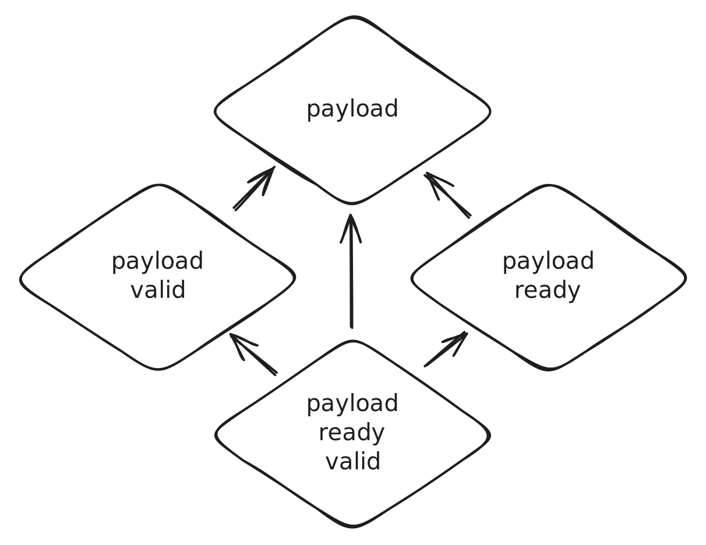

Amaranth RFCs - RFC Book
The "RFC" (request for comments) process is intended to provide a consistent and controlled path for changes to Amaranth (such as new features) so that all stakeholders can be confident about the direction of the project.
Many changes, including bug fixes and documentation improvements can be implemented and reviewed via the normal GitHub pull request workflow.
Some changes though are "substantial", and we ask that these be put through a bit of a design process and produce a consensus among the Amaranth community.
The responsibility for evolving an Amaranth "subsystem" (a clearly defined part of the Amaranth project) lies on a subsystem maintainer. The assignment of maintainers to subsystems is:
- Core: Catherine @whitequark
- The "core" subsystem includes the HDL frontend, backend, and simulator, as well as the build and platform systems.
- This covers the amaranth-lang/amaranth repository and the
amaranthPython package.
- SoC: Jean-François @jfng
- The "SoC" subsystem includes the SoC infrastructure.
- This covers the amaranth-lang/amaranth-soc repository and the
amaranth_socPython package.
- Other repositories and Python packages are not currently covered by the RFC process and changes are implemented on an ad-hoc basis.
Table of Contents
- Opening
- Table of Contents
- When you need to follow this process
- Before creating an RFC
- What the process is
- The RFC life-cycle
- Reviewing RFCs
- Merging an RFC
- Implementing an RFC
- Acknowledgements
- License
When you need to follow this process
You need to follow this process if you intend to make "substantial" changes to any of the subsystems listed above.
What constitutes a "substantial" change is evolving based on community norms and varies depending on what part of the ecosystem you are proposing to change, but may include the following:
- Any semantic or syntactic change to the language (
amaranth.hdl) that is not a bugfix. - Behavioral changes to the standard library (
amaranth.lib). - Behavioral changes to the simulator interface (
amaranth.sim). - Behavioral changes to the toolchain interface (
amaranth.vendor).
Some changes do not require an RFC:
- Rephrasing, reorganizing, refactoring, or otherwise "changing shape does not change meaning".
- Additions that strictly improve objective, numerical quality criteria (warning removal, speedup, better platform coverage, handling more errors, etc.)
If you submit a pull request to implement a new feature without going through the RFC process, it may be closed with a polite request to submit an RFC first. When in doubt, please open an issue to discuss the feature first and the subsystem maintainer will say if the change requires an RFC or not.
Before creating an RFC
A hastily-proposed RFC can hurt its chances of acceptance. Low quality proposals, proposals for previously-rejected features, or those that don't fit into the near-term roadmap, may be quickly rejected, which can be demotivating for the unprepared contributor. Laying some groundwork ahead of the RFC can make the process smoother.
Although there is no single way to prepare for submitting an RFC, it is generally a good idea to pursue feedback from other project developers beforehand, to ascertain that the RFC may be desirable; having a consistent impact on the project requires concerted effort toward consensus-building.
The most common preparations for writing and submitting an RFC include talking the idea over on our IRC channel, #amaranth-lang at libera.chat, or opening an issue on the corresponding repository to gather feedback.
What the process is
In short, to get a major feature added to Amaranth, one must first get the RFC merged into the RFC repository as a markdown file. At that point the RFC is "active" and may be implemented with the goal of eventual inclusion into Amaranth.
- Fork the RFC repository.
- Copy 0000-template.md to text/0000-my-feature.md (where "my-feature" is descriptive). Don't assign an RFC number yet; This is going to be the PR number and we'll rename the file accordingly if the RFC is accepted.
- Fill in the RFC. Put care into the details: RFCs that do not present convincing motivation, demonstrate lack of understanding of the design's impact, or are disingenuous about the drawbacks or alternatives tend to be poorly-received.
- Submit a pull request. As a pull request the RFC will receive design feedback from the larger community, and the author should be prepared to revise it in response.
- Now that your RFC has an open pull request, use the issue number of the PR to update your 0000- prefix to that number.
- Build consensus and integrate feedback. RFCs that have broad support are much more likely to make progress than those that don't receive any comments. Feel free to reach out to the RFC assignee in particular to get help identifying stakeholders and obstacles.
- RFCs rarely go through this process unchanged, especially as alternatives and drawbacks are shown. You can make edits, big and small, to the RFC to clarify or change the design, but make changes as new commits to the pull request, and leave a comment on the pull request explaining your changes. Specifically, do not squash or rebase commits after they are visible on the pull request.
- At some point, the subsystem maintainer will make a decision on the disposition for the RFC (merge, close, or postpone).
- This step is taken when enough of the tradeoffs have been discussed that the subsystem maintainer is in a position to make a decision. That does not require consensus amongst all participants in the RFC thread (which is usually impossible). However, the argument supporting the disposition on the RFC needs to have already been clearly articulated, and there should not be a strong consensus against that position.
The RFC life-cycle
Once an RFC becomes "active" then authors may implement it and submit the feature as a pull request to the corresponding repository. Being "active" is not a rubber stamp, and in particular still does not mean the feature will ultimately be merged; it does mean that in principle all the major stakeholders have agreed to the feature and are amenable to merging it.
Furthermore, the fact that a given RFC has been accepted and is "active" implies nothing about what priority is assigned to its implementation, nor does it imply anything about whether a developer has been assigned the task of implementing the feature. While it is not necessary that the author of the RFC also write the implementation, it is by far the most effective way to see an RFC through to completion: authors should not expect that other project developers will take on responsibility for implementing their accepted feature.
Modifications to "active" RFCs can be done in follow-up pull requests. We strive to write each RFC in a manner that it will reflect the final design of the feature; but the nature of the process means that we cannot expect every merged RFC to actually reflect what the end result will be at the time of the next major release.
In general, once accepted, RFCs should not be substantially changed. Only very minor changes should be submitted as amendments. More substantial changes should be new RFCs, with a note added to the original RFC. Exactly what counts as a "very minor change" is up to the subsystem maintainers to decide.
Reviewing RFCs
While the RFC pull request is up, the subsystem maintainers may schedule meetings with the author and/or relevant stakeholders to discuss the issues in greater detail, and the topic may be discussed at weekly meetings. In either case a summary from the meeting will be posted back to the RFC pull request.
The subsystem maintainer makes final decisions about RFCs after the benefits and drawbacks are well understood. These decisions can be made at any time, but the subsystem maintainer will regularly issue decisions. When a decision is made, the RFC pull request will either be merged or closed. In either case, if the reasoning is not clear from the discussion in thread, the subsystem maintainer will add a comment describing the rationale for the decision.
Merging an RFC
Once the decision is made to merge an RFC, the text must be prepared first. To do this:
- Update the RFC text to reflect any changes that had to be made to achieve consensus.
- Ensure that the "Unresolved questions" section does not have any unanswered questions.
- Create a tracking issue in the relevant repository.
- Fill in the RFC header fields (start date, RFC PR, tracking issue).
- Rename the RFC filename to include the number of the RFC PR instead of
0000.- This step can be done either as a part of the merge commit in the next step, or by the RFC author right after submitting the PR.
- Merge the RFC PR with the commit message "RFC #NNNN: Title of the RFC".
- This step can only be done by someone with the write access to the RFC repository.
Implementing an RFC
Some accepted RFCs represent vital features that need to be implemented right away. Other accepted RFCs can represent features that can wait until some arbitrary developer feels like doing the work. Every accepted RFC has an associated issue tracking its implementation in the corresponding repository.
The author of an RFC is not obligated to implement it. Of course, the RFC author (like any other developer) is welcome to post an implementation for review after the RFC has been accepted.
If you are interested in working on the implementation for an "active" RFC, but cannot determine if someone else is already working on it, feel free to ask (e.g. by leaving a comment on the associated issue).
RFC Postponement
Some RFC pull requests are tagged with the "postponed" label when they are closed (as part of the rejection process). An RFC closed with "postponed" is marked as such because we want neither to think about evaluating the proposal nor about implementing the described feature until some time in the future, and we believe that we can afford to wait until then to do so. Postponed pull requests may be re-opened when the time is right. We don't have any formal process for that, you should ask the subsystem maintainer.
Usually an RFC pull request marked as "postponed" has already passed an informal first round of evaluation, namely the round of "do we think we would ever possibly consider making this change, as outlined in the RFC pull request, or some semi-obvious variation of it." (When the answer to the latter question is "no", then the appropriate response is to close the RFC, not postpone it.)
Acknowledgements
The process described in this document is based on the Rust RFC process. It has been simplified to match the needs of the much smaller Amaranth community; in particular, policy (including the RFC process itself) is not currently defined through the RFC process.
License
This repository is licensed under the MIT license.
- Start Date: 2023-02-14
- RFC PR: amaranth-lang/rfcs#1
- Amaranth Issue: amaranth-lang/amaranth#748
Aggregate data structure library
Amendments The behavior described in this RFC was updated by RFC #8, RFC #9, and RFC #15.
Summary
Add a rich set of standard library classes for accessing hierarchical aggregate data an idiomatic way, to fill one of the two major use cases of Record while avoiding its downsides.
See also RFC #2.
Motivation
Amaranth has a single data storage primitive: Signal. A Signal can be referenced on the left hand and the right hand side of an assignment, and so can be its slices. Although a signal serves the role of a numeric and bit container type fine, designs often include signals used as bit containers whose individual bits are named and have unique meanings. A mechanism that allows referring to such bit fields by name is essential.
Currently, the role of this mechanism is served by Record. However, Record has multiple major drawbacks:
-
Recordattempts to do too much: it is both a mechanism for controlling representation (including implicitly casting a record to a value) and a mechanism for defining interfaces (specifying signal directions and facilitating connections between records).These mechanisms should be defined separately, since the only aspect they have in common is using a container class that consists of multiple named fields. Conflating the two mechanisms constraints the design space, making addressing the other drawbacks impossible, and the ill-defined scope encourages bugs in downstream code.
-
Recordhas limited composability: records can only be nested within each other. Practical designs (in particular, implementations of protocols) use data with complex representation beyond nested sequences of fields: these include overlaid sequences of fields (where interpretation alternates based on some discriminant) and arrays of fields (where a field can be indexed by a non-constant), where any individual field can have a complex representation itself.Recordis structured as a sequence ofSignals, which is a part of its API. As such, it cannot support overlaid fields, and implementing support for arrays of fields is challenging. -
Recordhas limited introspectability: while itslayoutmember can be accessed to enumerate its fields, the results do not include field boundaries, and the types of the returned shape-castable objects are preserved only as an implementation detail.Layoutobjects themselves are also not shape-castable.RecordandLayoutare structured as a sequence ofSignals rather than a view into an underlying bit container, which is reflected in its API. Thus,Layoutdoes not fit into Amaranth's data model, which concerns individual values. -
Recordcomes with its own storage: while itsfieldsargument can be used to substitute the signals that individual fields are pointing to (in an awkward and error-prone way), it is still a collection ofSignals. UsingRecordto impose structure on an existingValuerequires aModuleand a combinatorial assignment. This is an unnecessary complication, especially in helper functions. -
Recorddoes not play well with Python's type annotations. Amaranth developers often inherit fromRecordas well asLayout, but in both cases the class definition syntax is usually little more than a way to define a callable returning aRecordwith a specific layout, and provides no benefits for IDE users. -
Recordreserves a lot of names, including commonly used names likeconnect,any,all, andmatches. Conversely, it defines a lot of arithmetic methods that are rarely if ever used on field containers. -
Layout's DSL is very amorphous. It passes around variable length tuples. The second element of these tuples (the shape) can be anotherLayout, which is neither a shape nor a shape-castable object. -
Neither
RecordnorLayoutallow defining fields whose shapes are arbitraryShapeCastableclasses.
Since these drawbacks are entrenched in the public API and heavily restrict usefulness of Record as a mechanism for specifying data representation, a new mechanism must replace it.
Overview and examples
This section shows a bird's eye view of the new syntax and behavior proposed in this RFC. The detailed design is described afterwards.
from amaranth import *
from amaranth.lib import data
# Declaring a simple structure:
class Float32(data.Struct):
fraction: unsigned(23)
exponent: unsigned(8)
sign: unsigned(1)
# Defining a signal with the structure above:
flt_a = Float32()
# Reinterpreting an existing value with the same structure:
flt_b = Float32(Const(0b00111110001000000000000000000000, 32))
# Referencing and updating structure fields by name:
with m.If(flt_b.fraction > 0):
m.d.comb += [
flt_a.sign.eq(1),
flt_a.exponent.eq(127)
]
# Declaring a simple union, referencing an existing structure:
class FloatOrInt32(data.Union):
float: Float32
int: signed(32)
# Using the union to bitcast an IEEE754 value from an integer:
f_or_i = FloatOrInt32()
is_sub_1 = Signal()
m.d.comb += [
f_or_i.int.eq(0x41C80000),
is_sub_1.eq(f_or_i.float.exponent < 127) # => 1
]
class Op(enum.Enum):
ADD = 0
SUB = 1
# Programmatically declaring a structure layout:
adder_op_layout = data.StructLayout({
"op": Op,
"a": Float32,
"b": Float32
})
# Using the layout defined above to define appropriately sized storage...
adder_op_storage = Signal(adder_op_layout)
len(adder_op_storage) # => 65
# ... and wrap it for the fields to be accessible.
adder_op = data.View(adder_op_layout, adder_op_storage)
m.d.comb += [
adder_op.op.eq(Op.SUB),
adder_op.a.eq(flt_a),
adder_op.b.eq(flt_b)
]
Detailed design
This RFC proposes a number of language and library additions:
- Adding a
ShapeCastableinterface, similar toValueCastable; - Adding classes that hierarchically describe representation of aggregate values: named field containers with non-overlapping fields (structs), named field containers with overlapping fields (unions), and indexed field containers (arrays);
- Adding a wrapper class that accepts a
Value(or aValueCastableobject) and provides accessors that slice it according to the corresponding aggregate representation; - Adding an ergonomic and IDE-compatible interface for building descriptions of non-parametric layouts of aggregate values.
User-defined shape-castable objects
ShapeCastable is an interface for defining Shape-like values outside of the core Amaranth language. It is functionally identical to ValueCastable, and could be used like:
from amaranth import *
class Layout(ShapeCastable):
def __init__(self, fields):
self.fields = fields
def as_shape(self):
return unsigned(sum(len(field) for field in self.fields))
Value layout descriptions
Aggregate value layouts are represented using two classes: amaranth.lib.data.Field and amaranth.lib.data.Layout:
- A
Field(shape_castable, offset=0)object describes a field of the given shape starting at bit numberoffsetof the aggregate value. - A
Layout()object describes an abstract aggregate value. It can be iterated, returning(name, field)or(index, field)pairs; or indexed (__getitem__) by the name or index of the field. It has a.sizein bits, determined by the type of the layout, and is shape-castable, being converted tounsigned(layout.size()).- A
StructLayout(members={"name": shape_castable})object describes an aggregate value with non-overlapping named fields (struct). The fields are placed at offsets such that they immediately follow one another, from least significant to most significant. - A
UnionLayout(members={"name": shape_castable})object describes an aggregate value with overlapping named fields (union). The fields are placed at offset 0. - An
ArrayLayout(element=shape_castable, length=1)object describes an aggregate value with indexed fields (array). The fields all have identical shape and are placed at offsets such that they immediately follow one another, from least significant to most significant. - A
FlexibleLayout(fields={"name": field, 0: field}, size=16)object describes a aggregate value with fields arbitrarily placed within its bounds.
- A
The representation of a discriminated union could be programmatically constructed as follows:
import enum
from amaranth.lib import data
class Kind(enum.Enum):
ONE_SIGNED = 0
TWO_UNSIGNED = 1
layout = data.StructLayout({
"kind": Kind,
"value": data.UnionLayout({
"one_signed": signed(2),
"two_unsigned": data.ArrayLayout(unsigned(1), 2)
})
})
Aggregate value access
Aggregate values are manipulated through the amaranth.lib.data.View class. A View(layout, value_castable) object wraps a value-castable object (which may be a valid assignment target) and provides access to fields according to the layout. A view is itself value-castable, being converted to the object it's wrapping. If the view is wrapping a valid assignment target, then the accessors also return a valid assignment target.
Fields can be accessed using either __getitem__ (for both named and indexed fields) or __getattr__ (for named fields). To avoid name collisions when using __getattr__ to access fields, views do not define any non-reserved attributes of their own except for the .as_value() casting method. Field names starting with _ are reserved as attribute names and and can only be accessed using the view["name"] indexing syntax.
When a view is used to access a field whose shape is an ordinary Shape object, the accessor returns a Value of the corresponding shape that slices the viewed object.
When a view is used to access a field whose shape is an aggregate value layout, the accessor returns another View with this layout, wrapping the slice of the viewed object. For fields that have any other shape-castable object set as their shape, the behavior is the same as for the Shape case.
Views that have an ArrayLayout as their layout can be indexed with a Value. In this case, the viewed object is sliced with Value.word_select.
A signal can be manipulated with its structure viewed as the discriminated union defined above as follows:
# creates an unsigned(3) signal by shape-casting `layout`
sig = Signal(layout)
view = data.View(layout, sig)
# if the second argument is omitted, a signal with the right shape is created internally;
# the line below is equivlent to the two lines above
view = data.View(layout)
m = Module()
m.d.comb += [
view.kind.eq(Kind.TWO_UNSIGNED),
view.value.two_unsigned[0].eq(1),
]
Ergonomic layout definition
Rather than using the underlying StructLayout and UnionLayout classes, struct and union layouts can be defined using the Python class definition syntax, with the shapes of the members specified using the PEP 526 variable annotations:
class SomeVariant(data.Struct):
class Value(data.Union):
one_signed: signed(2)
two_unsigned: data.ArrayLayout(unsigned(1), 2)
kind: Kind
value: Value
# this class can be used in the same way as a `data.View` without needing to specify the layout:
view2 = SomeVariant()
m.d.comb += [
view2.kind.eq(Kind.ONE_SIGNED),
view2.value.eq(view.value)
]
When they refer to other structures or unions defined in the same way, the variable annotations are also valid PEP 484 type hints, and will be used by IDEs to derive types of properties and expressions. Otherwise, the annotations will be opaque to IDEs or type checkers, but are still useful for a human reader.
The classes defined in this way are shape-castable and can be used anywhere a shape or a aggregate value layout is accepted:
sig2 = Signal(SomeVariant)
layout2 = data.StructLayout({
"ready": unsigned(1),
"payload": SomeVariant
})
Implementation note: This can be achieved by using a custom metaclass for Struct and Union that inherits from ShapeCastable.
If an explicit Layout object is nevertheless needed (e.g. for introspection), it can be extracted from the class using Layout.cast:
layout == data.Layout.cast(SomeVariant) # => True
Conversely, the shape-castable object defining the layout of a View (which might be a Layout subclass or a Struct/Union subclass) can be extracted from the view using Layout.of:
SomeVariant is data.Layout.of(view2) # => True
Advanced usage: Parametric layouts
The ergonomic definitions using the Struct and Union base classes are concise and integrated with Python type annotations. However, they cannot be used if the layout of an aggregate value is parameterized. In this case, a class with similar functionality can be defined in a more explicit way:
class Stream8b10b(data.View):
data: Signal
ctrl: Signal
def __init__(self, value=None, *, width: int):
super().__init__(data.StructLayout({
"data": unsigned(8 * width),
"ctrl": unsigned(width)
}), value)
len(Stream8b10b(width=1).data) # => 8
len(Stream8b10b(width=4).data) # => 32
Since the parametric class name itself does not have a fixed layout, it cannot be used with Layout.cast. Similarly, the type annotations cannot include specific field widths; they are included only to indicate the presence of a corresponding attribute to IDEs and type checkers.
Structure field ordering
The fields of a structure layout object are ordered from least significant to most significant:
float32_layout = data.StructLayout({
"fraction": unsigned(23), # bits 0..22
"exponent": unsigned(8), # bits 23..30
"sign": unsigned(1) # bit 31
})
class Float32(data.Struct):
fraction: unsigned(23) # bits 0..22
exponent: unsigned(8) # bits 23..30
sign: unsigned(1) # bit 31
In other words, the following identity holds:
float32_storage = Signal(float32_layout)
float32 = data.View(float32_layout, float32_storage)
float32_storage == Cat(float32.fraction, float32_layout.exponent, float32.sign)
Customizing the automatically created Signal
When a view is instantiated without an explicit view target, it creates a Signal with a shape matching the view layout. The View constructor accepts all of the Signal constructor keyword arguments and passes them along; the reset= argument accepts a struct or an array (according to the type of the layout):
flt_neg_reset = data.View(float32_layout, reset={"sign": 1})
flt_reset_less = Float32(reset_less=True)
Drawbacks
This feature introduces a language-level concept, shape-castable objects, increasing language complexity.
This feature introduces a finely grained hierarchy of 5 similar and related classes for describing layouts.
Alternatives
Do nothing. Record will continue to be used alongside the continued proliferation of ad-hoc implementations of similar functionality.
Remove ArrayLayout from this proposal. The array functionality is niche and introduces the complexity of handling by-index accessors alongside by-name ones.
Remove ArrayLayout, UnionLayout, and FlexibleLayout from this proposal. Their functionality is less commonly used than that of StructLayout and introduces the substantial complexity of handling fields at arbitrary offsets. (This would make amaranth.lib.data useless for slicing CSRs in Amaranth SoC.) This change would bring this proposal close to the original PackedStruct proposal discussed in https://github.com/amaranth-lang/amaranth/issues/342.
Combine the Layout and all of its derivative classes into a single Layout(fields={"name": Field(...), 0: Field(...)}) class that provides a superset of the functionality. This simplifies the API, but makes introspection of aggregate layouts very difficult and can be inefficient if large arrays are used. In this case, factory methods of the Layout class would be provided for more convenient construction of regular struct, union, and array layouts.
Remove Struct and Union annotation-driven definition syntax. This makes the API simpler, less redundant, and with fewer corner cases, also avoiding the use of variable annotations that are not valid PEP 484 type hints, at the cost of a continued jarring experience for IDE users.
Include a more concise and less visually noisy way to build StructLayout and UnionLayout objects (or their equivalents) using a builder pattern. This may make the syntax slightly nicer, though the RFC author could not come up with anything that would actually be such.
Bikeshedding
The names of the Field, *Layout, and View classes could be changed to something better.
IrregularLayoutwas renamed toFlexibleLayout.
Future work
This feature could be improved in several ways that are not in scope of this RFC:
StructLayout,UnionLayout, andArrayLayoutcould be extended to generate layouts with padding at the end (for structs and unions) or between elements (for arrays). Currently this requires the use of aFlexibleLayout.StructLayoutcould be extended to accept a list of fields in addition to a map of field names to values. In this case, it would represent an aggregate value with non-overlapping indexed fields (tuple).Structand/orStructLayoutcould be extended to treat certain reserved field names (e.g."_1","_2", ...) as designating padding bits. In this case, the offset of the following fields would be adjusted, and the fields with such names would not appear in the layout.Structand/orStructLayoutcould be extended to treat certain reserved field names (e.g."_"forStructandNoneforStructLayout) as designating an anonymous inner aggregate. In this case, the members of the anonymous inner aggregate would be possible to access as if they were the members of the outer aggregate.- The automatic wrapping of accessed aggregate fields done by
Viewcould be extended to call a user-specified cast function rather than hard-coding a check for whether the shape is aLayout. This would allow seamless inclusion of user-defined value-castable types in aggregates. - The PEP 484 generics could be used to define layouts parametric over field shapes, using type annotations alone. Since Python does not have type-level integers, layouts parametric over field sizes would still need to be defined explicitly.
- The struct, union, and enum support could be used as the building blocks to implement first-class discriminated unions. Discriminated unions will also benefit from tuples, described above. (Suggestion by @lachlansneff.)
Acknowledgements
@modwizcode, @Kaucasus, and @lachlansneff provided valuable feedback while this RFC was being drafted.
- Start Date: 2023-08-22
- RFC PR: amaranth-lang/rfcs#2
- Amaranth Issue: amaranth-lang/amaranth#872
Interface definition library RFC
Summary
Add standard ways of declaring that a component of a design conforms to a particular interface and connecting components with complementary interfaces together, to fill the other of the two major use cases of Record while avoiding its downsides.
See also RFC #1.
Motivation
Digital designs are composed of densely packed components that communicate with each other using well-defined interfaces. Mechanisms to denote the boundary of a component, to ensure that a component complies to a specified interface, and to make reliable connections between components are essential.
Currently, Amaranth provides none of these mechanisms. A component implemented in Amaranth, however well-defined conceptually, has no more external structure than a loose collection of Signals assigned to its attributes; and whether any one of them is a part of the interface or the implementation is up to a guess. Even when an interface is described using amaranth.hdl.rec.Layout, such a description cannot be used to verify even the simplest aspects of compliance, such as presence of fields. Although building components by composing smaller components together is ubiquitous, amaranth.hdl.rec.Layout is not able to compose their interface with the same ease. Connecting components using amaranth.hdl.rec.Record.connect is difficult enough that it sees very little use.
Originally, Record was aimed at solving many of these issues. However, it has multiple major drawbacks:
-
Recordattempts to do too much: it is both a mechanism for controlling representation (including implicitly casting a record to a value) and a mechanism for defining interfaces (specifying signal directions and facilitating connections between records).These mechanisms should be defined separately, since the only aspect they have in common is using a container class that consists of multiple named fields. Conflating the two mechanisms constraints the design space, making addressing the other drawbacks impossible, and the ill-defined scope encourages bugs in downstream code.
-
Record's model of signal directions is too complex. Because it attempts to model both aggregates with controlled representation and interfaces with defined directionality, every signal can have one of the three directions, the third option being non-directed. While this can be applied in a robust way--FIRRTL has only one aggregate type that it uses for both purposes--this gives rise to a large combination of features and requires handling many edge cases. -
Record's model of signal directions is too limited. The two static directionalities it has are the confusingly named "fanout" and "fanin", which really mean "from initiator to target" and "from target to initiator". This is insufficient to describe common, straightforward interactions such as two components exchanging streams of data across pairs of identical, complementary endpoints. -
Records are hard to customize. Records create and hold their signals, only providing the caller with an ability to place caller-created signals into individual fields. Signals often need adjustments: primarily setting a reset value or adding a decoder, but sometimes adding attributes or renaming. These adjustments must be performed at the record creation site, which is burdensome. -
Recordfields can be (apart from sub-records) only plain signals. In many cases, an interface between components carries structured data rather than opaque bit vectors. It is not possible to define inner structure for record fields other than through a sub-record, and using a sub-record for this means that an application-specific endpoint that defines such structure cannot be connected to a generic endpoint that does not. -
Records are hard to compose. The natural way to define a record is to call theRecordconstructor with a layout, but this creates the entire layout hierarchy unless parts of it are replaced; and it requires having the layout of the result in advance. -
Record.connectdetermines the direction of data flow that it will create by the relative position of the interfaces being connected, withx.connect(y)andy.connect(x)having the oposite polarity of assignments. However, the direction of data flow is defined by the component that exposes the interface. Thus, every call ofRecord.connectcan be done in one of the two very similar ways, one of which is always wrong. -
Record.connectuses wired-OR to gather the "fanin" signals, a feature that exists so that it could be used to connect e.g. Wishbone endpoints together without additional gateware. The assumption that the response signals of inactive endpoints will remain all-zero is, generally, unsound. -
Record.connectmanages connections between interfaces with optional signals at the call site using an include/exclude mechanism. However, the semantics of the non-implemented optional signals are a property of the interface, not the connection. -
Recordandrec.Layoutare often used as base classes. TheRecord.likefacility, frequently used because of the poor ergonomics ofrec.Layout, loses this information and returns an instance of the base class;rec.Layoutdoes the same when indexed. As a result, there is little value in defining methods and attributes on the subclass, andRecordsubclasses are little more than a callable computing a layout. -
Due to the limitations of
Record, one might define a plain Python class that exposes compatible attributes. An instance of such a class cannot be compared to a knownrec.Layoutnor can it be embedded in anotherRecord. -
Recordis value-castable and implements the.eq()protocol. Although useful when all fields are non-directional, using.eq()instead of.connect()when connecting directional interfaces is, generally, unsound. It also reserves commonly used names such asany,all, andmatches, and implements arithmetic operations that are rarely if ever used on field containers. -
rec.Layout's DSL is very amorphous. It passes around variable length tuples. The second element of these tuples (the shape) can be anotherrec.Layout, which is neither a shape nor a shape-castable object.
Since these drawbacks are entrenched in the public API and make Record nearly useless for defining interfaces, a new mechanism must replace it.
Outline of the design space
Although some HDLs and IRs (Migen, Chisel, FIRRTL, ...) choose to use the same basic aggregate data type to represent structured data and directional interfaces, these mechanisms are in direct conflict. Complex forms of structured data, such as unions, are incompatible with associating directionality independently with every leaf member; and the non-directional nature of stored data requires complicated and error-prone rules when it can become a part of a directional connection.
Amaranth, instead, opts to include two superficially similar mechanisms for defining and accessing hierarchical aggregate data: amaranth.lib.data (RFC #1) and amaranth.lib.wiring (this RFC). amaranth.lib.data provides data views that reinterpret bit containers as complex aggregates, and entirely avoids directionality. amaranth.lib.wiring provides signatures that give a concrete shape to signals at component boundaries, and always treats them as directional.
When connections are made strictly between an output and a correspondingly named input, interfaces gain a dualistic nature: every connection is made between two interfaces whose port directions are the inverse of each other, and which are identical otherwise. To describe interfaces without repeating oneself, then, one has to pick an arbitrarily preferred directionality (and stick with it). Many interfaces are asymmetric, with data flowing from a source to a sink, or transactions issued from an initiator to a target. Amaranth picks the source or initiator perspective; an interface, examined in isolation, defines as outputs the signals that would be outputs of an initiator (and inputs of a target). Then, when an interface with true (non-flipped) directionality describes a component's output, the same interface with inverse (flipped) directionality symmetrically describes an input.
To eliminate the major usability issues with Record.connect, the interface connection mechanism assigns no precedence to interfaces and has no effect on signal directionality; whether a signal is an input or an output depends only on the interface itself. A connection is only made from an output to a matching input, and any other combination is rejected with a diagnostic. This way, connecting a pair of interfaces always leads to the same outcome, regardless of their order.
The choice to always treat interface signals as directional and to make their directionality dependent only on the interface itself leaves only one aspect of the design open: when and how interface directionality is flipped. The decisions that determine it affect both ergonomics and soundness. Record.connect in effect gives the programmer an option to flip directionality even when it would create an illegal connection. Conversely, rec.Layout provides no such affordance, even though it is necessary for composing components.
To facilitate composing components, the interface's directionality is flipped when it is used as an input, whether a top-level input of a component, or as a constituent of a larger interface. This way, the existing mechanism of annotating the directionality of an interface signal or a module port transparently handles interface composition.
Guide-level explanation
Amaranth designs are made out of components (Python classes implementing Elaboratable) whose attributes include signals. These signals have directions: "in" signals are sampled by the component, while "out" signals are driven by it, or left at their reset value, and are provided to be sampled by other components.
At the moment, these directions are completely informal, and described in the documentation and/or in the signal name as an i_ or o_ prefix (to make it clearer what the direction is at the point of use, or to disambiguate the ports that would otherwise have identical name):
class SequenceSource(Elaboratable):
"""
Ports
-----
data : Signal(width), out
ready : Signal(1), in
valid : Signal(1), out
"""
def __init__(self, width=16):
self.data = Signal(width)
self.ready = Signal()
self.valid = Signal(reset=1)
def elaborate(self, platform):
m = Module()
with m.If(self.ready):
m.d.sync += self.data.eq(self.data + 1)
return m
The SequenceSource component is implemented as a simple counter producing values for an output stream that is connected to some other component consuming them. On each clock tick, if the consumer is ready, it samples the data (the counter value), and simultaneously with that, the producer advances the data to the next item (the incremented value). Since there is always a next item available and it is ready for consumption on the next clock cycle, the stream always contains valid results.
Note It is not, in general, possible to infer the directions of the signals from the implementation—here,
readyandvalidhave different directions and different intended uses, but they look similar to the Amaranth implementation since they are both undriven in the component.
This RFC proposes a way of describing signal directions that can be applied to any Python object. In addition to elaboratables, it includes Python objects that are used to group together signals with a similar purpose, such as those that are parts of a bus.
To describe signal directions, only a single addition is needed: the signature property:
from amaranth.lib.wiring import Signature, In, Out
class SequenceSource(Elaboratable):
...
signature = Signature({
"data": Out(16),
"ready": In(1),
"valid": Out(1)
})
Consider another component that is consuming these values:
class NumberSink(Elaboratable):
...
def elaborate(self):
m = Module()
processing = Signal()
m.d.comb += self.ready.eq(~processing)
with m.If(self.valid & ~processing):
m.d.sync += processing.eq(1)
with m.Elif(processing):
... # process it somehow
signature = Signature({
"data": In(16),
"ready": Out(1),
"valid": In(1)
})
Currently, the only way (given the tools provided by the language and the standard library) to connect the output stream of the SequenceSource to the input stream of the NumberSink is to do this signal-wise:
m = Module()
m.submodules.source = source = SequenceSource()
m.submodules.sink = sink = NumberSink()
m.d.comb += [
sink.data.eq(source.data),
source.ready.eq(sink.ready),
sink.valid.eq(source.valid)
]
This is tedious, verbose, and error-prone. It is possible to define an application-specific function abstracting this operation, and many applications do, but something this universal should be defined on the language level.
This RFC introduces a way to describe interfaces (collections of directional signals; more on this later) and a single operation: connecting. The code above now transforms into:
from amaranth.lib.wiring import connect
m = Module()
m.submodules.source = source = SequenceSource()
m.submodules.sink = sink = NumberSink()
connect(m, sink, source)
The order of arguments to connect does not matter as the directionality is defined by the components themselves. It could just as well be written as:
connect(m, source, sink)
However, this approach still has flaws. Most importantly, the signature for SequenceSource and NumberSink is written twice, but their signature is exactly the same except that the direction is flipped: In members become Out, and vice versa. To avoid error-prone repetition here, the signature can be defined once:
Stream16BitSignature = Signature({
"data": Out(16),
"ready": In(1),
"valid": Out(1)
})
and then used twice, for both the source and the sink:
class SequenceSource(Elaboratable):
...
signature = Stream16BitSignature
class NumberSink(Elaboratable):
...
signature = Stream16BitSignature.flip()
The Signature.flip() method returns a flipped signature object: a signature object whose members have inverse direction but which is otherwise identical.
Since this approach has reusable signatures defined with a specific direction, it is necessary to make an arbitrary choice: pick the kind of object whose signature will use the non-flipped directions. This RFC picks the object that is the source of data (for stream-like interfaces), the transaction initiator (for bus-like interfaces), and so on to use non-flipped directions by convention.
Although some duplication was eliminated, some more remains: currently, it is necessary to define a stream signature for every kind of stream (a stream of 16-bit values, a stream of RGB colors, and so on). It is possible to define a reusable stream signature by inheriting from the Signature class:
class StreamSignature(Signature):
def __init__(self, payload_shape):
super().__init__({
"payload": Out(payload_shape),
"ready": In(1),
"valid": Out(1)
})
The elaboratables above can then be defined as:
class SequenceSource(Elaboratable):
...
signature = StreamSignature(16)
class NumberSink(Elaboratable):
...
signature = StreamSignature(16).flip()
Usually, elaboratables have more than one interface. For example, a very simple DSP block could sink a stream of signed numbers, take their absolute value, and source a stream of unsigned numbers. It would then have a pair of ready, valid, and payload signals each: one for the input steam, and another for the output stream.
To handle this case, signature's members can be signatures themselves. These members also have directionality; an Out signature leaves the directionality of its members unchanged, while an In signature flips it. The signature method of the processing block could be defined as:
class AbsoluteProcessor(Elaboratable):
...
signature = Signature({
"i": In(StreamSignature(signed(16))),
"o": Out(StreamSignature(unsigned(16)))
})
To be compliant with this signature, an AbsoluteProcessor instance must have an i attribute compliant with a StreamSignature(signed(16)).flip(), and an o attribute compliant with a StreamSignature(unsigned(16)). These could be defined manually:
class AbsoluteProcessor(Elaboratable):
def __init__(self):
self.i = object()
self.i.payload = Signal(signed(16))
self.i.ready = Signal()
self.i.valid = Signal()
self.i.signature = StreamSignature(signed(16)).flip()
self.o = object()
self.o.payload = Signal(unsigned(16))
self.o.ready = Signal()
self.o.valid = Signal()
self.o.signature = StreamSignature(unsigned(16))
...
Once more, to reduce error-prone repetition, the Signature class offers a way to define objects just like the ones created above, making the complete definition be:
class AbsoluteProcessor(Elaboratable):
def __init__(self):
self.i = StreamSignature(signed(16)).flip().create()
self.o = StreamSignature(unsigned(16)).create()
signature = Signature({
"i": In(StreamSignature(signed(16))),
"o": Out(StreamSignature(unsigned(16)))
})
...
Signature subclasses can also override the create method to add functionality not present in the base class. For example, a signature for a bus such as Wishbone or AXI could return an instance of a class rather than a simple object(), and include attributes indicating which optional features of the bus are enabled.
However, since the interface of AbsoluteProcessor as a whole can itself be described as a signature, it is possible to further shorten it by deriving from component.Component instead of Elaboratable, in which case the attributes will be filled in from the signature automatically:
from amaranth.lib.wiring import Component
class AbsoluteProcessor(Component):
signature = Signature({
"i": In(StreamSignature(signed(16))),
"o": Out(StreamSignature(unsigned(16)))
})
def elaborate(self):
m = Module()
with m.If(self.i.payload > 0):
m.d.comb += self.o.payload.eq(self.i.payload)
with m.Else():
# Does not overflow, since -(-32768) [least signed(16)] is less
# than 65536 [greatest unsigned(16)].
m.d.comb += self.o.payload.eq(-self.i.payload)
return m
Python variable annotations can also be used in cases like the above, where the signature is the same for every instance of the class (i.e. the component is not parameterized during creation):
class AbsoluteProcessor(Component):
i: In(StreamSignature(signed(16)))
o: Out(StreamSignature(unsigned(16)))
def elaborate(self):
m = Module()
with m.If(self.i.payload > 0):
m.d.comb += self.o.payload.eq(self.i.payload)
with m.Else():
# Does not overflow, since -(-32768) [least signed(16)] is less
# than 65536 [greatest unsigned(16)].
m.d.comb += self.o.payload.eq(-self.i.payload)
return m
All of the import statements in the code examples above can be replaced with:
from amaranth.lib.wiring import *
Reference-level explanation
This RFC proposes a number of library additions:
- Adding classes that describe a hierarchy of Amaranth objects (an elaboratable object and the objects containing its interface signals) and ease instantiating such hierarchies.
- Adding a function that connects such hierarchies to each other.
It also introduces a number of technical terms:
- A component is an Amaranth elaboratable object.
- An interface (a concept) is a shared boundary across which several Amaranth components exchange data. It is comprised of a set of signals and the invairants that govern their use.
- An interface object (an implementation of the concept) a Python object that includes:
- attributes whose value is an Amaranth value-castable, or another interface;
- a
signatureattribute whose value is a signature that is compliant with this object; - a description of the invariants applying to its use (in form of documentation, testbenches, formal tests, etc.).
- A signature is a
Signatureinstance describing requirements applicable to a hierarchy of interace objects. - A signature member is a
Memberinstance describing requirements applicable to a single attribute of an interface object. Two kinds of signature members exist: port members (requiring the value of the attribute to be aSignal), and interface members (requiring the value of the attribute to be another interface object). - An object is compliant with a signature (therefore making it an interface object) if every member of the signature corresponds to an attribute of the object whose value fits the requirements.
A single elaboratable object will often have several interfaces; e.g. a peripheral can have a CSR and/or Wishbone bus interface, and a pin interface. However, the elaboratable object itself can be an interface object as well, which makes it easy to convert it to Verilog and use standalone since its signature defines the ports the Verilog module needs to have.
Interface description
Interfaces are described using an enumeration, amaranth.lib.wiring.Flow, and two classes, amaranth.lib.wiring.Member and amaranth.lib.wiring.Signature:
-
Flowis an enumeration with two values,InandOut.Flow.__call__(arg, **kwargs)forwards toMember(self, arg, **kwargs).- Thus,
Out(unsigned(16), reset=0x1234)is a shorthand forMember(Flow.Out, unsigned(16), reset=0x1234).
- Thus,
flow.flip()flips the value fromIntoOutand back.
-
A
Member(flow, ...)object describes a part of an interface. It is immutable.- A
Member(flow, shape_castable, reset=reset_value)object describes a port with the given shape and flow direction. The returnedMemberobject has:- the
.flowproperty beflow; - the
.is_portproperty beTrue; - the
.is_signatureproperty beFalse; - the
.shapeproperty beshape_castable; - the
.resetproperty bereset_value; - the
.signatureproperty raiseTypeError; - the
.dimensionsproperty be().
- the
- A
Member(flow, signature)object describes a constituent interface with the given flow direction. IfflowisFlow.In, then the actual flow of every port recursively described bysignatureis the reverse of the stated direction. The returnedMemberobject has:- the
.flowproperty beflow; - the
.is_portproperty beFalse; - the
.is_signatureproperty beTrue; - the
.shapeproperty raiseTypeError; - the
.resetproperty raiseTypeError; - the
.signatureproperty returnsignatureifflowisOut,signature.flip()ifflowisIn. - the
.dimensionsproperty be().
- the
member.array(*dimensions)returns a newMemberobject whose.dimensionsproperty isdimensions, which is any amount of non-negative numbers, and all other properties are the same as those ofmember. Calling.array()on a member with dimensions prepends the new dimensions before the old ones, for composability.member.flip()returns a newMemberobject whose.flowproperty is~member.flow, and all other properties are the same as those ofmember.
- A
-
A
Signature(...)object describes an interface comprised of named members: ports and nested interfaces (which themselves are described using signature objects).The
Signatureclass can be derived from. Instances ofSignatureitself are termed anonymous signatures, and instances of derived classes are named signatures.- A
Signature({"name": Member(...)})object can be constructed from a name to member mapping. signature.membersis a mutable mapping that can be used to alter the description of a non-frozen signature.signature.members += {...}adds members from the given mapping tosignature.membersif the names being added are not already used. RaisesNameErrorotherwise.
signature.freeze()(orsignature.members.freeze()) prevents any further modifications ofsignature(and in particularsignature.members), enabling the caller to rely on a particular layout. It is applied recursively to constituent interfaces.- It returns
selfto aid assignments in class definition like:class X: signature = Signature({ ... }).freeze()
- It returns
signature.flip()returns a signature where every member ismember.flip()ped. The exact object returned is a proxy object that overrides the methods and attributes defined here such that the flow is flipped, and otherwise forwards attribute accesses untouched. That is,signature.x = <value>andsignature.flip().x = <value>both define an attribute on the originalsignatureobject, and never on the proxy object alone. When calling methodsignature.fassignature.flip().f,selfis the flipped signature.signature.flatten(object)returns an iterator yielding apath, member, valuetuples for each of the ports recursively contained in the signature, where:pathis a tuple of strings or integers indicating the sequence of attribute or index accesses that were used to retrievevaluefromobjectmemberis the port member corresponding tovalue, with the flow flipped as appropriatevalueis a value-castable object corresponding to the port (usually but not always aSignal)
signature.is_compliant(object)checks whether an arbitrary Python object is compliant with this signature. To be compliant with a signature:- for every member of the signature, the object must have a corresponding attribute
- if the member is a port, the attribute value must be a value-castable such that
Value.cast(object.attr)method returns aSignalor aConstthat has the same width and signedness, and for signals, is not reset-less and has the same reset value as the member- a warning may be emitted if the
.shapeof the member and the.shape()ofobject.attrare not equal
- a warning may be emitted if the
- if the member is an interface, the attribute value must be compliant with the signature of the member
- if the member's
dimensionsare(p, q, ...), the requirements below hold instead for every result of indexing the attribute value with[i][j]...wherei in range(p),j in range(q), ...
signature.members.create()creates a dictionary of members from it. This is a helper method for the common part ofsignature.create(). For every member of the signature, the dictionary contains a value equal to:- If the member is a port,
Signal(member.shape, reset=member.reset). - If the member is a signature,
member.signature.create()forOutmembers, andmember.signature.flip().create()forInmembers.
- If the member is a port,
signature.create()creates an interface object from this signature. To do this, it calls the constructor ofInterfacedescribed below. This method is expected to be routinely overridden inSignaturesubclasses to instantiate subclasses ofInterface.
- A
All of the methods that can be called on signature can be called on the object returned by signature.flip(), and self in that case is signature.flip(). This means that in a method defined on a subclass of Signature, self can be an instance of that type, or an instance of a different type, FlippedSignature, which implements the flipping behavior. In the rare case where it is useful to determine which one it is, it is possible to use type(self) is amaranth.lib.wiring.FlippedSignature.
Any object can be an interface object if it has the appropriate signature property. However, an amaranth.lib.wiring.Interface class is introduced, serving two purposes: instantiating interfaces from an anonymous signature, and serving as a convenient base class for custom interface classes. The Interface class implements only the __init__() method, accepting a signature as a parameter. It assigns self.signature to be that signature, and for each item in signature.members.create() it creates a corresponding attribute on self.
Interface connection
Interface objects may be connected to each other using the amaranth.lib.wiring.connect(m, *objects) free function.
This function connects interface objects that satisfy the following requirements:
- The set of members (considered by their paths) is exactly the same for each of the objects.
- For each given path, all members are either signature members or port members.
- For each given path where all members are port members, the width of every member with the same path is equal, though the exact types of the objects returned by the
.shapeproperty may differ. - For each given path where all members are port members, the reset values of all members with the same path must match.
- For each given path where all members are port members, exactly one member has an
Outflow.
If the In port member is a signal, it is connected to the Out port member with the same path as follows:
m.d.comb += input_port.eq(output_port)
If the In port member is a constant, no connection is actually made. The Out port member with the same path (if any) must be a constant with the same value.
Forwarding interfaces
In some cases, an outer elaboratable object creates an inner elaboratable object and exposes an interface of the inner object as its own:
class Outer(Component):
bus: Out(BusSignature())
def __init__(self):
super().__init__()
self.inner = Inner()
def elaborate(self, platform):
m = Module()
m.d.comb += [
self.inner.bus.addr.eq(self.bus.addr),
self.inner.bus.w_data.eq(self.bus.w_data),
self.bus.r_data.eq(self.inner.bus.r_data),
# ...
]
return m
class Inner(Component):
bus: Out(BusSignature())
...
In this case, amaranth.lib.wiring.connect(...) won't help, since an output needs to be connected to an output, and an input to an input.
An additional function amaranth.lib.wiring.flipped(obj) is added to assist in this case. It returns a proxy object obj_flipped where obj_flipped.signature equals obj.signature.flip(), and everything else is forwarded identically otherwise. So, the Outer.elaborate method can be rewritten as:
class Outer(Component):
bus: Out(BusSignature())
def __init__(self):
super().__init__()
self.inner = Inner()
def elaborate(self, platform):
m = Module()
connect(m, flipped(self.bus), self.inner.bus)
return m
Component definition
This RFC in effect introduces a particular kind of elaboratable object: one that has a signature. While connecting an elaboratable as a whole (as opposed to its sub-interfaces) will rarely, if ever, happen, it is still convenient to have an elaboratable define its signature, for three reasons:
- It is a declaration of intent, separating the signals that are purposefully a part of its interface from ones that just happen to be assigned to attributes, and stating their direction;
- It simplifies and standardizes assignment of the interface attributes, making the
signatureproperty the single source of truth for the module's interface; - It makes it easy to convert a single standalone elaboratable to Verilog.
To this end, a class amaranth.lib.wiring.Component is introduced:
Component.__init__(typically called assuper().__init__()) updatesself.__dict__with the result ofself.signature.members.create(). (If there is a name conflict, it raises an error.)Component.signaturecollects PEP 526 variable annotations in the class's method resolution order chain up toComponent, if any, and returns a signature object constructed from these, or raises an error otherwise. The signature object is created per-instance, not per-class, so that it can be safely mutated if this is a part of the workflow.
Alternatives and rationale
-
Do nothing.
Recordwill continue to be used alongside the continued proliferation of ad-hoc implementations of similar functionality, and continue to impair the use of Amaranth components together. -
Replace the
amaranth.lib.wiring.connectfree function with a functionamaranth.hdl.dsl.Module.connect.- It is not a function on
amaranth.hdl.dsl.Moduleto avoid privileging the standard interface library over any other library that may be written downstream. At the moment nothing inamaranth.libis special in any way other than its name, and preserving this is valuable to the author.
- It is not a function on
Naming questions
- Should
amaranth.lib.wiringbe called something else, likeamaranth.lib.busoramaranth.lib.component?- bus is short, but not every interface is a bus interface; component (or module, really) puts too much emphasis on the things being interfaced, rather than the interfaces (@jfng)
- i wouldn't want the bus keyword to already be taken in my namespaces (@jfng)
- I guess my point is mostly that bus is not the opposite of data, but wiring is (@whitequark)
- I don't like how long "component" is (@whitequark)
- Should
Signature.compatiblebe named something else, likeSignature.is_implemented_by,Signature.is_compliant,Signature.complies_with?Signature.compatiblemisses anis_and does not look like a query method (@jfng)- I mean, "compatible" could mean that two signatures could be connected together. when checking if an object is compliant to a signature, directions also matters (@zyp)
Signature.complies_withreverses subject and object (@zyp)Signature.is_implemented_byis verbose (@jfng)
- Should
amaranth.lib.wiring.forwardbe named something else, likeamaranth.lib.wiring.forwardedoramaranth.lib.wiring.forwardingoramaranth.lib.wiring.fliporamaranth.lib.wiring.transposeoramaranth.lib.wiring.transposeoramaranth.lib.wiring.inner?- having two essentially unrelated operations called
flipwhen one is already confusing is too much (@whitequark) - reflective programming is a thing (@zyp)
- inner(inner(interface)) to flip it back to the original wouldn't make much sense (@zyp)
- having two essentially unrelated operations called
Future work
- One-to-many connections between interfaces are currently provided only with a fan-out topology: a single interface with output members only can be connected with multiple interfaces with input members only. This avoids the question of what to do with an input that must be driven by multiple outputs. The interface library could be enriched by adding a small amount of fixed fan-in topologies, e.g. wired-OR and wired-AND, specified as a
Member()constructor parameter that must match between all of the respective members.
- Start Date: 2023-02-27
- RFC PR: amaranth-lang/rfcs#3
- Amaranth Issue: amaranth-lang/amaranth#756
Enumeration shapes
Amendments The behavior described in this RFC was updated by RFC #4.
Summary
Allow explicitly specifying shape for enumerations as an alternative to implicitly inferring it.
Motivation
Hardware development includes a lot of enumerated values, so first class support for enumerations is important, and so is integration with the standard Python mechanisms for specifying enumerations.
Amaranth accepts enum.Enum subclasses anywhere a shape is expected, and enum.Enum instances anywhere a value is expected:
>>> from amaranth import *
>>> from enum import Enum
>>> class Kind(Enum):
... MUL = 0
... ADD = 1
... SUB = 2
...
>>> Shape.cast(Kind)
unsigned(2)
>>> Value.cast(Kind.SUB)
(const 2'd2)
However, this does not cover an important use case: a enumeration where many values are reserved. For example, if the Kind enumeration above may need to be extended in the future, it would be necessary to reserve space for additional values, which may require additional storage bits. Right now there is no way to specify that Kind should be cast to e.g. unsigned(4).
Guide-level explanation
The Amaranth standard library module, amaranth.lib.enum can be used as a drop-in replacement for the Python standard library enum module. It exports the same classes as the ones provided by Python's enum (namely Enum, Flag, IntEnum, and IntFlag) and provides the same functionality, adding the possibility of specifying a shape for the enumeration when it is defined:
>>> from amaranth.lib.enum import Enum
>>> class Kind(Enum, shape=unsigned(4)):
... MUL = 0
... ADD = 1
... SUB = 2
...
>>> Shape.cast(Kind)
unsigned(4)
>>> Value.cast(Kind.SUB)
(const 4'd2)
If the shape= keyword argument is not specified, the enumeration is treated exactly the same as the corresponding standard Python class.
If the values specified for the members are not representable with the explicitly provided shape, a warning is emitted:
>>> class Funct3(Enum, shape=unsigned(3)):
... SUB = 8
...
<stdin>:1: RuntimeWarning: Value of enumeration member <Funct3.SUB: 8> will be truncated to enumeration shape unsigned(3)
>>> class Funct3(Enum, shape=unsigned(3)):
... SUB = -1
...
<stdin>:1: RuntimeWarning: Value of enumeration member <Funct3.SUB: -1> is signed, but enumeration shape is unsigned(3)
A shape that is specified for a base class will be inherited in subclasses:
>>> class Enum3(Enum, shape=unsigned(3)): pass
...
>>> class Funct3(Enum3):
... SUB = 2
...
>>> Shape.cast(Funct3)
unsigned(3)
If a enumeration without an explicitly defined shape is used in a concatenation, a warning is emitted:
>>> class Kind(Enum):
... ADD = 1
...
>>> Cat(Kind.ADD)
<stdin>:1: SyntaxWarning: Argument #1 of Cat() is an enumeration Kind.ADD without a defined shape used in bit vector context; define the enumeration by inheriting from the class in amaranth.lib.enum and specifying the 'shape=' keyword argument
(cat (const 1'd1))
Reference-level explanation
The Amaranth standard library module, amaranth.lib.enum, exports all of the public names of the Python standard library enum module. The EnumMeta class adds the functionality for storing and casting to shapes, and inherits from ShapeCastable. The Enum, Flag, IntEnum, and IntFlag classes in this module derive from enum.Enum, enum.Flag, enum.IntEnum, and enum.IntFlag respectively, and use amaranth.lib.enum.EnumMeta as their metaclass, which makes subclasses of amaranth.lib.enum.Enum, etc be instances of ShapeCastable.
When a new amaranth.lib.enum.Enum subclass is defined, amaranth.lib.enum.EnumMeta.__new__ checks that the enumeration members are valid (currently, Amaranth requires these to be integers), and if the shape= argument is provided, stores it in an internal attribute. Importantly, the attribute is only set if the argument is provided, making it possible to distinguish these cases later. It also checks that all of the members can be represented by the given shape.
When an amaranth.lib.enum.Enum subclass is cast to a shape, if the internal attribute is set, the shape in it is returned. Otherwise it is cast to a shape using exactly the same logic as what Shape.cast uses for enum.Enum subclasses.
When an instance of a enum.Enum subclass is used in a concatenation, and it is not an instance of ShapeCastable, or if it lacks the _amaranth_shape_ attribute, a warning is emitted. This approach avoids a circular dependency between amaranth.hdl.ast and amaranth.lib.enum.
Drawbacks
- Introducing a new standard library module increases the API surface.
- The names of enumeration base classes are the same as the standard library enumeration base classes, which may be confusing.
- Deriving from a different class requires changes to the enumeration at its point of definition, meaning that it is not possible to annotate a enum that comes from an external library with an Amaranth shape.
Rationale and alternatives
Ultimately, this feature boils down to defining an internal variable on an enum, which is then used by Shape.cast and other core Amaranth code. There are a few possible options for doing this.
-
Special class variable:
class SomeEnum(enum.Enum): _amaranth_shape_ = unsigned(4) -
Class decorator:
@amaranth.shape(unsigned(4)) class SomeEnum(enum.Enum): -
Class keyword argument (this proposal):
class SomeEnum(amaranth.lib.enum.Enum, shape=unsigned(4)):
Alternative (1) has the following drawbacks:
- It is not possible to check that the enumeration members can be represented by the specified shape at the point of definition.
- It exposes what should be an implementation detail to the user.
- The documentation for the standard
enummodule does not specify whether it's OK to use_sunder_names for one's own purposes, but it would have to be a part of the stable API.
Its advantages are:
- No additional methods or classes in the API surface.
_amaranth_shape_makes it immediately clear what's going on.- The variable can be defined on any enum, even an external one.
Alternative (2) has the following drawbacks:
- It's not clear where the
shapedecorator should be. It can only be applied to enums, but there's no enum-specific namespace in Amaranth core to put it into. SomeEnumwould inherit from the standardEnumclass and thereforeisinstance(SomeEnum, ShapeCastable)would beFalseunlessShapeCastable.__instancecheck__is overridden to fix that.
Its advantages are:
- The decorator can be applied to an external enum.
Alternative (3) has the drawbacks specified above, and the following advantages:
isinstance(SomeEnum, ShapeCastable)naturally works.- As a consequence, no additional code is required in the core language. All of the functionality necessary for the feature to work lives in
amaranth.lib.enum. - The
shapeargument matchesSignal(shape=)(even though no one uses the keyword form) and works the way one would naturally expect. - Uses of
import enumcan be transparently replaced withfrom amaranth.lib import enumwithout updating the call sites, making the migration as easy as the other alternatives.
Prior art
None.
Unresolved questions
None.
Future possibilities
None.
- Start Date: 2023-02-07
- RFC PR: amaranth-lang/rfcs#4
- Amaranth Issue: amaranth-lang/amaranth#755
Const-castable expressions
Summary
Define a subset of expressions that are "const-castable" and accept them in contexts where currently only integers and enumerations with integer values are accepted.
Motivation
In certain contexts, Amaranth requires a constant to be used. These contexts are: with m.Case(...):, Value.matches(...), and the value of an enumeration member that is being cast to a value.
Currently, only integers and enumeration members with integer values are considered constants. However, this is too limiting. For example, when developing a CPU, one might want to define control signals for several functional units and combine them into instructions, or conversely, match an instruction against a combination of control signals:
class Func(Enum):
ADD = 0
SUB = 1
class Src(Enum):
MEM = 0
REG = 1
class Instr(Enum):
ADD = Cat(Func.ADD, Src.MEM)
ADDI = Cat(Func.ADD, Src.REG)
...
with m.Switch(instr):
with m.Case(Cat(Func.ADD, Src.MEM)):
...
Currently, all of these cases would produce syntax errors.
There is a private Value._as_const method. It is not used internally, however Amaranth developers have started using it due to unmet needs. Removing it without providing a replacement would be disruptive, and will result in downstream codebases defining their own equivalent.
Guide-level explanation
In any context where a constant is accepted (with m.Case(...):, Value.matches(...), and the value of an enumeration member), a "const-castable" expression can be used. The following expressions are const-castable:
int;Const;Catwhere all operands are const-castable;- instance of a
Enumsubclass where the value is const-castable.
A const-castable expression can be converted to a Const using Const.cast:
>>> Const.cast(1)
(const 1'd1)
>>> Const.cast(Cat(1, 0, 1))
(const 3'd5)
>>> Const.cast(Cat(Func.ADD, Src.REG))
(const 2'd2)
Reference-level explanation
The Const.cast static method casts its argument to a value and examines it. If it is a Const, it is returned. If it is a const-castable expression, the operands are recursively cast to constants, and the expression is evaluated.
The list of const-castable expressions is:
Cat
The m.Case(...) (through the Switch() constructor) and Value.matches(...) methods accept two kinds of operands: const-castable expressions, or a string containing a bit pattern (a sequence of 0, 1, or - meaning a wildcard).
The Shape.cast method accepts enumerations where all members have const-castable expressions as their values. The shape of an enumeration is a shape with the smallest width that can represent the value of any enumeration member.
RFC 3: The EnumMeta.__new__ method accepts enumerations where all members have const-castable expressions as their values. The value of each member is the value of the constant resulting from casting the user-provided expression.
Drawbacks
- A new language-level concept makes it harder to learn the language.
- Most developers already have an intuitive understanding of which expressions are const-castable.
Const.castshadows an existingValue.castmethod sinceConstinherits fromValue.- No one is calling
Value.castthrough theConst.castbinding. Const.casthas a compatible interface (it returns aValue) and performs a similar function (it callsValue.castfirst). However, it's not Liskov-compatible.
- No one is calling
Rationale and alternatives
Alternatives:
- Do not add this functionality. Developers will define their own const-casting functions, continue to rely on the undocumented and private
._as_const()method, or use other workarounds. - Make
._as_const()public (i.e. rename it to.as_const()). - Add a new
Const.castmethod (this option).
Alternatives (2) and (3) both introduce a new language-level concept, the only difference is in the interface that is used to access it.
Alternative (3) fits the language better: Value.cast takes something value-castable and returns a Value, Shape.cast takes something shape-castable and returns a Shape, so Const.cast is a logical addition in that it takes something const-castable and returns a Const.
Prior art
Rust and C++ provide functionality (const fn and constexpr respectively) for performing computation at compile time, restricted to a strict subset of the full language. In particular, it can be used to initialize constants, which makes it similar to the functionality proposed here.
One challenge these languages face is the question of how large the subset should be. Rust in particular started off heavily restricting const fn, where it did not have any control flow. The functionality was gradually introduced later as needed.
Unresolved questions
None.
Future possibilities
Expanding the set of const-castable expressions to include arbitrary arithmetic operations. This RFC limits it to the most requested expression, Cat. This simplifies implementation and reduces the likelihood of introducing bugs in the constant evaluation code, most of which would be almost never used.
- Start Date: 2023-02-07
- RFC PR: amaranth-lang/rfcs#5
- Amaranth Issue: amaranth-lang/amaranth#754
Remove Const.normalize
Summary
Remove Const.normalize(value, shape).
Motivation
From the name it is not clear what it is supposed to achieve (it's truncation and inversion according to the shape) and it does not check types of arguments.
We already have Const(value, shape).value and most developers should be aware of it. Having Const.normalize(value, shape) as well provides no benefit over the former. It's also longer.
Explanation
The Const.normalize method is deprecated (with the suggestion to use Const().value) and removed.
Drawbacks
- Churn.
Rationale and alternatives
We could keep it. Removing it reduces the API surface and makes the language a bit more elegant.
Prior art
None.
Unresolved questions
None.
Future possibilities
None.
- Start Date: 2023-05-31
- RFC PR: amaranth-lang/rfcs#0006
- Amaranth Issue: amaranth-lang/amaranth#681
CRC generator
Summary
Add a cyclic redundancy check (CRC) generator to the Amaranth standard library.
Motivation
Computing CRCs is a common requirement in hardware designs as they are used by a range of communication and storage protocols to detect errors and thereby ensure data integrity. Because of the standard structure and typical set of variations used by CRCs, it is readily possible to provide a general-purpose CRC generator in the standard library which should cover the majority of use cases efficiently.
See the Wikipedia page on CRCs for more background and use cases.
Guide-level explanation
The Amaranth standard library includes a generator for a cyclic redundancy check (CRC) module, which can be used to compute and/or validate most common CRCs used by transmission and storage protocols.
There are many different CRC algorithms in use, but they can almost all be described by the following parameters:
- The bit width of the CRC, commonly (but not always) a power of 2,
- The generator polynomial, represented as an integer where each bit is a 0 or 1 term in a binary-valued polynomial with as many terms as the CRC width,
- The initial value of the CRC register, commonly non-zero to allow detection of additional 0-valued data words at the start of a message,
- Whether to process input words least- or most-significant-bit first, allowing the CRC processing order to match the transmission or storage order of the data bits,
- Whether to flip the final output so that its least-significant-bit becomes the most-significant bit, set for the same reason as reflecting the input when the CRC value will also be transmitted or stored with a certain bit order,
- What value, if any, to XOR the output bits with before using the CRC value, often used to invert all bits of the output.
This set of parameters is commonly known as the Williams or Rocksoft model. For more information, refer to "A Painless Guide to CRC Error Detection Algorithms".
For a list of parameters to use for standard CRCs, refer to:
- reveng's catalogue, which uses the same parameterisation
- crcmod's predefined list, but remove the leading
1from the polynomials, XOR the "Init-value" with "XOR-out" to obtaininitial_crc, and whereReversedisTrue, set bothref_inandref_outtoTrue. - CRC Zoo, which only lists polynomials; use the "explicit +1" form but
remove the leading
1.
The CRC algorithms described in the reveng catalogue are also available
in the Amaranth standard library in the crc.catalog module.
In Amaranth, the crc.Algorithm class holds the parameters that describe a
CRC algorithm:
crc_width: the bit width of the CRCpolynomial: the generator polynomial of the CRC, excluding an implicit leading 1 for the "x^n" terminitial_crc: the initial value of the CRC, loaded when computation of a new CRC beginsreflect_input: if True, input words are bit-reversed so that the least significant bit is processed firstreflect_output: if True, the final output is bit-reversed so that its least-significant bit becomes the most-significant bit of outputxor_output: a value to XOR the output with
The crc.Algorithm class may be constructed manually, but for many
commonly used CRC algorithms a predefined instance is available in
the crc.catalog module.
To fully define a CRC computation, the width of input data words to the CRC
must also be specified. This is commonly 8 for processing byte-wise data,
but can be any length greater than 0. The combination of a crc.Algorithm
and the data_width makes a crc.Parameters instance, for example:
from amaranth.lib import crc
algo = crc.Algorithm(crc_width=8, polynomial=0x2f, initial_crc=0xff,
reflect_input=False, reflect_output=False,
xor_output=0xff)
params1 = algo(data_width=8)
params2 = crc.catalog.CRC8_AUTOSAR(data_width=8)
If not specified, the data width defaults to 8 bits.
The crc.Parameters class can be used to compute CRCs in software with its
compute() method, which is passed an iterable of integer data words and
returns the resulting CRC value.
from amaranth.lib import crc
params = crc.catalog.CRC8_AUTOSAR()
assert params.compute(b"123456789") == 0xdf
To generate a hardware CRC module, either call create() on crc.Parameters
or manually construct a crc.Processor:
from amaranth.lib import crc
algo = crc.Algorithm(crc_width=8, polynomial=0x2f, initial_crc=0xff,
reflect_input=False, reflect_output=False,
xor_output=0xff)
params = algo(data_width=8)
crc1 = m.submodules.crc1 = crc.Processor(params)
crc2 = m.submodules.crc2 = crc.Catalog.CRC8_AUTOSAR().create()
The crc.Processor module begins computation of a new CRC whenever its start
input is asserted. Input on data is processed whenever valid is asserted,
which may occur in the same clock cycle as start. The updated CRC value is
available on the crc output on the clock cycle after valid.
With the data width set to 1, a traditional bit-serial CRC is implemented for the given polynomial in a Galois-type shift register. For larger values of data width, a similar architecture computes every new bit of the CRC in parallel.
The match_detected output signal may be used to validate data that contains a
trailing CRC. If the most recently processed word(s) form a valid CRC for all
the data processed since start, the CRC register will always contain a fixed
value which can be computed in advance, and the match_detected output
indicates whether the CRC register currently contains this value.
Reference-level explanation
The proposed new interface is:
- A
crc.Algorithmclass which holds the parameters for a CRC algorithm, all of which are passed to the constructor:crc_width: bit width of the CRC registerpolynomial: generator polynomial for CRC algorithminitial_crc: initial value of CRC at start of computationreflect_input: if True, input words are bit-reversedreflect_output: if True, output values are bit-reversedxor_output: value to XOR the CRC value with at output
crc.Algorithmimplements__call__(data_width=)which is used to create acrc.Parametersinstance with the specified data width.- A
crc.Parametersclass which is constructed using acrc.Algorithmand adata_width. crc.Parametershas the following methods:compute(data)performs a software CRC computation ondata, an iterable of input data words, and returns the CRC valuecreate()returns acrc.Processorinstance preconfigured to use these parametersresidue()returns the residue value for these parameters, which is the value left in the CRC register after processing an entire valid codeword (data followed by its own valid CRC)algorithm()returns ancrc.Algorithmwith the same settings as thiscrc.Parametersinstance
- A
crc.Processorclass which inherits fromElaboratableand implements the hardware generator - A
crc.catalogmodule which contains instances ofcrc.Algorithm
The hardware implementation uses the property that CRCs are linear, and so the new value of any bit of the CRC register can be found as a linear combination of the current state and all the input bits. By expressing the CRC computation as a linear system like this, we can then determine the boolean equation used to update each bit of the CRC in parallel. A software CRC calculator is implemented in Python in order to find these logic equations.
The proposed CRC generator is already implemented and available in PR 681. The docstrings and comments in it should explain its operation to a suitably technical level of detail.
Drawbacks
Users could always write their own CRC or use an external library; Amaranth does not need to provide one for them. However, since it's a very common requirement that we can satisfy efficiently for a lot of users, it seems reasonable to include in the standard library.
Rationale and alternatives
As far as I'm aware, the method here is the optimal technique for generating the logic equations required for this combinatorial CRC generation.
One alternative to the combinatorial logic equations is to store intermediate values in a lookup table; the table needs to contain a CRC-sized value for every possible input value, and then the computation required is reduced to a table lookup, an XOR, and some bit shifts. For single-byte words this approach may be practical, but it is unlikely to be worthwhile with 16- or 32-bit words. Additionally, the table approach generally requires a latency of 2 cycles (one extra to perform the table lookup). It's possible this would give better timing in some circumstances, but at the cost of block RAM resources and latency.
Prior art
The specification chosen for the CRC parameters is a popular de-facto standard, and importantly the reveng catalogue lists suitable parameters for a wide range of standard CRCs.
This particular implementation was written in 2020 and is extracted (with permission) from a proprietary codebase, where it is used to generate a variety of CRCs on FPGAs.
One early public example of using Amaranth to generate CRCs is from Harmon Instruments, also in 2020, which has a similar construction but does not support the full set of CRC parameters.
In general, I found many examples of implementations of specific CRCs in other HDLs, but few for generic generators. There are many software libraries for generating CRCs in most programming languages, but as they are not generating hardware their implementation details are not as relevant - small table lookups are popular as the tradeoffs there tend to favour word-at-a-time computations.
Unresolved questions
- No outstanding unresolved questions.
Future possibilities
-
The data interface uses
start,data, andvalidsignals. Eventually, this could be replaced with a Stream, once they are finalised. -
Currently the entire input data word must be valid together; there is no support for masking some bits off. In particular, such a feature could be useful for wide data paths where the underlying CRC computation is byte-wise, for example a 128-bit-wide data stream from a 10GbE MAC where the Ethernet FCS must be computed over individual bytes. However, the implementation complexity is high, the use cases seem more niche, and such a feature could be added in a backwards-compatible later revision.
-
The software CRC computation only supports computing over an entire set of data. It would be possible to offer an API to permit incremental updates and finalisation.
- Start Date: 2023-05-11
- RFC PR: amaranth-lang/rfcs#8
- Amaranth Issue: amaranth-lang/amaranth#772
Aggregate data structure extensibility
Summary
Provide well-defined extension points for the aggregate data structure library.
Motivation
RFC 1 introduces the aggregate data structure library, which allows using any shape-castable object as the shape of a field. Layouts do not consider the specific type of the shape-castable object. However, views do, and depending on whether it's a layout, a subclass of an aggregate class (Struct or Union), or any other shape-castable object, behavior differs:
>>> from amaranth import *
>>> from amaranth.lib.data import *
>>> class S(Struct):
... x: unsigned(1)
...
>>> layout = StructLayout({
... "a": unsigned(1),
... "b": ArrayLayout(unsigned(2), 4),
... "c": S
... })
...
>>> View(layout).a
(slice (sig $signal) 0:1)
>>> View(layout).b
<amaranth.lib.data.View object at 0x7f53e46934c0>
>>> View(layout).c
<__main__.S object at 0x7f53e4693a30>
At the moment this behavior is not well-defined and it special-cases the aggregate classes defined in amaranth.lib.data.
Guide-level explanation
Any shape-castable object can be used as the shape of a field in a layout. This includes another layout. If the object is a callable (provides a __call__ method), then when a view is accessed, the __call__ method will be called with a single argument, the slice of the underlying value, which will be returned by the view. A Layout is a callable that constructs a View from itself and the value.
Reference-level explanation
The Layout class has a method __call__. layout(value) is equivalent to View(layout, value).
The View.__getitem__ method (and by extension View.__getattr__), after extracting a field from the layout, attempts to call field.shape.__call__(value_slice), where value_slice is the slice of the underlying value corresponding to the field. If there is no such method, it iteratively calls as_shape() on field.shape or the result of the previous call to as_shape() until an object is returned that has a __call__ method, or until an instance of Shape is returned.
Drawbacks
- The syntax may be confusing.
- Using
__call__to implement construction is a widespread pattern in Python. Moreover,StructandUnionare classes, whose__call__method forwards to__new__, so implementing this behavior would remove the special case for aggregate base classes without additional code.
- Using
Rationale and alternatives
This design is, as far as the author knows, the smallest possible addition that provides the largest possible extensibility and removes all special casing of aggregate base classes. That it requires no additional functionality to be implemented on the aggregate base classes indicates that it fits well into the existing design.
Alternatives:
- Do not do this.
Prior art
None.
Unresolved questions
None.
Future possibilities
None.
- Start Date: 2023-05-11
- RFC PR: amaranth-lang/rfcs#9
- Amaranth Issue: amaranth-lang/amaranth#771
Constant initialization for shape-castable objects
Summary
Add an extension point to shape-castable objects, for converting constant initializers (typically Python literals) to Amaranth constant expressions.
Motivation
RFC 1 specifies that the reset= argument of a View accepts structured data:
flt_neg_reset = data.View(float32_layout, reset={"sign": 1})
This structured data is internally turned into an integer constant that is supplied to Signal(reset=). This mechanism is not exposed to Amaranth developers. However, this creates a clear unmet need, since at the moment there is no way to turn a layout and a field-to-value mapping into a constant integer for use elsewhere.
For example, if a signal is created manually and not through the View, this will not work despite looking reasonable (the layout is shape-castable and can be supplied to Signal):
flt_neg_reset_signal = Signal(float32_layout, reset={"sign": 1})
Guide-level explanation
Shape-castable objects must, in addition to the mandatory .as_shape() method, implement a mandatory .const(value) method to define how a constant initializer (the reset value of a Signal or View) is converted to an Amaranth constant.
This method is defined by shape-castable objects to convert arbitrary Python objects into Amaranth constants. For example, if a shape-castable object has complex internal structure, it can accept a dictionary with the values to be filled into various bits of this structure. If Shape implemented ShapeCastable, the method would be defined as def const(self, value): return Const(value, self).
The value returned by this method can be a Const or a value-castable object whose .as_value() will return a Const.
This method can also be directly called by the developer to construct a constant using a given shape-castable object.
Reference-level explanation
A method def const(self, obj): is added on ShapeCastable.
The Signal(shape, reset=) constructor is changed so that if isinstance(shape, ShapeCastable), then shape.const(reset) is used instead of reset.
The .const() instance method is implemented on Layout to accept a Sequence or Mapping instance and returns a View over a Const with a bit pattern that has the fields set to the given values. Overlapping fields are written in the order of iteration of the input. If the field shape is a shape-castable object, then the value for that field is computed using Const.cast(value, field.shape).
The .const() method is implemented on the metaclass of Struct and Union as return View(self, self.as_shape().const(obj)).
The View(..., reset=) constructor is changed to pass reset through to the Signal() constructor.
Drawbacks
- Additional method on
ShapeCastable.- It was clear from the beginning that this functionality will likely be necessary, and we are unlikely to ever add more.
- The
reset=argument becomes dependently typed.
Rationale and alternatives
Given:
class Point(Struct):
x: 16
y: 16
it is clear that there needs to be some way to go from {"x": 123, "y": 456} to Cat(C(123, 16), C(456, 16)) without manually writing out the concatenation.
There are two main options for this:
- Implement a new method, such that
Point.const({"x": 123, "y": 456})returns a constant of some kind (either anintor aConstor a constant-castable expression). - Implement an additional
.__init__()override, such thatPoint({"x": 123, "y": 456})returns a view that has a constant-castable expression as its target.
Option (1) has the benefit of making it clear when downstream code is creating a constant (and expects an argument where the nested data must all be constant), and of minimizing useless wrapping/unwrapping of views that would otherwise happen. It is an explicit type conversion (from a literal to Const).
Option (2) avoids introducing new names. It is an implicit type conversion (from a literal to a view, which in this case is Point).
In the end, option (1) seems preferable here since implicit type conversions are easy to unintentionally misuse. It also avoids any clashes with proposed RFC 8.
Prior art
None.
Unresolved questions
None.
Future possibilities
None.
- Start Date: 2023-05-11
- RFC PR: amaranth-lang/rfcs#10
- Amaranth Issue: amaranth-lang/amaranth#770
Move Repl to Value.replicate
Summary
Replace the standalone Repl(value, count) node with value.replicate(count).
Motivation
Repl is a rarely used construct (it's mostly useful for manual sign extension).
It is currently a first-class entity that has its own AST node and a name in the prelude, mostly for historical reasons (Repl(v, n) is analogous to Verilog's {x{n}}).
Repl does not need to be a first-class entity; Repl(x, n) is almost exactly equivalent to Cat(x for x in range(n)). It especially does not need a name in the prelude.
Guide-level explanation
Use of Repl is deprecated. To replicate a value multiple times, use value.replicate().
Reference-level explanation
Direct use of Repl is deprecated. Its implementation is replaced with def Repl(value, count): return Value.cast(value).replicate(count).
A function Value.replicate(count) is added. It is implemented as Cat(value for _ in range(count)). The Repl AST node is removed.
Drawbacks
- Churn.
- The proposed implementation makes
Value.replicatevalid on left-hand side of assignment, with potentially surprising behavior. However, this can be handled by prohibiting multiple assignment to the same bit of a signal in general.
Rationale and alternatives
Rationale:
- Fewer names in the prelude is always good.
- Unlike with
Cat(whereCat()makes sense),Repldoes not make sense as a standalone node any more thanPartdoes (and we do not currently exportPart). - Despite existing by analogy with
{x{n}}, it is currently turned into a concatenation before it reaches the Verilog backend anyway, and any future work will have to reconstruct replication from concatenation in any case. Replbeing a dedicated node complicates AST processing for no reason.
Alternatives:
- Do not do this.
Prior art
None.
Unresolved questions
None.
Future possibilities
- The Verilog backend currently bitblasts what could be a replication. We could detect these and convert them to replications proper.
- We could detect code like
Cat(x, x).eq(0b11)and warn or reject it.
- Start Date: 2023-05-15
- RFC PR: amaranth-lang/rfcs#15
- Amaranth Issue: amaranth-lang/amaranth#784
Lifting shape-castable objects
Summary
Make Signal(shape_castable, ...) return shape_castable(Signal(shape_castable.as_shape(), ...)).
Motivation
When Amaranth was a very new language, it did not have any facilities for ascribing type information to data. It had shapes (width and signedness), and it had special handling for range() in the shape position, as well as enumerations. Back then it made sense to have Signal, the single way to define new storage of any kind, to only operate on values (numbers / bit containers).
Today the situation is completely different. Amaranth has first-class support for enumerations in the standard library as well as the standard range of data structures (structs, unions, arrays) via RFC 1 and RFC 3. It provides extensibility through RFC 8 and RFC 9. Using the existing hooks alone it is possible to extend Amaranth with rich numeric types (fixed-point, complex, potentially even floating-point), and some of these are very likely to end up in the standard library.
All of this new functionality internally wraps a Value. It is so common and useful to initialize e.g. a struct view with a fresh Signal that data.View reexports all of the arguments of the Signal constructors and automatically constructs a Signal if no view target is provided. This works, but ties the two together more than would be ideal, and requires every similar facility to reimplement the functionality itself. What is worse is that it seems to be quite confusing to programmers, since it's not apparent that calling data.View(foo_layout) internally creates a Signal. Furthermore, people want to call Signal(foo_layout) to construct some storage for foo_layout, and that works (foo_layout is shape-castable), but does the wrong thing: the returned object is a Signal, not a data.View.
It would make teaching a lot easier if we could draw an equivalence between a Signal and a variable in a general purpose programming language, and between its shape and a type in a general purpose programming language. Then, no matter what shape-castable object it is, the way to make some storage is Signal(x). It will also simplify the internals a fair bit.
This change wasn't practical before RFC 8 and RFC 9 laid the groundwork for it, but now it is an obvious extension.
Guide-level explanation
To include state in a design, use the Signal(shape) constructor, where shape describes the bit layout and possible operations on that state. The reset= argument and the returned value depend on the shape that is provided. If it is signed(N) or unsigned(N) or a built-in enumeration or a range, then a plain Value is returned, and the reset= argument accepts a number, an enumeration member, or a constant. If it is a data.Layout, then a data.View is returned, and the reset= argument accepts a sequence or a mapping, potentially nested for nested layouts. Other shape-castable classes will have their own behavior.
Warning The existing syntax for creating a
Viewwith a newSignalunderlying it will be removed immediately (it has never been in a release) to resolve an ambiguity over the semantics of__call__.
Reference-level explanation
A method def __call__(self, value): is added on ShapeCastable. It must return Value or a ValueCastable instance with the right shape. (Such a method is opportunistically used by data.View for nested views since RFC 8, however this RFC makes it mandatory for all shape-castable objects.)
The Signal.__call__(shape, ...) method is overridden (on the metaclass) to consider shape. First, a signal is constructed normally with all of the arguments. Afterwards, if shape is a ShapeCastable instance, then shape(signal) is returned. Otherwise signal is returned.
Drawbacks
- Increase in language complexity.
- More metaclasses.
Signalis a final class so this is unlikely to go wrong.
- A
Signal()constructor sometimes returning non-Signalobjects can be confusing.
Rationale and alternatives
There are several arguments in favor of the design:
- It does not de facto introduce any new methods on protocols, since
ShapeCastable.__call__is expected to be implemented by essentially everyone after RFC 8. - It does not introduce new complexity to
Signal.__init__; the logic for handling non-integer reset exists since RFC 9. - It eliminates unnecessary coupling between
data.View(and other similar facilities) andSignal(). - It is a natural extension of the language and has clear parallels to the notion of variables in other languages.
- It has been repeatedly requested by users, almost every time someone became familiar with the aggregate data structure design.
All of these points are compelling but the last one perhaps the most. The author did not find it a stark enough necessity to introduce themselves but it does seem to be one.
Alternatives:
- Do not do this. The status quo is acceptable.
Prior art
This RFC brings the semantics of Signal to be very close to semantics of typed variables in other languages.
"Lifting" in the title of this RFC refers to a concept in functional programming of the same name where a higher order function (Signal, here) is used to generalize an operation over a set of other functions (data.View and other shape-castable objects that implement the __call__ protocol, here).
Unresolved questions
- How does this interact with typechecking?
- This is a straightforward higher order function so it's probably fine.
Future possibilities
This RFC is the final one in a chain that started with RFC 1.
Enumerations and ranges could be adjusted such that something other than Value is returned. This creates backwards compatibility concerns though.
- Start Date: 2024-02-02
- RFC PR: amaranth-lang/rfcs#16
- Amaranth SoC Issue: amaranth-lang/amaranth-soc#68
CSR register definition RFC
Summary
Add primitives to define CSR registers.
Motivation
The Amaranth SoC library support for CSRs currently consists of bus primitives behind which multiple registers can be gathered.
Its current notion of a CSR register is limited to the csr.Element class, which provides an interface between a register and a CSR bus. The information we have about a register is limited to its width and access mode (necessary to determine the layout of csr.Element), in addition to its name and address. This information can then be aggregated by walking through the memory map of a SoC, to generate header files (and documentation, etc) for use by firmware.
However, amaranth-soc lacks the notion of register fields. The CSR bus acts as a transport and isn't concerned about fields. Peripherals often expose their functionality using multiple fields of a register, and initiators (e.g. a CPU running firmware) need to be aware of them.
In addition, users must currently implement their own register primitives, which adds boilerplate.
This RFC aims to add a standard implementation of a CSR register, while building upon the existing infrastructure.
Guide-level explanation
Currently, the implementation of a CSR register is left to the user, as amaranth-soc only requires the use of csr.Element as its interface:
class UARTPeripheral(Elaboratable):
def __init__(self):
self._phy = AsyncSerial(divisor=int(100e6//115200), data_width=8)
self._divisor = csr.Element(self._phy.divisor.width, "rw")
self._rx_rdy = csr.Element(1, "r")
self._rx_err = csr.Element(1, "r")
self._csr_mux = csr.Multiplexer(addr_width=4, data_width=32)
self._csr_mux.add(self._divisor)
self._csr_mux.add(self._rx_rdy)
self._csr_mux.add(self._rx_err)
self.bus = self._csr_mux.bus
def elaborate(self, platform):
m = Module()
m.submodules.phy = self._phy
m.submodules.csr_mux = self._csr_mux
m.d.comb += self._divisor.r_data.eq(self._phy.divisor)
with m.If(self._divisor.w_stb):
m.d.sync += self._phy.divisor.eq(self._divisor.w_data)
# ...
return m
This RFC adds register primitives to amaranth-soc, which are defined by subclassing csr.Register:
class UARTPeripheral(wiring.Component):
# A register with a parameterized width and reset value:
class Divisor(csr.Register, access="rw"):
def __init__(self, *, width, reset):
super().__init__({
"divisor": csr.Field(csr.action.RW, width, reset=reset),
})
# A simple register, with reserved fields:
class RxStatus(csr.Register, access="r"):
rdy : csr.Field(csr.action.R, unsigned(1))
_0 : csr.Field(csr.action.ResRAW0, unsigned(3))
err : csr.Field(csr.action.R, unsigned(1))
_1 : csr.Field(csr.action.ResRAW0, unsigned(3))
class RxData(csr.Register, access="r"):
data : csr.Field(csr.action.R, unsigned(8))
def __init__(self, *, divisor):
self._phy = AsyncSerial(divisor=int(100e6//115200), data_width=8)
regs = csr.Builder(addr_width=4, data_width=8)
self._divisor = regs.add("divisor", self.Divisor(width=bits_for(divisor), reset=divisor))
with regs.Cluster("rx"):
self._rx_status = regs.add("status", self.RxStatus(), offset=3)
self._rx_data = regs.add("data", self.RxData(), offset=4)
self._bridge = csr.Bridge(regs.as_memory_map())
super().__init__({
"bus": In(csr.Signature(addr_width=4, data_width=8))
})
self.bus.memory_map = self._bridge.bus.memory_map
def elaborate(self, platform):
m = Module()
m.submodules.phy = self._phy
m.submodules.bridge = self._bridge
m.submodules.rx_fifo = rx_fifo = SyncFIFOBuffered(width=8 + 1, depth=16)
m.d.comb += [
# Reading a field from the peripheral side:
self._phy.divisor.eq(self.divisor.f.divisor.data),
rx_fifo.w_en .eq(self._phy.rx.rdy),
rx_fifo.w_data.eq(Cat(self._phy.rx.data, self._phy.rx.err)),
self._phy.rx.ack.eq(rx_fifo.w_rdy),
# Writing to a field from the peripheral side:
self._rx_status.f.rdy.r_data.eq(rx_fifo.r_rdy),
self._rx_status.f.err.r_data.eq(rx_fifo.r_data[-1]),
# Consuming data from a FIFO, as a side-effect from a bus read:
self._rx_data.f.data.r_data.eq(rx_fifo.r_data[:8]),
rx_fifo.r_en.eq(self._rx_data.f.data.r_stb),
]
return m
Register definitions
The fields of a Register instance can be defined in two different ways:
- using PEP 526 variable annotations.
- by calling
Register.__init__()with a non-defaultfieldsargument.
Variable annotations are suitable for simple use-cases, whereas overriding Register.__init__() allows field definitions to be parameterized.
class UARTPeripheral(Elaboratable):
class Divisor(csr.Register, access="rw"):
def __init__(self, *, width, reset):
super().__init__({
"divisor": csr.Field(csr.action.RW, width, reset=reset),
})
class RxStatus(csr.Register, access="r"):
rdy : csr.Field(csr.action.R, unsigned(1))
_0 : csr.Field(csr.action.ResRAW0, unsigned(3))
err : csr.Field(csr.action.R, unsigned(1))
_1 : csr.Field(csr.action.ResRAW0, unsigned(3))
class RxData(csr.Register, access="r"):
data : csr.Field(csr.action.R, unsigned(8))
...
Field access and ownership
The csr.action class definitions differ by their access mode.
For example, csr.action.R describes a field that is:
- read-only from the point-of-view of a bus initiator (such as a CPU);
- read/write from the point-of-view of the peripheral;
Whereas csr.action.RW describes a field that is:
- read/write from the point-of-view of a CPU
- read-only from the point-of-view of the peripheral
In this RFC, write access is defined by ownership. A register field can only be written to by its owner(s). For example:
- a
csr.action.Rfield is owned by the peripheral; - a
csr.action.RWfield is owned by the bus initiator.
In the UARTPeripheral example above, each register field has a single owner. This effectively removes the possibility of a write conflict between a CPU and the peripheral.
Otherwise, in case of shared ownership, deciding which transaction has precedence is context-dependent.
Flag fields
Flag fields may be writable by both the bus initiator and the peripheral. Flag fields are distinct from other kinds of fields, as each bit may be set or cleared independently of others.
This RFC provides two types of flag:
csr.action.RW1C(read/write-one-to-clear) flags may be used when a peripheral needs to notify a CPU of a condition (e.g. an error or a pending interrupt). The CPU clears the flag to acknowledge it. If a write conflict occurs, setting the bit from the peripheral side would have precedence.csr.action.RW1S(read/write-one-to-set) flags may be used for self-clearing bits, such as the enable bit of a one-shot timer. When the counter reaches its maximum value, it would automatically disable itself by clearing the enable bit. If a write conflict occurs, setting the bit from the CPU side would have precedence.
A use case that involves both RW1C and RW1S fields would be a register driving an array of GPIO pins. Their values may be set or cleared by a CPU. In a multitasked environment, a read-modify-write transaction would require locking to insure atomicity; whereas having two fields (RW1S and RW1C) targeting the same flags allows a CPU to set or clear any of them in a single write transaction.
Reserved fields
Reserved fields may be defined to provide placeholders for past, future or undocumented functions.
This RFC provides four types of reserved fields:
csr.action.ResRAW0(read-any/write-zero)csr.action.ResRAWL(read-any/write-last)csr.action.ResR0WA(read-zero/write-any)csr.action.ResR0W0(read-zero/write-zero)
Example use cases for reserved fields
One-Time Programmable fuse
- Field type:
ResRAW0(read-any/write-zero) - Reads return the fuse state. Writing 1 will blow the fuse.
Reserved for future use (as value)
- Field type:
ResRAWL(read-any/write-last) - Software drivers need to be aware of such fields, to ensure forward compatibility of software binaries with future silicon versions.
- Software drivers are assumed to access such fields by setting up an atomic read-modify-write transaction.
- The value returned by reads (and written back) must have defined semantics (e.g. a no-op) that can be relied upon in future silicon versions.
Reserved for future use (as flag)
- Field type:
ResRAW0(read-any/write-zero) - Software drivers need to be aware of such fields, to ensure forward compatibility of software binaries with future silicon versions.
- Software drivers do not need a read-modify-write transaction to write these fields.
- Software drivers should ignore the value returned by reads.
- Writing a value of 0 is a no-op for
RW1CandRW1Sflags, if implemented by future silicon versions.
Defined, but deprecated
- Field type:
ResR0WA(read-zero/write-any) - Such fields may be used as placeholders for phased out fields from previous silicon versions. They are required for backward compatibility with existing software binaries.
- The value of 0 returned by reads (and written back) must have defined semantics (e.g. a no-op).
Defined, but unimplemented
- Field type:
ResR0W0(read-zero/write-zero) - Such fields may be used to provide variants of a peripheral IP, and facilitate code re-use in software drivers.
- For example on STM32F0x SoCs, the CR1.CKD field (clock divider ratio) is read/write in the "general-purpose" timer TIM14 , but always reads 0 in the "basic" timer TIM6.
Accessing register fields from peripherals
class UARTPeripheral(Elaboratable):
...
def elaborate(self, platform):
...
m.d.comb += [
self._phy.divisor.eq(self._divisor.f.divisor.data),
...
self._rx_status.f.rdy.r_data.eq(rx_fifo.r_rdy),
self._rx_status.f.err.r_data.eq(rx_fifo.r_data[-1]),
self._rx_data.f.data.r_data.eq(rx_fifo.r_data[:8]),
rx_fifo.r_en.eq(self._rx_data.f.data.r_stb),
]
...
From the peripheral side, fields are exposed by the <reg>.f attribute of the csr.Register they belong to.
Access strobes
Peripherals can sample access strobes of csr.action.R and csr.action.W fields to perform side-effects:
<reg>.f.<field>.r_stbis asserted when the register is read from the CSR bus (i.e. it is hardwired to<reg>.element.r_stb);<reg>.f.<field>.w_stbis asserted when the register is written by the CSR bus (i.e. it is hardwired to<reg>.element.w_stb).
Data
<reg>.f.<field>.w_datais driven by the register if the field is write-only by the bus (i.e.W), and hardwired to a slice of<reg>.element.w_data.<reg>.f.<field>.r_datais driven by the peripheral if the field is read-only by the bus (i.e.R), and hardwired to a slice of<reg>.element.r_data.<reg>.f.<field>.datais driven by the register (with the value held in its storage), if the field is read-write for the bus (i.e.RW,RW1C,RW1S). It is updated one clock cycle after<reg>.element.w_stbis high (on thesyncclock domain by default).<reg>.f.<field>.setis driven by the peripheral to set bits of a field that can be cleared by the bus (i.e.RW1C).<reg>.f.<field>.clearis driven by the peripheral to clear bits of a field that can be set by the bus (i.e.RW1S).
Building registers
The csr.Builder provides fine-grained control over the address space occupied by the CSR registers of a peripheral. Registers may be organized into a hierarchy of clusters and arrays, which can be composed together (e.g. into an array of clusters, a multi-dimensional array, etc).
For example, an (artificially simplified) interrupt controller could use a 2-dimensional array of registers:
regs = csr.Builder(addr_width=csr_addr_width, data_width=32, granularity=8):
# For each CPU core and each group of 32 interrupts, add two registers: "IE" and "IP".
for i in range(nb_cpu_cores):
with regs.Index(i):
for j in range(ceil(nb_intr_sources / 32)):
with regs.Index(j):
self.ie[i][j] = regs.add("IE", self.IE(width=32))
self.ip[i][j] = regs.add("IP", self.IP(width=32))
regs.as_memory_map() will create a MemoryMap containing those registers, which can be passed to a csr.Bridge to expose them over a CSR bus.
Reference-level explanation
Fields
csr.reg.FieldPort.Access
The FieldPort.Access enum defines the supported access modes of a field, with:
- the following values:
R,W,RWandNC(not connected); - a
.readable(self)method, which returnsTrueifselfisRorRW; - a
.writable(self)method, which returnsTrueifselfisWorRW.
csr.reg.FieldPort
The FieldPort class describes the interface between a register field and the register itself, with:
- a
.__init__(self, shape, access)constructor, whereshapeis a shape-castable andaccessis aFieldPort.Accessvalue; - a
.shapeproperty; - a
.accessproperty;
csr.reg.FieldPort.Signature
The FieldPort.Signature class describes the signature of a FieldPort, with:
- a
.__init__(self, shape, access)constructor, whereshapeis a shape-castable andaccessis aFieldPort.Accessvalue; - a
.shapeproperty; - a
.accessproperty; - a
.create(self, path=None, src_loc_at=0)method that returns a compatibleFieldPortobject; - a
.__eq__(self, other)method that returnsTrueif bothselfandotherhave the same shape and access mode.
Signature members
The members of a FieldPort.Signature are defined as follows:
{
"r_data": In(self.shape),
"r_stb": Out(1),
"w_data": In(self.shape),
"w_stb": Out(1)
}
The access mode of a FieldPort.Signature has no influence on its members (e.g. w_data and w_stb are present even if access.writable() returns False).
csr.reg.FieldAction
The FieldAction class is a Component subclass implementing the behavior of a register field, with:
- a
.__init__(self, shape, access, members=()constructor, where:shapeis a shape-castable;accessis aFieldPort.Accessvalue;membersis an iterable of key/value pairs, where keys are strings and values are signature members.
- a
.signatureproperty, that returns aSignaturewith the following members:
{
"port": In(FieldPort.Signature(shape, access)),
**members
}
where shape, access and members are provided in .__init__().
csr.reg.Field
The Field class serves as a factory for builtin or user-defined FieldActions, with:
- a
.__init__(self, action_cls, *args, **kwargs)constructor, where:action_clsis aFieldActionsubclass;*argsand**kwargsare arguments passed toaction_cls.__init__();
- a
.create(self)method that returnsaction_cls(*args, **kwargs).
csr.reg.FieldActionMap
The FieldActionMap class describes an immutable mapping of FieldAction objects, with:
- a
.__init__(self, fields)constructor, wherefieldsis a dict of strings to eitherFieldobjects, nested dicts or lists; - a
.__getitem__(self, key)method to lookup a field instance by name, without recursion; - a
.__getattr__(self, name)method to lookup a field instance by name, without recursion and excluding fields whose name start with"_"; - a
.flatten(self)method that yields for each field, a tuple containing its path (as a tuple of names or indices) and its instance.
A FieldActionMap contains instances of the fields given in __init__():
Fieldobjects are instantiated asFieldActionby callingField.create();dictobjects are instantiated asFieldActionMap;listobjects are instantiated asFieldActionArray.
A FieldActionMap preserves the iteration order of its fields, from least significant to most significant.
csr.reg.FieldActionArray
The FieldActionArray class describes an immutable sequence of FieldAction objects, with:
- a
.__init__(self, fields)constructor, wherefieldsis a list of eitherFieldobjects, nested dicts or lists; - a
.__getitem__(self, key)method to lookup a field instance by index, without recursion; - a
.flatten(self)method that yields for each field, a tuple containing its path (as a tuple of names or indices) and its instance.
A FieldActionArray contains instances of the fields given in __init__():
Fieldobjects are instantiated asFieldActionby callingField.create();dictobjects are instantiated asFieldActionMap;listobjects are instantiated asFieldActionArray.
A FieldActionArray preserves the iteration order of its fields, from least significant to most significant.
Built-in field actions
csr.action.R
The csr.action.R class describes a read-only FieldAction, with:
- a
.__init__(self, shape)constructor, whereshapeis a shape-castable; - a
.signatureproperty, that returns aSignaturewith the following members:
{
"port": In(FieldPort.Signature(shape, access="r")),
"r_data": In(shape),
"r_stb": Out(unsigned(1)),
}
- a
.elaborate(self, platform)method, whereself.r_dataandself.r_stbare connected toself.port.r_dataandself.port.r_stb.
csr.action.W
The csr.action.W class describes a write-only FieldAction, with:
- a
.__init__(self, shape)constructor, whereshapeis a shape-castable. - a
.signatureproperty, that returns aSignaturewith the following members:
{
"port": In(FieldPort.Signature(shape, access="w")),
"w_data": Out(shape),
"w_stb": Out(unsigned(1)),
}
- a
.elaborate(self, platform)method, whereself.port.w_dataandself.port.w_stbare connected toself.w_dataandself.port.w_stb.
csr.action.RW
The csr.action.RW class describes a read-write FieldAction, with:
- a
.__init__(self, shape, reset=0)constructor, whereshapeis a shape-castable andresetis a const-castable defining the reset value of internal storage; - a
.resetproperty; - a
.signatureproperty, that returns aSignaturewith the following members:
{
"port": In(FieldPort.Signature(shape, access="rw")),
"data": Out(shape)
}
- a
.elaborate(self, platform)method, whereself.port.w_datais used to synchronously write internal storage. Storage output is connected toself.dataandself.port.r_data.
csr.action.RW1C
The csr.action.RW1C class describes a read-write FieldAction, with:
- a
.__init__(self, shape, reset=0)constructor, whereshapeis a shape-castable andresetis a const-castable defining the reset value of internal storage. - a
.resetproperty; - a
.signatureproperty, that returns aSignaturewith the following members:
{
"port": In(FieldPort.Signature(shape, access="rw")),
"data": Out(shape),
"set": In(shape)
}
- a
.elaborate(self, platform)method, where high bits inself.port.w_dataandself.port.setare used to synchronously clear and set internal storage, respectively. Storage output is connected toself.dataandself.port.r_data.
csr.action.RW1S
The csr.action.RW1S class describes a read-write FieldAction, with:
- a
.__init__(self, shape, reset=0)constructor, whereshapeis a shape-castable andresetis a const-castable defining the reset value of internal storage; - a
.resetproperty; - a
.signatureproperty, that returns aSignaturewith the following members:
{
"port": In(FieldPort.Signature(shape, access="rw")),
"data": Out(shape),
"clear": In(shape)
}
- a
.elaborate(self, platform)method, where high bits inself.port.w_dataandself.port.clearare used to synchronously set and clear internal storage, respectively. Storage output is connected toself.dataandself.port.r_data.
Built-in reserved field actions
csr.action.ResRAW0, csr.action.ResRAWL, csr.action.ResR0WA, csr.action.ResR0W0
These classes describe a reserved FieldAction, with:
- a
.__init__(self, shape)constructor, whereshapeis a shape-castable; - a
.signatureproperty, that returns aSignaturewith the following members:
{
"port": In(FieldPort.Signature(shape, access="nc")),
}
- a
.elaborate(self, platform)method, that returns an emptyModule().
Registers
csr.reg.Register
The csr.reg.Register class describes a CSR register Component, with:
- a
.__init_subclass__(cls, access=None, **kwargs)class method, whereaccessis either acsr.Element.Accessvalue, orNone. - a
.__init__(self, fields=None, access=None)constructor, where:fieldsis either:- a
dictthat will be instantiated as aFieldActionMap; - a
listthat will be instantiated as aFieldActionArray; None; in this case aFieldActionMapis instantiated fromFieldobjects in variable annotations.
- a
accessis either acsr.Element.Accessvalue, orNone.
- a
.fieldsproperty, returning aFieldActionMapor aFieldActionArray; - a
.fproperty, as a shorthand toself.fields; - a
.__iter__(self)method, as a shorthand toself.fields.flatten(); - a
.signatureproperty, that returns aSignaturewith the following members:
{
"element": Out(Element.Signature(width, access))
}
where width is the total width of the register, i.e. sum(Shape.cast(f.port.shape).width for _, f in self.
- a
.elaborate(self, platform)method, that connects fields to slices ofself.element, depending on their access mode;
Element access mode
The access parameter must be provided in __init_subclass__() or __init__(). A ValueError is raised in __init__() if:
accessis provided in neither method;accessis provided in both methods with different values.
csr.reg.Builder
The csr.reg.Builder class can build a MemoryMap from a group of csr.Register objects, with:
-
a
.__init__(self, *, addr_width, data_width, granularity=8, name=None)constructor that:- raises a
TypeErrorifaddr_width,data_widthandgranularityare not positive integers; - raises a
ValueErrorifgranularityis not a divisor ofdata_width.
- raises a
-
.addr_width,.data_width,.granularityand.nameproperties; -
a
.freeze(self)method, which renders the visible state of thecsr.Builderimmutable; -
a
.add(self, name, register, *, offset=None)method, which:- adds
registerto the builder; - returns
register; - raises a
ValueErrorifselfis frozen; - raises a
TypeErrorifregisteris not aRegisterobject; - raises a
ValueErrorifregisteris already present; - raises a
TypeErrorifnameis not a non-empty string; - raises a
ValueErrorifnameis already assigned to another register orCluster. - raises a
TypeErrorifoffsetis neither a positive integer or 0; - raises a
ValueErrorifoffsetis not word-aligned (i.e. a multiple ofself.data_width // self.granularity);
- adds
-
a
.Cluster(self, name)context manager method, which:- upon entry, creates a scope where registers added by
self.add()are assigned to a cluster namedname; - raises a
ValueErrorifselfis frozen; - raises a
TypeErrorifnameis not a non-empty string; - raises a
ValueErrorifnameis already assigned to another register orCluster;
- upon entry, creates a scope where registers added by
-
a
.Index(self, index)context manager method, which:- upon entry, creates a scope where registers added by
self.add()are assigned to an array indexindex; - raises a
ValueErrorifselfis frozen; - raises a
TypeErrorifindexis neither a positive integer or 0; - raises a
ValueErrorifindexis already assigned to anotherIndex;
- upon entry, creates a scope where registers added by
-
a
.as_memory_map(self)method, that convertsselfinto aMemoryMap.self.freeze()is implicitly called as a side-effect.
CSR bus primitives
Changes to memory.MemoryMap
MemoryMap.add_resource(self, resource, *, name, size, addr=None, alignment=None) now requires resource to be a wiring.Component object.
Changes to csr.bus.Multiplexer
Multiplexer instances are now created from a caller-provided MemoryMap, instead of creating and populating one itself.
- replace
.__init__(self, addr_width, data_width, alignment, name)with.__init__(memory_map), that:- raises a
TypeErrorifmemory_mapis not aMemoryMapobject; - raises a
ValueErrorifmemory_maphas windows. - raises a
TypeErrorifmemory_maphas resources that are notwiring.Componentobjects with the following signature:
- raises a
{
"element": Out(csr.Element.Signature(...)),
# additional members are allowed
}
- remove the
.align_to(self, alignment)method; - remove the
.add(self, elem, name, addr=None, alignment=None)method.
csr.reg.Bridge
The csr.reg.Bridge class describes a wiring.Component that mediates access between a CSR bus and a group of csr.Registers, with:
- a
.__init__(self, memory_map)constructor, that:- freezes and assigns
memory_maptoself.bus.memory_map; - raises a
TypeErrorifmemory_mapis not aMemoryMapobject; - raises a
ValueErrorifmemory_maphas windows. - raises a
TypeErrorifmemory_maphas resources that are notcsr.Registerobjects;
- freezes and assigns
- a
.signatureproperty, that returns awiring.Signaturewith the following members:
{
"bus": In(csr.Signature(addr_width=memory_map.addr_width, data_width=memory_map.data_width))
}
- a
.elaborate(self, platform)method, that instantiates acsr.Multiplexersubmodule and connects its bus interface toself.bus. The registers inself.bus.memory_mapare added as submodules.
Drawbacks
- While this RFC attempts to provide escape hatches to allow users to circumvent some or all of the proposed API, it is possible that common use-cases may be complicated or impossible to implement, due to the author's oversight.
Rationale and alternatives
- The existing CSR infrastructure already guarantees that a CSR access completes atomically. This RFC builds upon it by reasoning in terms of atomic transactions: it identifies scenarios where a write-conflict may happen, and either prevents it (e.g. by restricting a field to a single owner) or defines clear precedence rules.
- The absence of
csr.action.RW0Sandcsr.action.RW0Cis voluntary, to allow a write of 0 to be no-op. - Alternatively, do nothing. This maximises user freedom, at the cost of boilerplate. A proliferation of downstream CSR register implementations would prevent amaranth-soc's BSP generator from gathering register fields to generate safe accessors and documentation.
Prior art
The Rocket Chip Generator has a register API that supports some use-cases of this RFC:
- Each field of a register is a component with its own interface and access mode.
- Reserved fields are neither readable nor writable.
- A field is created as a
RegFieldinstance with separateRegWriteFnandRegReadFnfunctions implementing its behavior, whereas acsr.FieldActionin this RFC implements both. - Its
RegField.rwRegbuilt-in has the same write latency ascsr.action.RW, but differs by having users provide the register storage. - Its
RegField.w1ToClearbuilt-in has the same behavior ascsr.action.RW1C(besides the previous point). The peripheral side can only set bits and has precedence in case of set/clear conflicts.
Unresolved questions
- What conventions should we follow when documenting CSR registers ?
Future possibilities
The notion of ownership in CSR registers can be expanded throughout the entire SoC (interconnect primitives, peripherals, events, etc).
Having an explicit model of ownership across the amaranth-soc library could allow us to provide strong safety guarantees against some concurrency hazards (e.g. two CPU cores writing to the same peripheral).
Acknowledgements
@whitequark, @zyp, @tpwrules, @galibert and @Fatsie provided valuable feedback while this RFC was being drafted.
- Start Date: 2024-01-08
- RFC PR: amaranth-lang/rfcs#17
- Amaranth Issue: amaranth-lang/amaranth#1025
Remove log2_int
Summary
Replace log2_int with two functions: ceil_log2 and exact_log2.
Motivation
log2_int is a helper function that was copied from Migen in the early days of Amaranth.
It behaves like so:
nmust be an integer, and a power-of-2 unlessneed_pow2isFalse;- if
n == 0, it returns0; - if
n != 0, it returns(n - 1).bit_length().
Differences with math.log2
In practice, log2_int differs from math.log2 in the following ways:
- its implementation is restricted to integers only;
- if
need_pow2is false, the result is rounded up to the nearest integer; - it doesn't raise an exception for
n == 0; - if
need_pow2is false, it doesn't raise an exception forn < 0.
Observations
- 1) is a desirable property; coercing integers into floating-point numbers is fraught with peril, as the latter have limited precision.
- 2) has common use-cases in digital design, such as address decoders.
- 3) and 4) are misleading at best. Despite being advertised as a logarithm,
log2_intdoesn't exclude 0 or negative integers from its domain.
Guide-level explanation
Amaranth provides two log2 functions for integer arithmetic:
ceil_log2(n), wherenis assumed to be any non-negative integerexact_log2(n), wherenis assumed to be an integer power-of-2
For example:
ceil_log2(8) # 3
ceil_log2(5) # 3
ceil_log2(4) # 2
exact_log2(8) # 3
exact_log2(5) # raises a ValueError
exact_log2(4) # 2
Reference-level explanation
Use of the log2_int function is deprecated.
A ceil_log2(n) function is added, that:
- returns the integer log2 of the smallest power-of-2 greater than or equal to
n; - raises a
TypeErrorifnis not an integer; - raises a
ValueErrorifnis lesser than 0.
An exact_log2(n) function is added, that:
- returns the integer log2 of
n; - raises a
TypeErrorifnis not an integer; - raises a
ValueErrorifnis not a power-of-two.
Drawbacks
This is a breaking change.
Rationale and alternatives
The following alternatives have been considered:
- Do nothing. Callers of
log2_intmay still need to restrict its domain to positive integers. - Restrict
log2_intto positive integers. Downstream code relying on the previous behavior may silently break. - Remove
log2_int, and usemath.log2as replacement:log2_int(n)would be replaced withmath.log2(n)log2_int(n, need_pow2=False)would be replaced withmath.ceil(math.log2(n))
Option 3) will give incorrect results, as n is coerced from int to float:
>>> log2_int((1 << 64) + 1, need_pow2=False)
65
>>> math.ceil(math.log2((1 << 64) + 1))
64
Prior art
None.
Unresolved questions
None.
Future possibilities
None.
Acknowledgements
@wanda-phi provided valuable feedback while this RFC was being drafted.
- Start Date: 2023-08-22
- RFC PR: amaranth-lang/rfcs#18
- Amaranth Issue: amaranth-lang/amaranth#873
Reorganize vendor platforms
Summary
Update amaranth.vendor namespace so that instead of:
from amaranth.vendor.lattice_ecp5 import LatticeECP5Platform
you would write:
from amaranth.vendor import LatticeECP5Platform
Motivation
Vendor names are ever-changing. Xilinx was bought by AMD and the brand has been phased out. Altera was bought by Intel and the brand has been phased out. SiliconBlue has been bought by Lattice (a long time ago) and the brand has long been phased out but still remains as "SB" in SB_LUT primitive name.
In addition, we attempt to group FPGA families into a single file, like vendor.lattice_machxo2_3l that has been renamed from vendor.lattice_machxo2. This will likely include another FPGA family as soon as it becomes available.
By tying module (and file) names to brand names we create churn. Every Amaranth release so far has included renaming of both platform class names and module names. This causes additional downstream breakage and annoys designers using Amaranth.
Guide-level explanation
To target your FPGA-based project for a particular FPGA family, import the platform class corresponding to the FPGA family from amaranth.vendor, e.g.:
from amaranth.vendor import LatticeECP5Platform
Reference-level explanation
All of the amaranth.vendor.name modules are renamed to amaranth.vendor._internal_name.
Python allows __getattr__ to be present in modules:
$ cat >x.py
def __getattr__(self, name):
return f"__getattr__({name!r})"
$ python
>>> from x import abc
>>> abc
"__getattr__('abc')"
This allows us to make all the platform classes be present as-if they were defined in the amaranth.vendor modules, while retaining all of the benefits of having them in their own amaranth.vendor._internal_name module, such as lazy loading.
Drawbacks
- Churn.
- A somewhat unusual loading mechanism could cause confusion.
Rationale and alternatives
Decoupling marketing/brand names from technical names is increasingly important as Amaranth evolves and supports more FPGA families. It allows us to maintain any internal hierarchy we want without it having any impact on downstream code, which solely operates on names imported from amaranth.vendor.
Prior art
None.
Unresolved questions
None.
Future possibilities
None.
- Start Date: 2023-08-22
- RFC PR: amaranth-lang/rfcs#19
- Amaranth Issue: amaranth-lang/amaranth#874
Remove amaranth.lib.scheduler
Summary
Remove amaranth.lib.scheduler and the only class RoundRobin in it.
Motivation
This module is not used in the sole place for which it was added (Amaranth SoC), it is not especially useful, and it has not undergone proper community review when it was added.
Guide-level explanation
The module amaranth.lib.scheduler and the sole class RoundRobin in it is removed. To continue using it, copy the contents of the module into your own project.
Reference-level explanation
The class amaranth.lib.scheduler.RoundRobin is deprecated in Amaranth 0.4 and removed in Amaranth 0.5.
Drawbacks
- Churn.
Rationale and alternatives
- This module is out of place in the standard library.
- It has not seen much use and is trivially implemented outside of it.
- Downstream consumers tend to inline the logic anyway.
- It does not seem like there would be any other uses for the
amaranth.lib.schedulermodule since any other scheduling algorithm would be more closely tied to the consumer.
Unresolved questions
None.
Future possibilities
None.
- Start Date: 2023-08-22
- RFC PR: amaranth-lang/rfcs#20
- Amaranth Issue: amaranth-lang/amaranth#875
Deprecate non-FWFT FIFOs
Summary
Deprecate non-first-word-fall-through FIFOs.
Motivation
Currently, FIFOs in amaranth.lib.fifo have two incompatible interfaces: FWFT (first word fallthrough) and non-FWFT. The incompatibility concerns only the read half. FWFT FIFOs have r_data valid when r_rdy is asserted. Non-FWFT FIFOs have r_data valid only after strobing r_en, if the FIFO was empty previously.
Non-FWFT interface is awkward and is essentially never used. It is a holdover from Migen and its implementation details that was included for compatibility. There are three downsides to having it:
- Having non-FWFT FIFOs requires every consumer of the FIFO interface to check for
fwftwhen interacting with the FIFO and either asserting that it isTrue, or adding a code path to handle it. No one does this. - The FWFT interface is directly compatible with streams and allows us to add e.g.
r_streamandw_streamto existing FIFOs without adding a wrapper such asstream.FIFO. It also makes any custom FIFOs defined downstream of Amaranth stream-enabled. - The notion of FWFT vs non-FWFT FIFOs is confusing and difficult to understand. E.g. the author of this RFC wrote both
lib.fifoand the Glasgow FIFO code, and she misused thefwftargument in the latter.
Guide-level and reference-level explanation
In the next version, instantiating SyncFIFO(fwft=False) emits a deprecation warning. In addition, FIFOInterface's fwft parameter now defaults to True. Other FIFOs have no non-FWFT variant in the first place.
In the version after that, there is no way to instantiate SyncFIFO(fwft=False). The feature and all references to it are removed in their entirety.
Implementation considerations
At the moment, SyncFIFOBuffered is implemented as a register in the output of SyncFIFO(fwft=False). The implementation will need to be rewritten.
Drawbacks
- Churn.
- There will be no alternative to
SyncFIFO(fwft=False).
Rationale and alternatives
- It is feasible to extract
SyncFIFO(fwft=False)into its own module that may be used by downstream code that needs non-FWFT FIFOs. It would not implementFIFOInterface.- There is no reason the
SyncFIFOclass could not be copied into downstream code as it is.
- There is no reason the
- It is possible to wrap FIFOs in the stream library in a way that ensures only FWFT FIFOs are used.
- Let's not create pointless wrappers.
Prior art
Not relevant.
Unresolved questions
None.
Future possibilities
This RFC primarily exists to enable better stream interface integration.
- Start Date: 2023-08-22
- RFC PR: amaranth-lang/rfcs#21
Patch releases
Summary
Change Amaranth versioning from major.minor to major.minor.patch after version 0.4, and define the backport policy for patch releases.
Motivation
Amaranth 0.3 was released on 2021-12-16; almost two years ago. Several important bugs have been fixed in main since, most notably depending on a version of Jinja2 that is no longer installable. At the moment the policy is to issue only major.minor releases, which was OK in the early days but no longer fits the project.
We should change the policy that is used for the next Amaranth release and later ones.
Explanation
Amaranth feature releases all have the version of major.minor.0. The policy for these releases is unchanged and is tied to our two-step process for making breaking changes.
In addition to these releases, Amaranth now has bug-fix releases with the major.minor.patch versions. These are intended to address the need of the community to have bugs fixed before a next feature release can be made, and the policy is designed to minimize developer time spent on them.
Bug-fix releases are made when all of the following conditions are satisfied:
- There is an issue that is fixed in the
mainbranch. - A member of the community requests this issue to be fixed in a point release.
- It is possible to fix the issue such that there is a high degree of confidence that the change will not break existing code using Amaranth with a
~=major.minorversion constraint. - A community member steps up to backport the fix to the release branch.
- This could be one of the Amaranth maintainers, or anyone else. Amaranth maintainers have no obligation to back-port any fix.
Drawbacks
This creates additional work for maintainers.
Rationale and alternatives
- It would be possible to backport all feasible fixes as a policy.
- This would significantly increase maintainer workload.
- It is possible to keep the current policy.
- Because we do not control all of the upstream dependencies (including Python), this seems untenable.
Prior art
Rust has an even stricter bug-fix release policy: the Rust project only issues patch releases in cases of security issues, widespread miscompilations, or unintentional breaking changes.
Unresolved questions
Should Amaranth SoC adopt the same policy?
Future possibilities
Eventually, Amaranth may gain release engineers who will maintain long-living release branches.
- Start Date: 2023-08-22
- RFC PR: amaranth-lang/rfcs#22
- Amaranth Issue: amaranth-lang/amaranth#876
Define ValueCastable.shape()
Summary
Require value-castable objects to have a method that returns their high-level shape.
Motivation
RFC #15 advanced the extensibility of the language significantly, but broke constructs like Signal.like(Signal(data.StructLayout(...))). In addition, not having a well-defined point for returning the high-level shape (i.e. a shape-castable object from which this value-castable object was creaed rather than a Shape instance) causes workarounds such as data.Layout.of to be added to the language and standard library.
Explanation
The ValueCastable interface has a method .shape(). This method returns a shape-castable object. Where possibe, this object should, when passed to Signal, create a value-castable object of the same type.
amaranth.lib.data.Layout.of is removed immediately.
Drawbacks
- Increased API surface area
- At one point a commitment was made that the only method
ValueCastablewill ever define will beas_value. However, radical changes to the language such as RFC #15 make it reasonable to revisit this.
- At one point a commitment was made that the only method
Rationale and alternatives
This change is the minimal possible one that fixes the problem systemically. Some minor variations in the design are possible:
- Instead of requiring
shape()to be defined (which is a breaking change), this method can be added optionally in the next release and be required in the release after that.- This is difficult to do with
ValueCastableand will require workarounds both in the core language implementation and in downstream code that operates onValueCastableobjects. ValueCastableis not very widely used yet and the breakage will likely be minimal.
- This is difficult to do with
Prior art
It is typical for a programming language to have a way of retrieving the type of a value. The mechanism being added here is equivalent.
Unresolved questions
None.
Future possibilities
None.
- Start Date: 2024-02-05
- RFC PR: amaranth-lang/rfcs#27
- Amaranth Issue: amaranth-lang/amaranth#1082
Testbench processes for the simulator
Amendments This RFC was amended on 2024-02-12 to deprecate
add_sync_processrather thanadd_process, for two reasons:
add_processencompasses anythingadd_sync_processcan do, but there is functionality that is quite difficult to do withadd_sync_process, such as behavioral implementation of a DDR flop.add_sync_processrelies on argument-lessyield, which has no equivalent withawait ...syntax that is desired in the future.
Summary
The existing Simulator.add_sync_process method causes the process function to observe the design in a state before combinational settling, something that is actively unhelpful in testbenches. A new Simulator.add_testbench method will only return control to the process function after combinational settling.
Motivation
Consider the following code:
from amaranth import *
from amaranth.sim import Simulator
class DUT(Elaboratable):
def __init__(self):
self.out = Signal()
self.outn = Signal()
def elaborate(self, platform):
m = Module()
m.d.sync += self.outn.eq(~self.out)
return m
dut = DUT()
def testbench():
yield dut.out.eq(1)
yield
print((yield dut.out))
print((yield dut.outn))
sim = Simulator(dut)
sim.add_clock(1e-6)
sim.add_sync_process(testbench)
sim.run()
This code prints:
1
1
While this result is sensible in a behavioral implementation of an elaboratable (where observing the state of the outputs of combinational cells before they transition to the new state is required for such an implementation to function as a drop-in replacement for a register transfer level one), it is not something a testbench should ever print; it clearly contradicts the netlist. Because there are no alternatives to using add_sync_process, testbenches (where such result is completely inappropriate) keep using it, and Amaranth designers are left to sprinkle yield over the testbenches until the result works.
In addition to the direct impact of this issue, it also prevents building reusable abstractions, including something as simple as yield from fifo.read(), since in order to work for back-to-back reads that would first have to yield Settle() to observe the updated value of fifo.r_rdy, which isn't appropriate for a function in the standard library as it changes the observable behavior (and thus breaks the abstraction).
Guide-level explanation
The code example above is rewritten as:
dut = DUT()
def testbench():
yield dut.out.eq(1)
yield Tick()
print((yield dut.out))
print((yield dut.outn))
sim = Simulator(dut)
sim.add_clock(1e-6)
sim.add_testbench(testbench)
sim.run()
When run, it prints:
1
0
Existing testbenches can be ported to use Simulator.add_testbench by removing extraneous yield or yield Settle() calls (and, in some cases, shifting other yield calls around).
Reusable abstractions can be built by defining generator functions on interfaces or components.
Guidance on simulator modalities
There are two main simulator modalities: add_testbench and add_process. They have completely disjoint purposes:
add_testbenchis used for testing logic (asynchronous or synchronous). It is not used for behavioral replacement of synchronous logic.add_processis used for behavioral replacement of synchronous logic. It is not for testing logic (except for legacy code), and a deprecation warning is shown whenyield Settle()is executed in such a process.
Example of using add_testbench to test combinatorial logic:
m = Module()
m.d.comb += a.eq(~b)
def testbench():
yield b.eq(1)
print((yield a)) # => 0
sim = Simulator(m)
# No clock is required
sim.add_testbench(testbench)
sim.run()
Example of using add_testbench to test synchronous logic:
m = Module()
m.d.sync += a.eq(~b)
def testbench():
yield b.eq(1)
yield Tick() # same as Tick("sync")
print((yield a)) # => 0
sim = Simulator(m)
sim.add_clock(1e-6)
sim.add_testbench(testbench)
sim.run()
Example of using add_process to replace the flop above, and add_testbench to test the flop:
m = Module()
def flop():
while True:
yield b.eq(~(yield a))
yield Tick()
def testbench():
yield b.eq(1)
yield Tick() # same as Tick("sync")
print((yield a)) # => 0
sim = Simulator(m)
sim.add_clock(1e-6)
sim.add_process(flop)
sim.add_testbench(testbench)
sim.run()
Why not replace add_process with add_testbench entirely?
It is not possible to use add_testbench processes that drive signals in a race-free way. Consider this (behaviorally defined) circuit:
x = Signal(reset=1)
y = Signal()
def proc_flop():
yield Tick()
yield y.eq(x)
def proc2():
yield Tick()
xv = yield x
yv = yield y
print(f"proc2 x={xv} y={yv}")
def proc3():
yield Tick()
yv = yield y
xv = yield x
print(f"proc3 x={xv} y={yv}")
If these processes are added using add_testbench, the output is:
proc3 x=1 y=0
proc2 x=1 y=1
If they are added using add_process, the output is:
proc2 x=1 y=0
proc3 x=1 y=0
Clearly, if proc2 and proc3 are other flops in the circuit, perhaps performing a computation on x and y, they must be simulated using add_process.
Reference-level explanation
A new Simulator.add_testbench(process) is added. This function schedules process similarly to add_process, except that before returning control to the coroutine process it performs the equivalent of yield Settle().
add_sync_process and Settle are deprecated and removed in a future version.
Drawbacks
- Churn.
- Testbench processes can race with each other, and it is not trivial to use multiple testbench processes in a design in a race-free way.
- Processes using
Settlecan race as well.
- Processes using
Rationale and alternatives
The motivating issue has no known alternative resolution besides introducing this (or a very similar) API. The status quo has proved deeply unsatisfactory over many years, and the add_testbench process has been trialed in 2020 and found usable.
Prior art
Other simulators experience similar challenges with event scheduling. In Verilog, this is one of the reasons for the use of blocking assignment =. Where the decision of the scheduling primitive is left to the point of use (rather than the point of declaration, as proposed in this RFC) it leads to complexity in teaching the concept.
Unresolved questions
None.
Future possibilities
In the standard library, fifo.read() and fifo.write() functions could be defined that aid in testing designs with FIFOs. Such functions will only work correctly within testbench processes.
As it is, every such helper function would have to take a domain argument, which can quickly get out of hand. We have DomainRenamer in the RTL sub-language and we may want to have something like that in the simulation sub-language. (@zyp)
A new add_comb_process function could be added, to replace combinatorial logic. This function would have to accept a list of all signals driven by the process, so that combinatorial loops could be detected. (The demand for this has not been high; as of right now, this is not possible anyway.)
The existing add_process function could accept a list of all signals driven by the process. This could aid in error detection, especially as CXXRTL is integrated into the design, because if a simulator process is driving a signal at the same time as an RTL process, a silent race condition occurs.
- Start Date: 2023-10-30
- RFC PR: amaranth-lang/rfcs#0028
- Amaranth Issue: amaranth-lang/amaranth#0929
Allow overriding Value operators
Summary
Allow overriding binary Value operators with reflected operators in a value-castable type.
Motivation
A value-castable type can define operators that return another value-castable.
However, if the left side operand is a Value, its operator will be called first, casting the right side operand to a plain Value.
This creates a mismatch in behavior depending on the type and order of operands.
As an example, consider the multiplication of a fixed point value-castable with an integral type:
>>> Q(7).const(0.5) * 255
(fixedpoint Q8.7 (* (const 8'sd64) (const 8'd255)))
>>> 255 * Q(7).const(0.5)
(fixedpoint Q8.7 (* (const 8'sd64) (const 8'd255)))
>>> Q(7).const(0.5) * C(255)
(fixedpoint Q8.7 (* (const 8'sd64) (const 8'd255)))
>>> C(255) * Q(7).const(0.5)
(* (const 8'd255) (const 8'sd64))
Explanation
When a binary Value operator is called with a value-castable other, check whether the value-castable implements the reflected variant of the operator first and defer to it when present.
Drawbacks
Extra logic required around every Value operator.
Prior art
This is standard behavior for inheritance in Python:
Note: If the right operand’s type is a subclass of the left operand’s type and that subclass provides a different implementation of the reflected method for the operation, this method will be called before the left operand’s non-reflected method. This behavior allows subclasses to override their ancestors’ operations.
We don't get this behavior automatically because Value is not an ancestor of ValueCastable, but it would make sense for it to behave as it were.
Rationale and alternatives
As an alternative, Value and ValueCastable could be rearchitected so that ValueCastable inherits from either Value or a common base that implements the Value operators.
This would make Python do the right thing w.r.t. operator overriding, but is a larger change with more potential for undesirable consequences.
Unresolved questions
None.
Future possibilities
Value.eq() could in the same manner check for and defer to a .req() method, i.e. reflected .eq(), to allow a value-castable to override how assignment from it to a Value is handled.
- Start Date: 2024-01-22
- RFC PR: amaranth-lang/rfcs#30
- Amaranth Issue: amaranth-lang/amaranth#1047
Component metadata RFC
Summary
Add support for JSON-based introspection of an Amaranth component, describing its interface and properties.
Motivation
Introspection of components is an inherent feature of Amaranth. As Python objects, they make use of attributes to:
- expose the ports that compose their interface.
- communicate other kinds of metadata, such as behavioral properties or safety invariants.
Multiple tools may consume parts of this metadata at different points in time. While the ports of an interface must be known at build time, other properties (such as a bus memory map) may be used afterwards to operate or verify the design.
However, in a mixed HDL design, components implemented in other HDLs require ad-hoc integration:
- their netlist must be consulted in order to know their signature.
- each port must be connected individually (whereas Amaranth components can use
connect()on compatible interfaces). - there is no mechanism to pass metadata besides instance parameters and attributes. Any information produced by the instance itself cannot be easily passed to its parent.
This RFC proposes a JSON-based format to describe and exchange component metadata. While building upon the concepts of RFC 2, this metadata format tries to avoid making assumptions about its consumers (which could be other HDL frontends, block diagram design tools, etc).
Guide-level explanation
Component metadata
An amaranth.lib.wiring.Component can provide metadata about itself, represented as a JSON object. This metadata contains a hierarchical description of every port of its interface.
The following example defines an AsyncSerial component, and outputs its metadata:
from amaranth import *
from amaranth.lib.data import StructLayout
from amaranth.lib.wiring import In, Out, Signature, Component
class AsyncSerialSignature(Signature):
def __init__(self, divisor_reset, divisor_bits, data_bits, parity):
self.data_bits = data_bits
self.parity = parity
super().__init__({
"divisor": In(divisor_bits, reset=divisor_reset),
"rx_data": Out(data_bits),
"rx_err": Out(StructLayout({"overflow": 1, "frame": 1, "parity": 1})),
"rx_rdy": Out(1),
"rx_ack": In(1),
"rx_i": In(1),
"tx_data": In(data_bits),
"tx_rdy": Out(1),
"tx_ack": In(1),
"tx_o": Out(1),
})
class AsyncSerial(Component):
def __init__(self, *, divisor_reset, divisor_bits, data_bits=8, parity="none"):
super().__init__(AsyncSerialSignature(divisor_reset, divisor_bits, data_bits, parity))
if __name__ == "__main__":
import json
from amaranth.utils import bits_for
divisor = int(100e6 // 115200)
serial = AsyncSerial(divisor_reset=divisor, divisor_bits=bits_for(divisor), data_bits=8, parity="none")
print(json.dumps(serial.metadata.as_json(), indent=4))
The .metadata property of a Component returns a ComponentMetadata instance describing that component. In the above example, serial.metadata.as_json() converts this metadata into a JSON object, which is then printed:
{
"interface": {
"members": {
"divisor": {
"type": "port",
"name": "divisor",
"dir": "in",
"width": 10,
"signed": false,
"reset": "868"
},
"rx_ack": {
"type": "port",
"name": "rx_ack",
"dir": "in",
"width": 1,
"signed": false,
"reset": "0"
},
"rx_data": {
"type": "port",
"name": "rx_data",
"dir": "out",
"width": 8,
"signed": false,
"reset": "0"
},
"rx_err": {
"type": "port",
"name": "rx_err",
"dir": "out",
"width": 3,
"signed": false,
"reset": "0"
},
"rx_i": {
"type": "port",
"name": "rx_i",
"dir": "in",
"width": 1,
"signed": false,
"reset": "0"
},
"rx_rdy": {
"type": "port",
"name": "rx_rdy",
"dir": "out",
"width": 1,
"signed": false,
"reset": "0"
},
"tx_ack": {
"type": "port",
"name": "tx_ack",
"dir": "in",
"width": 1,
"signed": false,
"reset": "0"
},
"tx_data": {
"type": "port",
"name": "tx_data",
"dir": "in",
"width": 8,
"signed": false,
"reset": "0"
},
"tx_o": {
"type": "port",
"name": "tx_o",
"dir": "out",
"width": 1,
"signed": false,
"reset": "0"
},
"tx_rdy": {
"type": "port",
"name": "tx_rdy",
"dir": "out",
"width": 1,
"signed": false,
"reset": "0"
}
},
"annotations": {}
}
}
The ["interface"]["annotations"] object, which is empty here, is explained in the next section.
Annotations
Users can attach arbitrary annotations to an amaranth.lib.wiring.Signature, which are automatically collected into the metadata of components using this signature.
An Annotation class has a name (e.g. "org.amaranth-lang.amaranth-soc.memory-map") and a JSON schema defining the structure of its instances. To continue our AsyncSerial example, we add an annotation to AsyncSerialSignature that will allow us to describe a 8-N-1 configuration:
class AsyncSerialAnnotation(Annotation):
schema = {
"$schema": "https://json-schema.org/draft/2020-12/schema",
"$id": "https://example.com/schema/foo/1.0/serial.json",
"type": "object",
"properties": {
"data_bits": {
"type": "integer",
"minimum": 0,
},
"parity": {
"enum": [ "none", "mark", "space", "even", "odd" ],
},
},
"additionalProperties": False,
"required": [
"data_bits",
"parity",
],
}
def __init__(self, origin):
assert isinstance(origin, AsyncSerialSignature)
self.origin = origin
def as_json(self):
instance = {
"data_bits": self.origin.data_bits,
"parity": self.origin.parity,
}
self.validate(instance)
return instance
We can attach annotations to a Signature subclass by overriding its .annotations() method:
class AsyncSerialSignature(Signature):
# ...
def annotations(self, obj):
return (*super().annotations(obj), AsyncSerialAnnotation(self))
In this case, AsyncSerialAnnotation depends on immutable metadata attached to AsyncSerialSignature (.data_bits and .parity).
The JSON object returned by serial.metadata.as_json() will now use this annotation:
{
"interface": {
"members": {
"divisor": {
"type": "port",
"name": "divisor",
"dir": "in",
"width": 10,
"signed": false,
"reset": "868"
},
"rx_ack": {
"type": "port",
"name": "rx_ack",
"dir": "in",
"width": 1,
"signed": false,
"reset": "0"
},
"rx_data": {
"type": "port",
"name": "rx_data",
"dir": "out",
"width": 8,
"signed": false,
"reset": "0"
},
"rx_err": {
"type": "port",
"name": "rx_err",
"dir": "out",
"width": 3,
"signed": false,
"reset": "0"
},
"rx_i": {
"type": "port",
"name": "rx_i",
"dir": "in",
"width": 1,
"signed": false,
"reset": "0"
},
"rx_rdy": {
"type": "port",
"name": "rx_rdy",
"dir": "out",
"width": 1,
"signed": false,
"reset": "0"
},
"tx_ack": {
"type": "port",
"name": "tx_ack",
"dir": "in",
"width": 1,
"signed": false,
"reset": "0"
},
"tx_data": {
"type": "port",
"name": "tx_data",
"dir": "in",
"width": 8,
"signed": false,
"reset": "0"
},
"tx_o": {
"type": "port",
"name": "tx_o",
"dir": "out",
"width": 1,
"signed": false,
"reset": "0"
},
"tx_rdy": {
"type": "port",
"name": "tx_rdy",
"dir": "out",
"width": 1,
"signed": false,
"reset": "0"
}
},
"annotations": {
"https://example.com/schema/foo/1.0/serial.json": {
"data_bits": 8,
"parity": "none"
}
}
}
}
Annotation schema URLs
An Annotation schema must have a "$id" property, which holds an URL that serves as its unique identifier. The following convention is required for the "$id" of schemas hosted at https://amaranth-lang.org, and suggested otherwise:
<protocol>://<domain>/schema/<package>/<version>/<path>.json
where:
<domain>is a domain name registered to the person or entity defining the annotation;<package>is the name of the Python package providing theAnnotationsubclass;<version>is the version of the aforementioned package;<path>is a non-empty string.
For example:
- "https://amaranth-lang.org/schema/amaranth/0.5/fifo.json";
- "https://amaranth-lang.org/schema/amaranth-soc/0.1/memory-map.json".
Changes to schema definitions hosted at https://amaranth-lang.org should follow the RFC process.
Reference-level explanation
Annotations
- add an
Annotationbase class toamaranth.lib.meta, with:- a
.schema"abstract" class attribute, which must be a JSON schema, as a dict. - a
.__init_subclass__()class method, which raises an exception if:.schemadoes not comply with the 2020-12 draft of the JSON Schema specification.
- a
.originattribute, which returns the Python object described by an annotation instance.
- a
.validate()class method, which takes a JSON instance as argument. An exception is raised if the instance does not comply with the schema. - a
.as_json()abstract method, which must return a JSON instance, as a dict. This instance must be compliant with.schema, i.e.self.validate(self.as_json())must succeed.
- a
The following changes are made to amaranth.lib.wiring:
- add a
.annotations(self, obj)method toSignature, which returns an empty tuple. If overriden, it must return an iterable ofAnnotationobjects.objis an interface object that complies with this signature, i.e.self.is_compliant(obj)must succeed.
Component metadata
The following changes are made to amaranth.lib.wiring:
- add a
ComponentMetadataclass, with:- a
.schemaclass attribute, which returns a JSON schema of component metadata. Its definition is detailed below. - a
.validate()class method, which takes a JSON instance as argument. An exception is raised if the instance does not comply with the schema. .__init__()takes aComponentobject as parameter.- a
.originattribute, which returns the component object given in.__init__(). - a
.as_json()method, which returns a JSON instance of.originthat complies with.schema. It is populated by iterating over the component's interface and annotations.
- a
- add a
.metadataproperty toComponent, which returnsComponentMetadata(self).
Component metadata schema
class ComponentMetadata(Annotation):
schema = {
"$schema": "https://json-schema.org/draft/2020-12/schema",
"$id": "https://amaranth-lang.org/schema/amaranth/0.5/component.json",
"type": "object",
"properties": {
"interface": {
"type": "object",
"properties": {
"members": {
"type": "object",
"patternProperties": {
"^[A-Za-z][0-9A-Za-z_]*$": {
"oneOf": [
{
"type": "object",
"properties": {
"type": {
"enum": ["port"],
},
"name": {
"type": "string",
"pattern": "^[A-Za-z][A-Za-z0-9_]*$",
},
"dir": {
"enum": ["in", "out"],
},
"width": {
"type": "integer",
"minimum": 0,
},
"signed": {
"type": "boolean",
},
"reset": {
"type": "string",
"pattern": "^[+-]?[0-9]+$",
},
},
"additionalProperties": False,
"required": [
"type",
"name",
"dir",
"width",
"signed",
"reset",
],
},
{
"type": "object",
"properties": {
"type": {
"enum": ["interface"],
},
"members": {
"$ref": "#/properties/interface/properties/members",
},
"annotations": {
"type": "object",
},
},
"additionalProperties": False,
"required": [
"type",
"members",
"annotations",
],
},
],
},
},
"additionalProperties": False,
},
"annotations": {
"type": "object",
},
},
"additionalProperties": False,
"required": [
"members",
"annotations",
],
},
},
"additionalProperties": False,
"required": [
"interface",
]
}
# ...
Reset values are serialized to strings (e.g. "-1"), because JSON can only represent integers up to 2^53.
Drawbacks
- Developers need to learn the JSON Schema language to define annotations.
- An annotation schema URL may point to a non-existent domain, despite being well formatted.
- Handling backward-incompatible changes in new versions of an annotation is left to its consumers.
Rationale and alternatives
- As an alternative, do nothing; let tools and downstream libraries provide non-interoperable mechanisms to introspect components to and from Amaranth designs.
- Usage of this feature is entirely optional. It has a limited impact on the
amaranth.lib.wiring, by reserving only two attributes:Signature.annotationsandComponent.metadata. - JSON schema is an IETF standard that is well supported across tools and programming languages.
- This metadata format can be translated into other formats, such as IP-XACT.
Unresolved questions
- The clock and reset ports of a component are omitted from this metadata format. Currently, the clock domains of an Amaranth component are only known at elaboration, whereas this RFC requires metadata to be accessible at any time. While this is a significant limitation for multi-clock components, single-clock components may be assumed to have a positive edge clock
"clk"and a synchronous reset"rst". Support for arbitrary clock domains should be introduced in later RFCs. - Annotating individual ports of an interface is out of the scope of this RFC. Port annotations may be useful to describe non-trivial signal shapes, and introduced in a later RFC.
Future possibilities
While this RFC can apply to any Amaranth component, one of its motivating use cases is the ability to export the interface and behavioral properties of SoC peripherals in various formats, such as SVD.
- Start Date: 2023-11-27
- RFC PR: amaranth-lang/rfcs#31
- Amaranth Issue: amaranth-lang/amaranth#972
Enumeration type safety
Summary
Make Amaranth Enum and Flag use a custom ValueCastable view class, enforcing type safety.
Motivation
Python Enum provides an opaque wrapper over the underlying enum values,
providing type safety and guarding against improper usage in arithmetic
operations:
>>> from enum import Enum
>>> class EnumA(Enum):
... A = 0
... B = 1
...
>>> EnumA.A + 1
Traceback (most recent call last):
File "<stdin>", line 1, in <module>
TypeError: unsupported operand type(s) for +: 'EnumA' and 'int'
Likewise, Flag values can be used in bitwise operations, but only within
their own type:
>>> from enum import Flag
>>> class FlagA(Flag):
... A = 1
... B = 2
...
>>> class FlagB(Flag):
... C = 1
... D = 2
...
>>> FlagA.A | FlagA.B
<FlagA.A|B: 3>
>>> FlagA.A | FlagB.C
Traceback (most recent call last):
File "<stdin>", line 1, in <module>
TypeError: unsupported operand type(s) for |: 'FlagA' and 'FlagB'
However, these safety properties are not currently enforced by Amaranth on enum-typed signals:
>>> from amaranth import *
>>> from amaranth.lib.enum import *
>>> class FlagA(Flag):
... A = 1
... B = 2
...
>>> class FlagB(Flag):
... C = 1
... D = 2
...
>>> a = Signal(FlagA)
>>> b = Signal(FlagB)
>>> a | b
(| (sig a) (sig b))
Guide-level explanation
Like in Python, Enum and Flag subclasses are considered strongly-typed,
while IntEnum and IntFlag are weakly-typed. Enum-typed Amaranth values
with strong typing are manipulated through amaranth.lib.enum.EnumView
and amaranth.lib.enum.FlagView classes, which wrap an underlying Value
in a type-safe container that only allows a small subset of operations.
For weakly-typed enums, Value is used directly, providing full
interchangeability with other values.
An EnumView or a FlagView can be obtained by:
- Creating an enum-typed signal (
a = Signal(MyEnum)) - Explicitly casting a value to the enum type (
MyEnum(value))
The operations available on EnumView and FlagView include:
- Comparing for equality to another view of the same enum type (
a == banda != b) - Assigning to or from a value
- Converting to a plain value via
Value.cast
The operations additionally available on FlagView include:
- Binary bitwise operations with another
FlagViewof the same type (a | b,a & b,a ^ b) - Bitwise inversion (
~a)
A custom subclass of EnumView or FlagView can be used for a given enum
type if so desired, by using the view_class keyword parameter on enum
creation.
Reference-level explanation
amaranth.lib.enum.EnumView is a ValueCastable subclass. The following
operations are defined on it:
EnumView(enum, value_castable): creates the viewshape(): returns the underlying enumas_value(): returns the underlying valueeq(value_castable): delegates toeqon the underlying value__eq__and__ne__: if the other argument is anEnumViewof the same enum type or a value of the enum type, delegates to the correspondingValueoperator; otherwise, raises aTypeError- All binary arithmetic, bitwise, and remaining comparison operators: raise
a
TypeError(to override the implementation provided byValuein case of an operation betweenEnumViewandValue)
amaranth.lib.enum.FlagView is a subclass of EnumView. The following
additional operations are defined on it:
__and__,__or__,__xor__: if the other argument is aFlagViewof the same enum type or a value of the enum type, delegates to the correspondingValueoperator and wraps the result inFlagView; otherwise, raises aTypeError__invert__: inverts all bits in this value corresponding to actually defined flags in the underlying enum type, then wraps the result inFlagView
The behavior of EnumMeta.__call__ when called on a value-castable
is changed as follows:
- If the enum has been created with a
view_class, the value-castable is wrapped in the given class - Otherwise, if the enum type is a subclass of
IntEnumorIntFlag, the value-castable is returned as a plainValue - Otherwise, if the enum type is a subclass of
Flag, the value-castable is wrapped inFlagView - Otherwise, the value-castable is wrapped in
EnumView
The behavior of EnumMeta.const is modified to go through the same logic.
Drawbacks
This proposal increases language complexity, and is not consistent with
eg. how amaranth.lib.data.View operates (which has much more lax type
checking).
Rationale and alternatives
Do nothing. Operations on mismatched types will continue to be silently allowed.
Equality could work more like Python equality (always returning false for mismatched types).
Assignment could be made strongly-typed as well (with corresponding hook
added to Value).
Prior art
This feature directly parallels the differences between Python's
Enum/Flag and IntEnum/IntFlag.
Unresolved questions
Instead of having an extension point via view_class, we could instead
automatically forward all otherwise unknown methods to the underlying enum
class, providing it the EnumView as self.
Future possibilities
None.
- Start Date: 2023-12-04
- RFC PR: amaranth-lang/rfcs#34
- Amaranth Issue: amaranth-lang/amaranth#985
Rename amaranth.lib.wiring.Interface to PureInterface
Summary
The Interface class in amaranth.lib.wiring is renamed to PureInterface, to avoid the impression that it is used for all interfaces.
Motivation
The current naming of the Interface class wrongly suggests that it is the base class to be used for all interfaces, and that isinstance(foo, Interface) is a valid check for an interface. However, this is in stark contrast to how lib.wiring works: any object can be an interface, as long as it has a signature property and compliant members. This misleads users (and, on at least two occasions, amaranth developers), making them write buggy code.
Additionally, the naming makes spoken language ambiguous in a bad way, as it is impossible to tell apart "an interface" and "an Interface".
Therefore, this RFC proposes to rename Interface to something more specific and reflecting its function.
Guide-level explanation
The Interface class in amaranth.lib.wiring is renamed to PureInterface.
Reference-level explanation
The Interface class in amaranth.lib.wiring is renamed to PureInterface.
Drawbacks
Minor churn.
Rationale and alternatives
The new name is, of course, subject to bikeshedding. The names that have been proposed are:
PureInterfaceBareInterface
Prior art
None.
Unresolved questions
None.
Future possibilities
The name Interface that has just been freed up can be reused for an ABC-like class representing all valid interfaces.
- Start Date: 2023-12-04
- RFC PR: amaranth-lang/rfcs#35
- Amaranth Issue: amaranth-lang/amaranth#986
Add ShapeLike, ValueLike
Summary
Two special classes are added to the language: ShapeLike and ValueLike. They cannot be constructed, but can be used to determine with isinstance and issubclass to determine whether something can be cast to Shape or a Value, respectively.
Motivation
As it stands, we have multiple types of objects that can be used as shapes (Shape, ShapeCastable, int, range, EnumMeta) and values (Value, ValueCastable, int, Enum). These types have no common superclass, so there's no easy way to check if an object can be used as a shape or a value, save for actually calling Shape.cast or Value.cast. Introducing ShapeLike and ValueLike provides an idiomatic way to perform such a check.
Additionally, when type annotations are in use, there is currently no simple type that can be used for an argument that takes an arbitrary shape- or value-castable object. These new classes provide such a simple type.
Guide-level explanation
In Amaranth, multiple types of objects can be cast to shapes:
- actual
Shapeobjects ShapeCastableobjects- non-negative integers
rangeobjectsEnumsubclasses with const-castable values
To check whether an object is of a type that can be cast to a shape, isinstance(obj, ShapeLike) can be used. To check whether a type can be, in general, cast to a shape, issubclass(cls, ShapeLike) can be used.
Likewise, multiple types of objects can be cast to values:
- actual
Valueobjects ValueCastableobjects- integers
- values of
Enumsubclasses with const-castable values
To check whether an object is of a type that can be cast to a value, isinstance(obj, ValueLike) can be used. To check whether a type can be, in general, cast to a value, issubclass(cls, ValueLike) can be used.
Reference-level explanation
A ShapeLike class is provided. It cannot be constructed, and can only be used with isinstance and issubclass, which are overriden by a custom metaclass.
issubclass(cls, ShapeLike) returns True for:
ShapeShapeCastableand its subclassesintand its subclassesrangeand its subclassesenum.EnumMetaand its subclasses
isinstance(obj, ShapeLike) returns True for:
- instances of
Shape - instances of
ShapeCastableand its subclasses - non-negative
intvalues (andintsubclasses) enum.Enumsubclasses where every value is aValueLike
Similarly, a ValueLike class is provided.
issubclass(cls, ValueLike) returns True for:
Valueand its subclassesValueCastableand its subclassesintand its subclassesenum.Enumsubclasses where every value is aValueLike
isinstance(obj, ValueLike) returns True iff issubclass(type(obj), ValueLike) returns True.
Drawbacks
More moving parts in the language.
isinstance(obj, ShapeLike) does not actually guarantee that Shape.cast(obj) will succeed — the instance check looks only at surface-level information, and an exception can still be thrown. issubclass(cls, ShapeLike) is, by necessity, even more inaccurate.
Rationale and alternatives
There are many ways to implement the instance and subclass checks, some more precise (and complex) than others. The semantics described above are a compromise.
For isinstance, a simple variant would be to just try Shape.cast or Value.cast and see if it raises an exception. However, this will sometimes result in isinstance(MyShapeCastable(), ShapeLike) returning False, which may be very unintuitive and hide bugs.
The check for a valid shape-castable enum described above is an approximation — the actual logic used requires all values of an enum to be const-castable, not just value-castable. However, there is no way to check this without actually invoking Value.cast on the enum members.
Prior art
Python has the concept of abstract base classes, such as collections.abc.Sequence, which can be used for subclass checking even if they are not actual superclasses of the types involved. ShapeLike and ValueLike are effectively ABCs, though they do not use the actual ABC machinery (due to having custom logic in instance checking).
Unresolved questions
- Should the exact details of the instance and subclass checks be changed?
Future possibilities
A similar ABC-like class has been proposed for lib.wiring interfaces.
- Start Date: 2024-03-18
- RFC PR: amaranth-lang/rfcs#36
- Amaranth Issue: amaranth-lang/amaranth#1213
Async testbench functions
Summary
Introduce an improved simulator testbench interface using async/await style coroutines.
Motivation
For the purpose of writing a testbench, an async function will read more naturally than a generator function, especially when calling subfunctions/methods.
A more expressive way to specify trigger/wait conditions allows the condition checking to be offloaded to the simulator engine, only returning control to the testbench process when it has work to do.
Passing a simulator context to the testbench function provides a convenient place to gather all simulator operations.
Guide-level explanation
As an example, let's consider a simple stream interface with valid, ready and data members.
We can then implement stream_send() and stream_recv() functions like this:
async def stream_recv(sim, stream):
sim.set(stream.ready, 1)
value = await sim.tick().sample(stream.data).until(stream.valid)
sim.set(stream.ready, 0)
return value
async def stream_send(sim, stream, value):
sim.set(stream.data, value)
sim.set(stream.valid, 1)
await sim.tick().until(stream.ready)
sim.set(stream.valid, 0)
sim.get() and sim.set() replaces the existing operations yield signal and yield signal.eq() respectively.
sim.tick() replaces the existing Tick(). It returns a trigger object that either can be awaited directly, or made conditional through .until(). Values of signals can be captured using .sample(), which is used to sample the interface members at the active edge of the clock. This approach makes these functions robust in presence of combinational feedback or concurrent use in multiple testbench processes.
Note This simplified example does not include any way of specifying the clock domain of the interface and as such is only directly applicable to single domain simulations. A way to attach clock domain information to interfaces is desireable, but out of scope for this RFC.
Using this stream interface, let's consider a colorspace converter accepting a stream of RGB values and outputting a stream of YUV values:
class RGBToYUVConverter(Component):
input: In(StreamSignature(RGB888))
output: Out(StreamSignature(YUV888))
A testbench could then look like this:
async def test_rgb(sim, r, g, b):
rgb = {'r': r, 'g': g, 'b': b}
await stream_send(sim, dut.input, rgb)
yuv = await stream_recv(sim, dut.output)
print(rgb, yuv)
async def testbench(sim):
await test_rgb(sim, 0, 0, 0)
await test_rgb(sim, 255, 0, 0)
await test_rgb(sim, 0, 255, 0)
await test_rgb(sim, 0, 0, 255)
await test_rgb(sim, 255, 255, 255)
Since stream_send() and stream_recv() invokes sim.get() and sim.set() that in turn will invoke the appropriate value conversions for a value castable (here data.View), it is general enough to work for streams with arbitrary shapes.
Tick() and Delay() are replaced by sim.tick() and sim.delay() respectively.
In addition, sim.changed() and sim.edge() is introduced that allows creating triggers from arbitrary signals.
sim.tick() return a domain trigger object that can be made conditional through .until() or repeated through .repeat(). Arbitrary expressions may be sampled at the active edge of the domain clock using .sample().
sim.delay(), sim.changed() and sim.edge() return a combinable trigger object that can be used to add additional triggers.
Active() and Passive() are replaced by an background=False keyword argument to .add_testbench().
Processes created through .add_process() are always created as background processes.
To allow a background process to ensure an operation is finished before end of simulation, sim.critical() is introduced, which is used as a context manager:
async def packet_reader(sim, stream):
while True:
# Wait until stream has valid data.
await sim.tick().until(stream.valid)
# Ensure simulation doesn't end in the middle of a packet.
async with sim.critical():
packet = await stream.read_packet()
print('Received packet:', packet.hex(' '))
When a combinable trigger object is awaited, it'll return the value(s) of the trigger(s), and it can also be used as an async generator to repeatedly await the same trigger. Multiple triggers can be combined. Consider the following examples:
Combinational adder as a process:
a = Signal(); b = Signal(); o = Signal()
async def adder(sim):
async for a_val, b_val in sim.changed(a, b):
sim.set(o, a_val + b_val)
sim.add_process(adder)
DDR IO buffer as a process:
clk = Signal(); o = Signal(2); pin = Signal()
async def ddr_buffer(sim):
while True: # could be extended to pre-capture next `o` on posedge
await sim.negedge(clk)
sim.set(pin, o[0])
await sim.posedge(clk)
sim.set(pin, o[1])
sim.add_process(ddr_buffer)
Flop with configurable edge reset and posedge clock as a process:
clk = Signal(); rst = Signal(); d = Signal(); q = Signal()
def dff(rst_edge):
async def process(sim):
async for clk_hit, rst_hit in sim.posedge(clk).edge(rst, rst_edge):
sim.set(q, 0 if rst_hit else d)
return process
sim.add_process(dff(rst_edge=0))
Reference-level explanation
The following Simulator methods have their signatures updated:
add_process(process)add_testbench(process, *, background=False)
Both methods are updated to accept an async function passed as process.
The async function must accept an argument sim, which will be passed a simulator context.
(Argument name is just convention, will be passed positionally.)
The usage model of the two kinds of processes are:
- Processes are added with
add_process()for the sole purpose of simulating a part of the netlist with behavioral Python code.- Typically such a process will consist of a top-level
async for values in sim.tick().sample(...):orasync for values in sim.changed(...), but this is not a requirement. - Such processes may only wait on signals, via
sim.tick(),sim.changed(), andsim.edge(). They cannot advance simulation time viasim.delay(). - In these processes,
sim.get()is not available; values of signals may only be obtained by awaiting on triggers.sim.set(x, y)may be used to propagate the value ofywithout reading it. - The function passed to
add_process()must be idempotent: applying it multiple times to the same simulation state and with same local variable values must produce the same effect each time. Provided that, the outcome of running such a process is deterministic regardless of the order of their execution.
- Typically such a process will consist of a top-level
- Processes are added with
add_testbench()for any other purpose, including but not limited to: providing a stimulus, performing I/O, displaying state, asserting outcomes, and so on.- Such a process may be a simple linear function, use a top-level loop, or have arbitrarily complex structure.
- Such processes may wait on signals as well as advance simulation time.
- In these processes,
sim.get(x)is available and returns the most current value ofx(after all pending combinatorial propagation finishes). - The function passed to
add_testbench()may have arbitrary side effects. These processes are scheduled in an unspecified order that may not be deterministic, and no mechanisms are provided to recover determinism of outcomes. - When waiting on signals, e.g. via
sim.tick(), the requested expressions are sampled before the processes added withadd_process()and RTL processes perform combinatorial propagation. However, execution continues only after all pending combinatorial propagation finishes.
The following concurrency guarantees are provided:
- Async processes registered with
add_testbenchmay be preempted by:- Any other process when calling
await .... - A process registered with
add_process(or an RTL process) when callingsim.set()orsim.memory_write(). In this case, control is returned to the same testbench after combinational settling.
- Any other process when calling
- Async processes registered with
add_processmay be preempted by:- Any other process when calling
await ....
- Any other process when calling
- Legacy processes follow the same rules as async processes, with the exception of:
- A legacy process may not be preempted when calling
yield x:ValueLikeoryield x:Assign.
- A legacy process may not be preempted when calling
- Once running, a process continues to execute until it terminates or is preempted.
The new optional named argument background registers the testbench as a background process when true.
Processes created through add_process are always registered as background processes (except when registering legacy non-async generator functions).
The simulator context has the following methods:
get(expr: Value) -> intget(expr: ValueCastable) -> any- Returns the value of
expr. Whenexpris a value-castable, and itsshape()is aShapeCastable, the value will be converted through the shape's.from_bits(). Otherwise, a plain integer is returned. This function is not available in processes created throughadd_process.
- Returns the value of
set(expr: Value, value: ConstLike)set(expr: ValueCastable, value: any)- Set
exprtovalue. Whenexpris a value-castable, and itsshape()is aShapeCastable, the value will be converted through the shape's.const(). Otherwise, it must be a const-castableValueLike. When used in a process created throughadd_testbench, it may execute RTL processes and processes created throughadd_process.
- Set
memory_read(instance: MemoryIdentity, address: int)- Read the value from
addressininstance. This function is not available in processes created throughadd_process.
- Read the value from
memory_write(instance: MemoryIdentity, address: int, value: int, mask:int = None)- Write
valuetoaddressininstance. Ifmaskis given, only the corresponding bits are written. LikeMemoryInstance, these two functions are an internal interface that will be usually only used vialib.Memory. When used in a process created throughadd_testbench, it may execute RTL processes and processes created throughadd_process. It comes without a stability guarantee.
- Write
tick(domain="sync", *, context=None)- Create a domain trigger object for advancing simulation until the next active edge of the
domainclock. When an elaboratable is passed tocontext,domainwill be resolved from its perspective. - If
domainis asynchronously reset while this is being awaited,amaranth.sim.AsyncResetis raised.
- Create a domain trigger object for advancing simulation until the next active edge of the
delay(interval: float)- Create a combinable trigger object for advancing simulation by
intervalseconds. This function is not available in processes created throughadd_process.
- Create a combinable trigger object for advancing simulation by
changed(*signals)- Create a combinable trigger object for advancing simulation until any signal in
signalschanges.
- Create a combinable trigger object for advancing simulation until any signal in
edge(signal, value: int)- Create a combinable trigger object for advancing simulation until
signalis changed tovalue.signalmust be a 1-bit signal or a 1-bit slice of a signal. Valid values forvalueare1for rising edge and0for falling edge.
- Create a combinable trigger object for advancing simulation until
posedge(signal)negedge(signal)- Aliases for
edge(signal, 1)andedge(signal, 0)respectively.
- Aliases for
critical()- Context manager.
If the current process is a background process,
async with sim.critical():makes it a non-background process for the duration of the statement.
- Context manager.
If the current process is a background process,
A domain trigger object is immutable and has the following methods:
__await__()- Advance simulation and return the value(s) of the sampled expression(s). Values are returned in the same order as the expressions were added.
__aiter__()- Return an async generator that is equivalent to repeatedly awaiting the trigger object in an infinite loop.
- The async generator yields value(s) of the sampled expression(s).
sample(*expressions)- Create a new trigger object by copying the current object and appending the expressions to be sampled.
until(condition)- Repeat the trigger until
conditionis true.conditionis an arbitrary Amaranth expression. The return value is an unspecified awaitable withawaitas the only defined operation. It is only awaitable once and returns the value(s) of the sampled expression(s) at the last time the trigger was repeated. - Example implementation (without error checking):
async def until(self, condition): while True: *values, done = await self.sample(condition) if done: return values
- Repeat the trigger until
repeat(times: int)- Repeat the trigger
timestimes. Valid values aretimes > 0. The return value is an unspecified awaitable withawaitas the only defined operation. It is only awaitable once and returns the value(s) of the sampled expression(s) at the last time the trigger was repeated. - Example implementation (without error checking):
async def repeat(self, times): values = None for _ in range(times): values = await self return values
- Repeat the trigger
A combinable trigger object is immutable and has the following methods:
__await__()- Advance simulation and return the value(s) of the trigger(s).
delayandedgetriggers returnTruewhen they are hit, otherwiseFalse.changedtriggers return the current value of the signals they are monitoring.- At least one of the triggers hit will be reflected in the return value. In case of multiple triggers occuring at the same time step, it is unspecified which of these will show up in the return value beyond “at least one”.
- Advance simulation and return the value(s) of the trigger(s).
__aiter__()- Return an async generator that is equivalent to repeatedly awaiting the trigger object in an infinite loop.
- The async generator yields value(s) of the trigger(s).
delay(interval: float)changed(*signals)edge(signal, value)posedge(signal)negedge(signal)- Create a new trigger object by copying the current object and appending another trigger.
- Awaiting the returned trigger object pauses the process until the first of the combined triggers hit, i.e. the triggers are combined using OR semantics.
Tick(), Delay(), Active() and Passive() as well as the ability to pass generator coroutines as process are deprecated and removed in a future version.
Drawbacks
- Increase in API surface area and complexity.
- Churn.
Rationale and alternatives
sim.get() is not available in processes created with add_process() to simplify the user interface and eliminate the possibility of misusing a helper function by calling it from the wrong type of process.
- Most helper functions will be implemented using
await sim.tick().sample(...), mirroring the structure of the gateware they are driving. These functions may be safely called from either processes added withadd_testbench()or withadd_process()since the semantics ofawait sim.tick()is the same between them. - Some helper functions will be using
sim.get(val), and will only be callable from processes added withadd_testbench(), raising an error otherwise. In the legacy interface, the semantics ofyield valchanges depending on the type of the process, potentially leading to extremely confusing behavior. This is not possible in the async interface.
Alternatives:
- Do nothing. Keep the existing interface, add
Changed()alongsideDelay()andTick(), expandTick()to add sampling, useyield fromwhen calling functions.
Prior art
Other python libraries like cocotb that originally used generator based coroutines have also moved to async/await style coroutines.
Unresolved questions
- Is there really a need to ban
sim.delay()from processes added withadd_process()?- The value of
add_process()is in ensuring that multiple processes waiting on the same trigger will modify simulation state deterministically no matter which order they run. Multiple processes waiting on a specific point in time usingsim.delay()does not appear a common case. sim.delay()in processes added withadd_process()may unduly complicate implementation, since timeline advancement then can raise readiness of two kinds of processes instead of one. It is also likely to cause issues with CXXRTL integration.sim.delay()in processes added withadd_process()is useful to implement delay and phase shift blocks. However, these can be implemented in processes added withadd_testbench()with no loss of functionality, as such blocks do not need delta cycle accurate synchronization with others on the same trigger.
- The value of
Future possibilities
- Add simulation helper methods to standard interfaces where it makes sense.
- This includes
lib.memory.Memory.
- This includes
- There is a desire for a
sim.time()method that returns the current simulation time, but it needs a suitable return type to represent seconds with femtosecond resolution and that is out of the scope for this RFC.
- Start Date: 2023-12-11
- RFC PR: amaranth-lang/rfcs#37
- Amaranth Issue: amaranth-lang/amaranth#995
Make Signature immutable
Summary
Remove mutability from amaranth.lib.wiring.Signature.
Motivation
At the time of writing, Signature allows limited mutability: members can be added, but not removed or changed; and a signature may be frozen, preventing further mutation.
The intent behind this feature was unfortunately never explicitly described. I (Catherine) came up with it, to cover the following case: suppose an interface without certain features needs to be connected to an interface with such features. For example, a Wishbone initiator that does not handle errors needs to be connected to a Wishbone decoder that does. In this case, a method on the Wishbone initiator's interface could be used to add a dummy err output, which will always remain at its reset value, zero.
This intent was never realized as the feature was never actually used by Amaranth SoC. In addition, it turned out to be problematic when combined with variable annotations. Consider this class definition:
class SomeInitiator(wiring.Component):
bus: Out(wishbone.Interface(...))
In this case, only one instance of wishbone.Interface is created. Mutating this instance would be unsound, since it would affect every instance of the component and not just the one for that particular one, and when this causes issues this would be very difficult to debug.
The presence of this feature encouraged adding other mutable objects to Signature subclasses, such as memory maps. That is also unsound, for similar reasons. Because memory maps in Amaranth SoC can also be frozen, considerable additional complexity was introduced since piecewise freezing was now possible.
Because freezing was defined as a property of the signature members dictionary, overloading Signature.freeze was meaningless: it would be possible, in rare but legal cases, to have a signature frozen without freeze being called for that signature, leaving any additional objects that should have been frozen mutable.
The wiring.connect function also supports constants as both inputs and outputs, where a constant input can be connected to a constant output provided their values match. This behavior is also suited for implementing optional features (where the absence of an optional feature means the corresponding ports are fixed at a constant value), and does not pose any hazards.
Guide-level and reference-level explanation
The SignatureMembers.freeze, SignatureMembers.frozen, Signature.freeze, Signature.frozen, FlippedSignatureMembers.freeze, FlippedSignatureMembers.frozen, FlippedSignature.freeze, FlippedSignature.frozen, SignatureMembers.__iadd__, SignatureMembers.__setitem__, FlippedSignatureMembers.__iadd__, FlippedSignatureMembers.__setitem__ methods and properties are removed.
SignatureMembers becomes an immutable mapping.
Signature becomes immutable. Subclasses of Signature are required to ensure any additional methods or properties do not allow mutation.
Drawbacks
The author is not aware of anyone actually using this feature.
Rationale and alternatives
An alternative to this proposal would be to automatically freeze any signature that is used in wiring.Component variable annotations. This does not address similar hazards, such as the case of a user-defined constant SomeSignature = Signature({...}), which is also a legitimate way to define a signature that does not require parameterization. It also would not address hazards associated with interior mutability.
Prior art
None seems applicable. Mutation of interface definitions is uncommon in first place (excluding languages where everything is mutable, like Python).
Unresolved questions
- Should all interior mutability be prohibited? At the moment it is not completely clear where memory maps should be attached, and requiring no interior mutability would mean it cannot be
Signatureno matter what. Interior mutability could be left to specificSignaturesubclasses instead on an experimental basis, and prohibited later if it turns out to be a bad idea.
Future possibilities
Reintroducing mutability of Signature after it has been removed will be unfeasible due to expectation of immutability being baked in widely in downstream code. Once we commit to this RFC we will have to commit to it effectively forever.
- Start Date: 2023-12-11
- RFC PR: amaranth-lang/rfcs#38
- Amaranth Issue: amaranth-lang/amaranth#996
Component.signature immutability
Summary
Clearly define the contract for amaranth.lib.wiring.Component.signature: an amaranth.lib.wiring.Signature object is assigned in the constructor to the read-only property .signature.
Motivation
It is important that the signature of an interface object never change. connect relies on the signature to check that the connection being made is valid; if the signature changes after the connection is made (intentionally or accidentally), the design would silently break in a difficult to debug ways. For an ASIC this may mean a respin.
Right now, the guidance for the case where the default behavior of Component.signature is insufficient (i.e. for parametric components) and the generation of the signature must be customized, is to override the signature property, or to assign self.signature = in the constructor. This is clearly wrong: both of these approaches can easily result in the signature changing after construction of the component.
Moreover, at the moment, the implementation of the Component.signature property creates a new Signature object every time it is called. If the identity of the Signature object is important (i.e. if it has interior mutability, which is currently the case in Amaranth SoC), this is unsound. (It is unlikely, though not impossible, that this implementation would return an object with different members.)
Guide-level explanation
To define a simple component whose signature does not change, use variable annotations:
class SimpleComponent(wiring.Component):
en: In(1)
data: Out(8)
To define a component whose signature is parameterized by constructor arguments, call the superclass constructor with the signature that should be applied to the component:
class ParametricComponent(wiring.Component):
def __init__(self, data_width):
super().__init__({
"en": In(1),
"data": Out(data_width)
})
Do not override the signature property, as both Amaranth and third-party code relies on the fact that it is assigned in the constructor and never changes.
Reference-level explanation
The constructor of Component is updated to take one argument: def __init__(self, signature=None).
- If the
signatureargument is not provided, the signature is derived from class variable annotations, as in RFC 2, and assigned to an internal attribute. - If the
signatureargument is provided, it is type-checked/type-cast and assigned to the internal attribute.- If a
Signatureis provided as a value, it is used as-is. - If a
dictis provided, it is cast by callingwiring.Signature(signature). - No other types are accepted.
- If a
If both the signature argument is provided and variable annotations are present, the constructor raises a TypeError. This is to guard against accidentally passing a Signature as an argument when constructing a component that is not parametric. (If this behavior is undesirable for some reason, it is always possible to implement a constructor that does not pass superclasses' constructor, and redefine the signature property, but this should be done as last resort only. We should cleary document that the signature property should return the exact same value at all times for any given Component instance.)
The signature property is redefined to return the value of this internal attribute.
No access to this attribute is provided besides the means above, and the name of the attribute is not defined in the documentation.
After assigning the internal attribute, the constructor creates the members as in RFC 2.
Drawbacks
None. This properly enforces an invariant that is already relied upon.
Rationale and alternatives
Some other behaviors were considered for Component: those which would made signature a class attribute, assigned in __init_subclass__. However, this option would leave the signature attribute mutable (as class-level properties are not reasonably supported in Python), which is undesirable, and significantly complicated the case of signatures with interior mutability.
Unresolved questions
None.
Future possibilities
None.
- Start Date: 2024-01-08
- RFC PR: amaranth-lang/rfcs#39
- Amaranth Issue: amaranth-lang/amaranth#1021
Change semantics of no-argument m.Case()
Summary
Change the semantics of with m.Case(): (without any arguments) from always-true conditional to always-false conditional. Likewise, change value.matches() from returning C(1) to returning C(0).
Motivation
Currently, with m.Case(): results in an always-true conditional, and value.matches() likewise returns a const-1 value. However, this is not consistent with what would be expected from extrapolating the non-empty case.
In all non-empty cases, the semantics are equivalent to an OR of equality comparisons with all specified values:
value.matches(1, 2, 3) =def= (value == 1) | (value == 2) | (value == 3)
value.matches(1, 2, 3) =def= Const(0) | (value == 1) | (value == 2) | (value == 3)
Extrapolating from this, one would expect value.matches() to be the empty OR, ie. Const(0).
It is unlikely that any manually written code will rely on this, but this can be a dangerous trap for machine-generated code that doesn't take the empty case into account.
Guide-level explanation
The semantics of m.Case() change from always matching to never matching. Likewise, the semantics of value.matches() change from always-1 to always-0. The change is committed to the current main branch and will be included in Amaranth 0.5.
Amaranth 0.4.1 is released with the old semantics, but a deprecation warning is emitted whenever m.Case() or value.matches() is used.
Reference-level explanation
See above.
Drawbacks
Obviously backwards-incompatible, changes the semantics of a language construct to the direct opposite.
Rationale and alternatives
It is unlikely anyone actually uses value.matches() directly, since this is just a constant. For generated code, the current semantics is much more likely to be a bug that intended behavior.
For m.Case() the situation is similar: it is redundant with m.Default(), which should be used instead. It is somewhat possible that there is code out there written by someone who didn't know about m.Default() and ended up using m.Case() instead (the official documentation didn't include either for a long time). This code will need to be fixed.
An alternative, if the empty case is deemed too confusing or insufficiently useful, is to make the semantics a hard error instead.
Prior art
The current behavior is likely taken directly from RTLIL, which exhibits a similar inconsistency.
Unresolved questions
Should we include more warnings about the change? This RFC proposes a warning in the 0.4.1 release, but this will never be seen by someone always using amaranth from git main.
Future possibilities
None.
- Start Date: 2024-01-22
- RFC PR: amaranth-lang/rfcs#40
- Amaranth Issue: amaranth-lang/amaranth#1048
Arbitrary Memory shapes
Obsoleted by This RFC is obsoleted by RFC 45.
Summary
Extend Memory to support arbitrary element shapes.
Motivation
Memory currently only supports plain unsigned elements, with the width set by the width argument.
Extending this to allow arbitrary shapes eliminates the need for manual conversion when used to store signed data and value-castables.
Guide-level explanation
The width argument to Memory() is replaced with shape, accepting anything that is ShapeLike.
Since a plain bit width is ShapeLike, this is a direct superset of existing functionality.
If shape is shape-castable, each element passed to the init argument is passed through shape.const().
Example:
RGB = StructLayout({"r": 8, "g": 8, "b": 8})
palette = Memory(shape = RGB, depth = 16, init = [
{"r": 0, "g": 0, "b": 0},
{"r": 255, "g": 0, "b": 0},
# ...
])
Reference-level explanation
Memory.__init__() gets a new shape argument, accepting any ShapeLike.
The width argument to Memory.__init__() deprecated and removed in a later Amaranth version. Passing both width and shape is an error.
The Memory.shape attribute is added.
The Memory.width attribute is made a read-only wrapper for Shape.cast(self.shape).width.
The Memory.depth attribute is made read-only.
ReadPort.data and WritePort.data are updated to be Signal(memory.shape).
WritePort.__init__() raises an exception if granularity is specified and shape is not an unsigned Shape.
DummyPort.__init__() gets a new data_shape argument. data_width is deprecated and removed in a later Amaranth version.
Drawbacks
Churn.
Rationale and alternatives
- This could also be accomplished by adding a wrapper around
Memory.- A wrapper would result in more code to maintain than simply updating
Memory, since both the memory object itself and the port objects would have to be wrapped.
- A wrapper would result in more code to maintain than simply updating
Prior art
Being able to make a Memory with an arbitrary element shape is analogous to being able to make an array with an arbitrary element type in any high level programming language.
Unresolved questions
None.
Future possibilities
-
Once
Memoryis extended to support arbitrary shapes, it is natural that higher level constructs building onMemorylike FIFOs gets the same treatment. -
granularitycould later be allowed to be used with other kinds of shapes.- This is desirable for e.g.
lib.data.ArrayLayout, but is not currently possible sinceMemorylives inhdl.mem, andhdlcan't depend onlib.
- This is desirable for e.g.
- Start Date: 2024-02-05
- RFC PR: amaranth-lang/rfcs#42
- Amaranth Issue: amaranth-lang/amaranth#1084
Const from shape-castable
Summary
Allow passing a shape-castable to Const.
Motivation
We currently have two incompatible syntaxes for making a constant, depending on whether it's made from a Shape or a shape-castable.
The former uses Const(value, shape), while the latter requires shape.const(value).
Making Const accept shape-castables means we'll have a syntax that works for all shape-likes, reducing the need to special case for shape-castables.
Guide- and reference-level explanation
Const(value, shape) checks whether shape is a shape-castable and returns shape.const(value) when this is the case.
Drawbacks
- A
Const()constructor sometimes returning non-Constobjects can be confusing.Signal()already behaves this way.
Rationale and alternatives
- This is consistent with how
Signal()handles shape-castables.
Alternatives:
- Do not do this. Require code that makes constants from a passed shape-like to check whether it got passed a shape-castable or not and pick the appropriate syntax.
Prior art
RFC #15 added the equivalent behavior to Signal().
Unresolved questions
None.
Future possibilities
None.
- Start Date: 2024-02-12
- RFC PR: amaranth-lang/rfcs#43
- Amaranth Issue: amaranth-lang/amaranth#1110
Rename reset= to init=
Summary
Rename the reset= keyword argument to init= in Signal(), In(), Out(), Memory(), etc.
Motivation
The value specified by the reset= keyword argument is called an "initial value" in our language guide, never a "reset value", because when the signal is driven combinatorially, it does not get reset to that value (as it holds no state), but rather initialized to that value whenever the value of the signal is computed.
Calling it a "reset value" (even implicitly, by the name of the keyword argument) makes teaching Amaranth more difficult and is a point of confusion. All of our documentation already has to carefully avoid calling it a "reset value", and similarly, any Amaranth experts would have to avoid that in speech. Tutorial authors have to call it out explicitly.
Memory already does not have a reset= argument or accessor; it uses init=. Memory should be consistent with Signal.
Guide-level explanation
All instances of reset= keyword argument in Amaranth are changed to use init=. reset_less=, async_reset=, etc remain as they are. Using reset= raises a deprecation warning but continues working for a long time, perhaps Amaranth 1.0.
Reference-level explanation
The following entry points have their reset= argument and attribute changed to init=:
Signal(reset=)Signal.like(reset=)with m.FSM(reset=):FFSynchronizer(reset=)Member(reset=)(which handlesIn(reset=),Out(reset=))
Specifically:
- At most one of
init=andreset=keyword arguments are accepted. Usingreset=prints a deprecation warning. The semantics is exactly the same. - Wherever there was an accessible
.resetattribute, a getter and a setter are provided that read/write.init. - No specific deprecation timeline is established, unlike with many other features. We could do this, perhaps, in two years, or by Amaranth 1.0.
Drawbacks
Churn.
Rationale and alternatives
The primary alternative is to not do this. Amaranth is steadily gaining popularity, so the earlier we do it the better.
There are no good alternatives to the init= name, especially given our already written documentation and its use for Memory.
Prior art
Verilog has initial x = 1;, though that does not result in a reset being inferred.
Unresolved questions
When exactly do we remove reset=? It seems valuable to do it as late as possible to minimize breakage of lightly maintained Amaranth code.
Future possibilities
None.
- Start Date: 2024-02-05
- RFC PR: amaranth-lang/rfcs#45
- Amaranth Issue: amaranth-lang/amaranth#1083
Move hdl.Memory to lib.Memory
Obsoletes This RFC is functionally a superset of, and obsoletes, RFC 40.
Summary
Move amaranth.hdl.Memory to amaranth.lib.Memory, enabling it to interoperate with the rest of standard library; while we're at it, fix transparency handling.
Motivation
In most ways, a Memory is a normal elaboratable: it has ports, it lowers to a kind of fragment, it can be added as a submodule1, it has behavior that can be completely expressed in terms of an array of Signals (which is also how its simulation is internally implemented). However, because it exists in amaranth.hdl and not amaranth.lib, its ports cannot be interface objects, it cannot have a signature and be a component, its lowering cannot be customized, and its behavior cannot include recognizing lib.data shapes. Each of these facts has concrete repercussions:
- Amaranth SoC would like to have a
Memoryas a resource inMemoryMap, but this is not possible as it's not a component. DummyPortshould morally be aPureInterfaceobject created from aPortSignature, but is its own thing. (It predates RFC 2, md would not be able to use it even if it didn't.)- One has to trust that (a) Yosys memory handling core (between RTLIL and Verilog) is correct and (b) the backend toolchain memory technology mapping code (from Verilog) is correct. This is not a given and both open source and proprietary toolchain components have had bugs related to memory mapping, working around which at the time requires very invasive changes rather than using a custom lowering or a replacement component. Vivado in particular has longstanding issues around LUTRAM read port inference.
- ASIC flows often support SRAM only in the form of pre-compiled black boxes, without any support for inference. Similarly, handling this case currently requires invasive changes to the code, and is especially difficult in case of standard library FIFOs that are included in third party code, where there is no option besides patching or forking that third party code.
- For a long time, SPRAM on iCE40 was only supported in the same way when Yosys was used for synthesis, and the workaround for that was universally considered burdensome.2
- Memories with large amounts of write ports are useful in out-of-order CPUs, yet aren't supported by any of the toolchains Amaranth can work with. Techniques exist to translate memories with any amounts of read and write ports to ones that can be technology mapped by most toolchains, but at the moment it is burdensome to switch between the simulation primitive (which doesn't limit the amount of write ports) and the synthesis lowering.
- RFC 40 had to back out a part of the proposal that was accepted during the vote (special treatment for
amaranth.lib.data.ArrayLayout) after it was discovered that it would require a forbidden dependency.
Due to historical reasons related to the memory representation in RTLIL, Amaranth had instructed designers to add memory ports as submodules, but at the time of writing adding either the Memory itself or its ports works.
SPRAM inference still does not work for Amaranth code, due to Amaranth not supporting uninitialized memories. That will be addressed by another RFC.
Guide-level explanation
amaranth.lib.memory.Memory is a subclass of amaranth.lib.wiring.Component.
amaranth.lib.memory.ReadPort and .WritePort are interface objects; their signature classes are amaranth.lib.memory.ReadPort.Signature and .WritePort.Signature respectively, following Amaranth SoC conventions. The read and write port domain is a parameter of the interface object. The read port transparent_for is a parameter of the interface object, and contains a list of WritePort objects. The write port granularity is a parameter of the signature.
amaranth.hdl.Memory, .ReadPort, .WritePort, and .DummyPort are deprecated and removed. During the deprecation period they lower to amaranth.lib.memory primitives.
The transparent= parameter of Memory.read_port() is deprecated and removed. During the deprecation period, transparent=True preserves existing behavior.
A new amaranth.hdl.MemoryInstance primitive is added that is lowered by the backend to an appropriate two-dimensional array construct. The interface of this primitive is public but can be changed without notice (although reasonable care will be taken to not break code that relies on it). This primitive exists to fulfill the contract of amaranth.lib (which cannot depend on private Amaranth interfaces) and should not be used whenever it is possible to use amaranth.lib.Memory instead.
Reference-level explanation
A new module amaranth.lib.memory is added.
Memory ports
Two new signatures are added:
amaranth.lib.memory.ReadPort.Signature(addr_width, shape), with members:addr: In(addr_width)data: Out(shape)en: In(1, reset=1)
amaranth.lib.memory.WritePort.Signature(addr_width, shape, granularity=data_width), with members:addr: In(addr_width)data: In(shape)en: In(en_width, reset=~0)
The constructor WritePort.Signature ensures that at least one of the following requirements holds:
granularity is None, in which caseen_width = 1, orshape == unsigned(data_width), in which caseen_widthis chosen such thatgranularity * en_width == data_width, orshape == amaranth.lib.data.ArrayLayout(_, elem_count), in which caseen_widthis chosen such thatgranularity * en_width == elem_count.
These signatures create two new interface objects:
amaranth.lib.memory.ReadPort(signature, *, memory, domain, transparent_for), wheretransparent_foris an iterable of write ports (which is converted totupleand stored).amaranth.lib.memory.WritePort(signature, *, memory, domain)
These signatures and interface objects are fully introspectable: all of the construction parameters are available as read-only attributes. The interface objects may be created with memory=None to make a stub that can be used in simulation in place of an actual read port.
Memory component
A new component is added:
amaranth.lib.memory.Memory(*, shape, depth, init, attrs=None), with methods:.read_port(*, domain="sync", transparent_for=()), which creates aReadPortinstance with a signature whoseaddr_width=ceil_log2(self.depth). Ifdomain == "comb", the.enof the returned port is tied off to a constant 1, so as to avoid creating a latch..write_port(*, domain="sync", granularity=None), which creates aWritePortinstance with a signature whoseaddr_width=ceil_log2(self.depth).domaincannot be"comb", so as to avoid creating an array of latches.
This component is introspectable: the construction parameters shape and depth are available as read-only attributes; attrs is exposed in the usual way, and the ports added by the read_port and write_port methods are available via the .r_ports and .w_ports read-only attributes.
The init parameter is mandatory; if it is acceptable to initialize the memory with the default value for shape (typically zero) then init=[] should be used. The provided sequence is used to fill in the first len(init) elements of the initializer, and the default value for shape is used for the rest. When support for indeterminate values is added to Amaranth at a later point, the init argument will become optional, and not providing init or providing init=None will leave the memory filled with indeterminate values.3
Currently, Amaranth requires every memory to be initialized. This usually works on the FPGA (not in case of iCE40 SPRAM mentioned above), but only at first boot. It does not work (results in a memory filled with indeterminate values, if it has a write port) after an FPGA design is reset, and it does not work at all on ASIC SRAMs. So this is really a special case that became the general one through historical accident. It is highly desirable to lift this restriction but it cannot be done until Amaranth has a concept of an indeterminate value, and its simulator (as well as, likely, CXXRTL) can compute propagation of such values.
The value of the init parameter, cast to a Memory.Init(*, shape, depth) (name TBD) container is available as the init read-write attribute. This container implements the MutableSequence protocol. The length of this container is always depth. The values that are retrieved by __getitem__ are the same as those stored by __setitem__ or via the constructor parameter, or None if they were not stored. When a value that is not castable to shape is stored, the appropriate exception is propagated. Assigning to out of bounds indices raises IndexError.
The existing amaranth.hdl.Memory.__getitem__ interface is provided on amaranth.lib.memory.Memory with exactly the same semantics as before, which is not defined in this RFC. It is expected that an upcoming RFC addressing async function interface for the simulator will deprecate it.
The signature of amaranth.lib.memory.Memory is always empty because the ports are added using an imperative API. If desired to use with verilog.convert, ports may be manually enumerated, or a wrapper component may be used that has a declarative API.
When amaranth.lib.memory.Memory is elaborated, and the platform has a get_memory function, the Memory.elaborate function returns platform.get_memory(self), as is customary for standard library components.
Inheriting from amaranth.lib.memory.Memory is allowed, with the restriction that only elaborate can be overridden. Combinations of ports that are illegal for a given target can be rejected during elaboration, but not earlier.
Memory instance
A new class is added as a backend for amaranth.lib.memory.Memory:
amaranth.hdl.MemoryInstance(*, width, depth, init=None, attrs=None, src_loc=None), with methods:.read_port(*, domain, addr, data, en, transparent_for), which adds a read portaddrandenmust be value-likedatamust be an lvalue value-like (with the same validity rules asInstanceoutput ports)transparent_formust be a list of write port indices that this read port should be transparent with
.write_port(*, domain, addr, data, en), which adds a write port and returns a port index, which is an opaque integeraddr,data,enmust be value-like
A MemoryInstance is essentially a special low-level HDL construct that will be lowered to native memory representation in the target language. It serves as the default backend for Memory if the platform doesn't supply its own lowering. Due to its nature as a low-level primitive, it provides no introspection support. It can be used as a submodule in the same way as Elaboratable and Instance.
Notes
The usual src_loc_at= parameters are added where appropriate.
Drawbacks
- Churn.
- An internal interface
amaranth.hdl.MemoryInstancebecomes perma-unstable public, increasing support burden and potential fragility. - Having the signature of
amaranth.lib.memory.Memorybe always empty is pretty weird.
Rationale and alternatives
We could simply not do this and continue to suffer the consequences.
Either more (see "Future possibilities" below) or fewer (see the changes to transparency) features could be integrated into this particular proposal.
The signature of amaranth.lib.memory.Memory could contain all of its ports members. This would violate the current (as of 2024-01) explicitly stated contract of wiring.Component given the builder-style interface. The contract could perhaps be relaxed to say that .signature should only be idempotent, rather than fixed after construction.
- This isn't possible to solve by making the
w_portsmember have dimensionality because write ports are non-homogeneous (they can have different granularity).- If
ratio=is added (see "Future possibilities" below) then this will also apply tor_portstoo.
- If
- A solution not involving dimensionality would be to have a
__getattr__handler matching onr"[rw]_port_\d+"and forwarding tor_portsorw_ports.
A much better solution to the same problem is to have a wrapper amaranth.lib.memory.DeclarativeMemory(*, shape, depth, read_ports=1, write_ports=1, ...) (naming TBD) that has a non-empty signature instantiated in the constructor (without any violation of the wiring.Component contract). This wrapper will also be much more valuable in all the likely use cases of verilog.convert(Memory(...)), as the declarative port count based interface is compatible with including it in a Verilog design (via connect_rpc, generated by Amaranth CLI, integrated via FuseSoC, etc), while the imperative builder based interface is not.
- The declarative interface could allow configuring granularity only for all write ports at once, solving the issue with non-homogeneous ports.
- There is probably no way to provide
ratio=through such an interface.
- There is probably no way to provide
Regarding naming:
- Having
XPortandXPort.Signaturefollows the current Amaranth SoC convention. An alternative would be to haveXPortSignature, but this doesn't really have any benefits and requires importing more names in the relatively rare case where ports and their signatures are used explicitly. r_portsandw_portsfollow the naming scheme oflib.fifo.
Prior art
This proposal mostly builds on the original amaranth.hdl.mem design, which itself builds on the old Yosys memory cell design. This redesign incorporates lessons learned from the Yosys memory cell redesign, and should handle (with features from "Future possibilities" incorporated) nearly any practical memory configuration that can be synthesized to a synchronous SRAM array.
Resolved questions
- Should the signature be empty, or should it contain ports?
- If it should contain ports: Should
lib.wiringbe amended to support non-homogeneous arrays, or should a workaround be applied for this specific case?- A workaround is easy to do in a reasonably backwards-compatible way here, but this might come up more generally in things like AXI interconnect.
- We decided that the signature should be empty.
- If it should contain ports: Should
- Should the granularity for
ArrayLayoutshapes work the way it's described, or some other way?- We decided that this behavior is OK.
- How exactly should this proposal work in simulation? Right now
Memory.__getitem__(index: int)returns an unspecified assignable value that can only be used in simulation. It's been a frequent source of issues when someone tried to synthesize it.- The
amaranth.hdl.MemoryInstanceclass could provide a__getitem__implementation returning an unspecified non-value-like proxy class that is a valid simulator command. In this case,Memorysubclasses that lower to something else in simulation would have to provide their own__getitem__override matching their lowering. - We decided to leave simulation behavior unspecified in this RFC.
- The
Future possibilities
The following work is expected to be done very shortly after this RFC is accepted:
- The error-prone
amaranth.lib.memory.Memory.__getitem__interface is deprecated and replaced with one that mirrors the interface used in async testbenches for signals.
Yosys and the new IR support several new features, the support for which can be added in a backwards-compatible way:
- Memory ports can be "wide", i.e. have their data width be a multiple of the memory width. This allows defining asymmetric memories, which are especially useful for lane count converting async FIFOs. This feature can be supported by adding a
ratio=parameter toMemory.read_port()and.write_port(), which causes the returned signature to haveratiofewer address bits and a factor of1 << ratiomore data bits. - The output register of a synchronous read port can have its initial value set and a reset input connected. This feature can be supported by adding a
reset_less=Trueparameter toReadPort.Signatureand areset=(or, after RFC 43,init=) parameter toReadPort. Ifreset_less=False, the read port output register is reset by the domain reset signal. (At the moment it is not reset at all.)
The following other options can be explored:
- At the time, memories have an empty signature, to combine the imperative builder based interface with the requirements placed by
wiring.Component. This means that passing anamaranth.lib.memory.Memorytoverilog.convertproduces a useless module with no ports (unlessports=is used explicitly). Although niche, this becomes much more useful when memories can have custom lowering. - Alternatively to the previous item, new component with a (slightly more limited) declarative port count based interface could be added instead, to address a need for integrating Amaranth's custom lowering with Verilog designs.
- At the time there is no way to pass a memory to
VCDWriter(traces=). This limitation may be lifted. - To aid simulation access to memories,
amaranth.hdl.MemoryInstance's interface may be extended to convey the identity of any particular memory in presence of fragment transformers.- Eventually, fragment rewriting itself should go, at which point the identity of the
MemoryInstanceitself will become usable.
- Eventually, fragment rewriting itself should go, at which point the identity of the
- Support for uninitialized memories will be added in a future RFC.
Acknowledgements
@wanda-phi and @jfng provided valuable feedback during drafting of this proposal.
- Start Date: 2024-02-05
- RFC PR: amaranth-lang/rfcs#46
- Amaranth Issue: amaranth-lang/amaranth#1081
Change Shape.cast(range(1)) to unsigned(0)
Summary
Change Shape.cast(range(1)) to return unsigned(0) instead of unsigned(1).
Motivation
Currently, Shape.cast(range(1)) returns unsigned(1). This is inconsistent with the expectation that casting range to a shape will return the minimal shape capable of representing all elements of that range, which is clearly unsigned(0).
This behavior is an accidental result of using bits_for internally to determine required width for both endpoints, which returns 1 for an input of 0.
The behavior introduces edge cases in unexpected places. For example, one may expect that Memory(depth=depth).read_port().addr.width == ceil_log2(depth). This is currently false for depth of 1 for no particularly good reason.
Guide-level explanation
Shape.cast(range(1)) is changed to return unsigned(0). The same applies to any other range whose only element is 0, like Shape.cast(range(0, 2, 2)).
Arguably, this change requires a negative amount of exlanation, since it removes an edge case and brings the behavior into alignment with the language reference.
Reference-level explanation
See above.
Drawbacks
This is a minor backwards compatibility hazard.
Rationale and alternatives
The change itself is simple enough that it cannot really be done any other way.
It would be possible to introduce a compatibility warning to the 0.4 branch. However, a range() signal having a shape that's slightly too large is unlikely to cause problems in the first place, so the warning would cause a mass of false positives without a nice way to turn it off.
Prior art
None.
Unresolved questions
None.
Future possibilities
The bits_for function, which led to this issue in the first place, could be deprecated and removed from public interface to avoid introducing similar problems to external code. Otherwise, it should at the very least be documented and loudly call out this special case.
- Start Date: 2024-03-08
- RFC PR: amaranth-lang/rfcs#49
- Amaranth Issue: amaranth-lang/amaranth-soc#77
GPIO peripheral RFC
Summary
Add a SoC peripheral to control GPIO pins.
Motivation
GPIOs are useful for a wide range of scenarios, such as driving external circuitry or acting as fallback for unimplemented/misbehaving peripherals in early iterations of a design.
Amaranth SoC seems like an appropriate place for a GPIO peripheral, which depends on features that are already provided by the library. Due to its relative simplicity, it is also a good candidate for using the recent CSR register API in realistic conditions.
Guide-level explanation
Usage
from amaranth import *
from amaranth.lib import wiring
from amaranth.lib.wiring import connect
from amaranth_soc import csr
from amaranth_soc import gpio
class MySoC(wiring.Component):
def elaborate(self, platform):
m = Module()
# ...
# Use a GPIO peripheral to control four LEDs:
m.submodules.led_gpio = led_gpio = gpio.Peripheral(pin_count=4, addr_width=8, data_width=8)
for n in range(4):
connect(m, led_gpio.pins[n], platform.request("led", n, dir="io"))
# Add the peripheral to a CSR bus decoder:
m.submodules.csr_decoder = csr_decoder = csr.Decoder(addr_width=31, data_width=8)
csr_decoder.add(led_gpio.bus, addr=0x1000)
# ...
return m
Overview
The following figure is a simplified diagram of the peripheral. CSR registers are on the left-hand side, a single pin is on the right side:

Registers
Mode (read/write)
![bf([
{name: 'pin_0', bits: 2, attr: 'RW'},
{name: 'pin_1', bits: 2, attr: 'RW'},
{name: 'pin_2', bits: 2, attr: 'RW'},
{name: 'pin_3', bits: 2, attr: 'RW'},
], {bits: 8})](./0049-soc-gpio-peripheral/reg-mode.svg)
Each Mode.pin_x field can hold the following values:
class Mode(enum.Enum, shape=unsigned(2)):
INPUT_ONLY = 0b00
PUSH_PULL = 0b01
OPEN_DRAIN = 0b10
ALTERNATE = 0b11
Each Mode.pin_x field resets to INPUT_ONLY.
If Mode.pin_x is INPUT_ONLY:
pins[x].oeis 0.pins[x].ois connected toOutput.pin_x.Input.pin_xis connected topins[x].i.alt_mode[x]is 0.
If Mode.pin_x is PUSH_PULL:
pins[x].oeis 1.pins[x].ois conencted toOutput.pin_x.Input.pin_xis connected topins[x].i.alt_mode[x]is 0.
If Mode.pin_x is OPEN_DRAIN:
pins[x].oeis connected to~Output.pin_x.pins[x].ois 0.Input.pin_xis connected topins[x].i.alt_mode[x]is 0.
If Mode.pin_x is ALTERNATE:
pins[x].oeis 0.pins[x].ois connected toOutput.pin_x.Input.pin_xis connected topins[x].i.alt_mode[x]is 1.
When alt_mode[x] is 1, a component connected to the GPIO peripheral (such as a pin multiplexer) may assign implementation-specific functions to Input.pin_x and Output.pin_x.
Input (read-only)
![bf([
{name: 'pin_0', bits: 1, attr: 'R'},
{name: 'pin_1', bits: 1, attr: 'R'},
{name: 'pin_2', bits: 1, attr: 'R'},
{name: 'pin_3', bits: 1, attr: 'R'},
], {bits: 4})](./0049-soc-gpio-peripheral/reg-input.svg)
The number of synchronization stages between pins[x].i and Input.pin_x is defined by the input_stages parameter, which defaults to 2. Synchronization is done on rising edges of ClockSignal("sync").
Output (read/write)
![bf([
{name: 'pin_0', bits: 1, attr: 'RW'},
{name: 'pin_1', bits: 1, attr: 'RW'},
{name: 'pin_2', bits: 1, attr: 'RW'},
{name: 'pin_3', bits: 1, attr: 'RW'},
], {bits: 4})](./0049-soc-gpio-peripheral/reg-output.svg)
Each Output.pin_x field resets to 0.
SetClr (write-only)
![bf([
{name: 'pin_0', bits: 2, attr: 'W'},
{name: 'pin_1', bits: 2, attr: 'W'},
{name: 'pin_2', bits: 2, attr: 'W'},
{name: 'pin_3', bits: 2, attr: 'W'},
], {bits: 8})](./0049-soc-gpio-peripheral/reg-setclr.svg)
- Writing
0b01toSetClr.pin_xsetsOutput.pin_x. - Writing
0b10toSetClr.pin_xclearsOutput.pin_x. - Writing
0b00or0b11toSetClr.pin_xhas no effect.
Reference-level explanation
amaranth_soc.gpio.PinSignature
The gpio.PinSignature class is a wiring.Signature describing the interface between the GPIO peripheral and a single pin.
The members of a gpio.PinSignature are defined as follows:
{
"i": In(unsigned(1)),
"o": Out(unsigned(1)),
"oe": Out(unsigned(1)),
}
amaranth_soc.gpio.Peripheral
The gpio.Peripheral class is a wiring.Component implementing a GPIO controller, with:
- a
.__init__(self, *, pin_count, addr_width, data_width, name=None, input_stages=2)constructor, where:pin_countis a non-negative integer.input_stagesis a non-negative integer.addr_width,data_widthandnameare passed to acsr.Builder
- a
.signatureproperty, that returns awiring.Signaturewith the following members:
{
"bus": In(csr.Signature(addr_width, data_width)),
"pins": Out(gpio.PinSignature()).array(pin_count),
"alt_mode": Out(unsigned(pin_count)),
}
- a
.elaborate(self, platform)method, that connects each pin inself.pinsto its associated fields in the registers exposed byself.bus.
Drawbacks
While existing implementations (such as STM32 GPIOs) have features like pin multiplexing and configurable pull-up/down resistors, in the proposed design, those would have to be implemented in a separate component.
Rationale and alternatives
The proposed design moves platform-specific details outside of its scope, which:
- reduces the amount of non-portable code to maintain, while allowing implementation freedom for users needing it.
- avoids introducing dependencies on upstream APIs that are deprecated or expected to evolve soon (such as
amaranth.build).
As an alternative:
- do not host any peripheral in amaranth-soc and always develop them downstream.
- include a pin multiplexer inside the GPIO peripheral.
Prior art
While they can be found in most microcontollers, the design of GPIOs in STM32 has inspired part of this RFC.
Unresolved questions
-
Should we support synchronizing a pin input on falling edges of the clock ?(@whitequark) Users can synchronize pin inputs on falling edges by instantiating agpio.Peripheralwithinput_stages=0, and providing their own synchronization mechanism. -
What is our policy for backward-compatible extensions of the peripheral ? (@whitequark) If or when we add registers for new optional features, such as pull-ups, switchable schmitt triggers, switchable output driver strengths, etc, each register will always reside at the same fixed (for a given pin count) address regardless of which features are enabled, and each of these registers will be all-0s after reset, where such all-0s value will provide behavior identical to the behavior of the peripheral without the optional feature. Slots in the address space will never be reallocated with a different meaning once allocated upstream in Amaranth SoC.
- This will be important to industry users caring about forward and cross-family/cross-configuration compatibility.
- In a perfect world this would be our policy for every peripheral. Realistically, we'll only be able to provide this strongest guarantee for only a subset of peripherals.
Future possibilities
- Implement a pin multiplexer peripheral, that can be composed with this one to allow reusing other pins of a SoC as GPIOs.
- Add support for interrupts.
Acknowledgements
@whitequark and @tpwrules provided valuable feedback while this RFC was being drafted.
- Start Date: 2024-03-04
- RFC PR: amaranth-lang/rfcs#50
- Amaranth Issue: amaranth-lang/amaranth#1186
Print statement and string formatting
Summary
A Print statement is added, providing for simulation-time printing. A Format object, based on Python format strings, is added to support the Print statement. The existing Assert, Assume, and Cover statements are modified to make use of Format functionality as well.
Motivation
This functionality has been requested multiple times, for debugging purposes. While debug printing can be provided externally via Python testbenches, having it as a statement allows it to be embedded directly into the module, without having to carefully plumb the required state into the simulator process. Since it can be passed to yosys, it is also usable for cross-language simulation.
Guide-level explanation
A Print statement can be used to print design state during simulation:
ctr = Signal(16)
m.d.sync += [
ctr.eq(ctr + 1),
Print("counter:", ctr),
]
counter: 0
counter: 1
counter: 2
...
The Print statement is modeled after Python's print function and likewise supports sep= and end= keyword arguments.
For more advanced formatting, Print can be paired with Format, which corresponds to Python string formatting and uses a subset of the same syntax:
ctr = Signal(16)
m.d.sync += [
ctr.eq(ctr + 1),
Print(Format("Counter: {ctr:04x}", ctr=ctr)),
]
...
Counter: fffe
Counter: ffff
Counter: 0000
Counter: 0001
Counter: 0002
...
The Format functionality supports printing Values as integers, in b, d, o, x, X format types, with most of the relevant formatting options. The c format, which prints the Value treating it as a Unicode code pointer, is also supported.
In addition, the Amaranth-specific s format is supported, which prints a Value as a Verilog-style string (but with opposite byte ordering to Verilog): the Value is treated as a string of octets starting from LSB, any NUL bytes are trimmed, and the octets are interpreted as UTF-8.
Formatting ValueCastable is not supported, and is left for a future RFC. Formatting anything other than Value and ValueCastable will be done at elaboration time by defering to normal Python string formatting.
The Assert, Assume, and Cover statements are extended to take an optional message (which can be a Format object) that will be printed when the statement is triggered:
m.d.sync += Assert(ctr < 10, message=Format("ctr value {} is out of bounds", ctr))
assertion failed at foo.py:13: ctr value 17 is out of bounds
When message is not included, Assert and Assume will get a default message, while Cover will execute silently.
The Print, Assert, Assume, and Cover statements are supported in the Python simulator, in CXXRTL simulator, and (to the best of target language's ability) in Verilog output.
In pysim, Print prints to standard output. Assert and Assume will throw an AssertionError when the test is false, with the formatted message included in the exception message. The Cover statement prints the message to standard output together with its source location, and the actual coverage tracking functionality is not implemented yet.
While Assert executes identically to Assume (with the exception of failure message), Assert is meant for checking post-conditions, while Assume is meant for checking pre-conditions.
Reference-level explanation
Format objects
A new class is introduced for the formatting functionality:
amaranth.hdl.Format(format_string, /, *args, **kwargs)
The format string uses exactly the same format string grammar as str.format. Any arguments that are not Value or ValueCastable will be formatted immediately when the Format object is constructed and essentially inlined into the format string. Any ValueCastable arguments are an error (as a placeholder for a future RFC which will specify ValueCastable formatting). Any Value arguments will be stored, to be formatted at simulation time.
For Value, the following subset of standard format specifiers is supported:
- fill character: supported
- alignment:
<,>,=(but not^) - sign:
-,+, #and0options: supported- width: supported, but must be an elaboration-time constant (ie. cannot be another
Value) - grouping option:
_is supported,,is not supported - type:
b,c,d,o,x,X: supported, with Python semanticss: the correspondingValuemust be a multiple of 8 bits wide; the value is converted into an UTF-8 string LSB-first, any 0 bytes present in the string are removed, and the result is printed as a string
Two Format objects can be concatenated together with the + operator.
The Format class is added to the prelude.
The Print statement
A Print statement is added:
amaranth.hdl.Print(*args, sep=" ", end="\n")
Any argument that is not a Format instance will be implicitly converted by wrapping it in Format("{}", arg).
When the statement is executed in simulation, all Format objects will be evaluated to strings, the results will be joined together with the sep argument, the end argument will be appended at the end, and the resulting string will be printed directly to standard output.
A Print statement is considered active iff all If, Case, and State constructs in which it is contained are active.
Print statements contained in comb domains will be executed:
- at the beginning of the simulation, if active at that point
- whenever they become active after being previously inactive
- whenever any referenced
Valuechanges while they are active
Print statements contained in non-comb domains will be executed whenever they are active on the relevant clock edge.
The Print statement is added to the prelude.
Assert, Assume, Cover
The statements become:
amaranth.hdl.Assert(test, message=None)amaranth.hdl.Assume(test, message=None)amaranth.hdl.Cover(test, message=None)
The name argument is deprecated and removed.
The message argument can be either None, a string, or a Format object. If it is a string, it's equivalent to passing Format("{}", s).
Whenever an Assert or Assume is active and test evaluates to false, the simulator throws an AssertionError and includes the formatted message, if any, in the payload.
Whenever a Cover is active and test evaluates to true, and the Cover has a message attached, the formatted message is printed to standard output along with the source location.
The Assert statement is added to the prelude. The Assume and Cover statements need to be imported manually from amaranth.hdl. Their old location in amaranth.asserts is deprecated.
Miscellaneous
To guard against accidentally using plain Python formatting, an implementation of __format__ is added to Value that always raises a TypeError with a message directing the user to Format. If the old behavior of printing the AST serialization is desired for some reason, "{value!r}" can still be used.
Drawbacks
This is some quite complex functionality. It cannot be fully represented in Verilog output, since Verilog is quite limitted in its formatting capabilities.
It is not fully clear what Assume and especially Cover semantics should be, and they are very much formal verification oriented.
Unfortunately the f"" syntax is not supported. The hacks that would be necessary to make this work are too horrifying even for the authors of this RFC.
Rationale and alternatives
The design follows Python prior art, not leaving much space for discussion. The exact subset of supported format specifiers is, of course, to be bikeshedded.
The s format specifier is included to provide a way to implement data-dependent string printing, eg. for printing an enum value. It is expected this may be used for lowering future ValueCastable printing.
Signals that are enum-typed could get special default formatting. However, this will be solved by future ValueCastable hooks for Amaranth enums.
Prior art
The design of Print, Format and Assert closely follows Python, as much as is easily possible.
The s format specifier is based directly on Verilog strings.
The Print statement corresponds and synthesizes to RTLIL $print cell, aligning closely to its capabilities.
The Print statement is loosely modelled on Verilog's $display and related task. The Assert, Assume, and Cover statements are loosely based on corresponding SystemVerilog statements.
Unresolved questions
- What exact format specifiers should be supported?
Future possibilities
ValueCastable formatting can and should be implemented by an extension hook on the ValueCastable class.
Format could be made into a (non-synthesizable) Value itself, corresponding to $sformat in Verilog. This would be useful for creating more complex formatting for ValueCastables.
Some kind of output redirection or output hook could be implemented in pysim.
Likewise, a hook for assertion failure could be desirable.
Actual coverage tracking could be implemented in pysim for Cover.
More exotic formatting could be useful (eg. for the proposed fixed point numbers).
Some way to print the current simulation time could be useful.
- Start Date: (fill me in with today's date, 2024-03-04)
- RFC PR: amaranth-lang/rfcs#51
- Amaranth Issue: amaranth-lang/amaranth#1187
Add ShapeCastable.from_bits and amaranth.lib.data.Const
Summary
A new user-definable method is added to ShapeCastable: from_bits(bits: int). It is used to convert constants into user-defined types, for example when a user-typed value is read in simulation.
A new type is added: amaranth.lib.data.Const. It is used as the return type of Layout.from_bits. Layout.const is also changed to return it instead of View.
Motivation
The current Amaranth model provides a useful set of primitives for manipulating opaque signals and values of custom types, via ShapeCastable and ValueCastable. However, there is little support for manipulating constants of custom types.
This is reasonable, as Amaranth mostly deals with elaborating a design hierarchy that operates on symbolic values that won't have actual values assigned before the circuit is operational. However, this need comes up in the Amaranth simulator, where the values have to be actually materialized.
Specifically, the simulator requires two operations to usefully support ValueCastable expressions:
- Conversion from user-facing constant value to raw bits, used when a
ValueCastableexperession is set to a value, or a cell ofShapeCastable-typedMemoryis written by a user process. This need is already covered by the existingShapeCastable.const. - Conversion from raw bits to user-facing constant value, used when a
ValueCastableexpression is requested, or a cell ofShapeCastable-typeMemoryis read by a user process. This need will be covered by the proposedfrom_bitsmethod.
For amaranth.lib.enum, the implementation of from_bits is trival: the value is looked up in the enum, and the enum value is returned. However, we have no good type to return from from_bits for amaranth.lib.data. Thus, a new lib.data.Const class is proposed.
Guide-level explanation
A new method is added to ShapeCastable: from_bits(bits: int), which, given a constant, interprets the constant as a value of the given ShapeCastable and returns an arbitrary Python value. The returned value must be round-trippable back to the original constant via ShapeCastable.const. This method will be used whenever there is a need to translate a raw bit pattern through a ShapeCastable, such as when reading a ShapeCastable-typed value in simulation.
>>> class Abc(amaranth.lib.enum.Enum, shape=unsigned(2)):
... X = 0
... Y = 1
... Z = 2
...
>>> Abc.from_bits(2)
<Abc.Z: 2>
To support this functionality in amaranth.lib.data, a new lib.data.Const class is added, which wraps a constant. Like View, this class provides attribute-based and indexing-based access to Layout fields. However, when a field is accessed, lib.data.Const returns a raw int value (for plain Shape-typed fields), or calls from_bits on the underlying bit pattern (for ShapeCastable fields). The class is also ValueCastable.
>>> class Def(amaranth.lib.data.Struct):
... a: Abc
... b: unsigned(2)
...
>>> a = Def.from_bits(9)
>>> a
Const(StructLayout({'a': <enum 'Abc'>, 'b': unsigned(2)}), 9)
>>> a.a
<Abc.Y: 1>
>>> a.b
2
Since it is a better fit, the return type of Layout.const is changed to lib.data.Const.
Reference-level explanation
A new method is added on ShapeCastable: from_bits(bits: int). The default implementation raises an error. A warning is raised when this method is not overriden in a subclass. The warning will become a hard error in Amaranth 0.6.
The argument to the method must be an int that is a valid constant value of the ShapeCastable's underlying shape.
The method must return something acceptable to the const method on the same ShapeCastable, and the value must round-trip, that is:
# assume `bits` is an int that is a valid const of `shape_castable.as_shape()`
value = shape_castable.const(shape_castable.from_bits(bits)).as_value()
assert isinstance(value, Const)
assert value.value == bits
It is recommended, but not strictly required, that the returned value is a ValueLike.
The sim.get method in the upcoming RFC 36 will call this method when called on a ValueCastable with a custom shape. The sim.set method will likewise call ShapeCastable.const.
A from_bits implementation is added onto amaranth.lib.enum.EnumMeta. If the given bit pattern has a corresponding enum value, the enum value is returned. Otherwise, the argument is returned unchanged.
A new class is added:
amaranth.lib.data.Const(layout, bits: int): bits must be a valid constant of the underlying shape; derives fromValueCastableshape(): returns the underlying shapeas_value(): returnsConst(bits, len(layout))__getitem__:- resolves the field like
View.__getitem__ - extracts the corresponding field from
bits - if the field is a
ShapeCastable, returns the result of calling itsfrom_bitswith the extracted value - otherwise, returns the raw field value as an
int
- resolves the field like
__getattr__: resolves the field likeView.__getattr__, then proceeds as above__eq__and__ne__:- if the other value is a
lib.data.Constwith the same layout, compares the underlyingbitsand returns a Pythonbool - if the other value is a
Viewwith the same layout, delegates toValue.__eq__(and thus returns a 1-bitValue) - otherwise, raises
TypeError
- if the other value is a
- all other operators: raises
TypeError(to prevent the defaultValueoperator implementations)
A from_bits implementation is added to Layout, Struct, and Union. It returns a lib.data.Const instance.
Layout.const, Struct.const, and Union.const are changed to return a lib.data.Const of matching layout. They are also changed to accept such constants if given, and return them unchanged.
Drawbacks
Adds an extra hook onto ShapeCastable that everyone must implement. However, it is not clear how this could be avoided.
When a Struct (or Union) is involved, isinstance(sim.get(my_struct_signal), MyStruct) will be false. This could be avoided by horrifying metaclass hacks, but it's unclear if it's a good idea.
The change to Layout.const etc is not fully backwards-compatible. It is believed that this is not much of an issue, since its main user is Signal init= argument, for which it doesn't matter.
Rationale and alternatives
The proposed design of from_bits is essentially the minimal interface needed to support the needs of simulation. Additionally, it is designed so that it can be called essentially recursively by aggregate ShapeCastables, such as Layout.
An alternative (proposed originally by RFC 36) would be to let ValueCastable implement get/set methods for simulation. However, this has obvious drawbacks:
- two methods needed per
ShapeCastable - doesn't work for reading or writing memories, as they don't have underlying signals
- when the value is an aggregate, there's no obvious way to delegate to construct the values of fields
The lib.data.Const design closely follows View. An alternative would be for from_bits to return a list or dict of fields (recursively processed by from_bits), paralleling the accepted argument format of const. However, this results in inferior user experience.
lib.data.Const conceivably could be made mutable, providing __setattr__ / __setitem__ in the future. However, Amaranth tries to avoid mutable data types, and it was felt that keeping it explicitly immutable was the best way forward. Its main use is believed to be simulation, and in simulation one can just call sim.set() on the View field directly if needed. Outside of simulation, we can add a .like()-like constructor for lib.data.Const to modify some fields of the aggregate.
Prior art
The author believes user-defined types usually come in three parts:
- a
ShapeCastable, ie. the type itself - a
ValueCastableproxying arbitraryValues - a class representing constant values of the type
For enums, these correspond to EnumMeta, EnumView, and the Enum itself. For plain values, they correspond to Shape, Value, and int. The proposed RFC 41 likewise includes fixed.Shape, fixed.Value, and fixed.Const.
The first half of this RFC provides a generic way to construct the third part from a bit pattern. The second half of this RFC fills the missing third part for amaranth.lib.data.
Unresolved questions
None.
Future possibilities
The lib.data.Const class can be expanded in functionality:
- alternative constructors could be added, to let user create and manipulate const struct-typed values
- Start Date: 2024-07-01
- RFC PR: amaranth-lang/rfcs#52
- Amaranth Issue: amaranth-lang/amaranth#1445
Add amaranth.hdl.Choice, a pattern-based Value multiplexer
Summary
A new type of expression is added: amaranth.hdl.Choice. It is essentially a variant of m.Switch
that returns a Value using the same patterns as m.Case for selection.
Motivation
We currently have several multiplexer primitives:
Mux, selecting from two valuesArrayindexing, selecting from multiple values by a simple index.bit_selectand.word_select, selecting from slices of a single value by a simple indexm.Switchtogether with combinatorial assignment to an intermediateSignal, selecting from multiple values by pattern matching
It is, however, not possible to select from multiple values by pattern matching without using an intermediate Signal and assignment (which can be a problem in contexts where a Module is not available). This RFC aims to close this hole.
This feature is generally useful and has been on the roadmap for a while. The immediate impulse for writing this RFC was using this functionality to implement string formatting for lib.enum values.
Guide-level explanation
The Choice expression can be used to select from among several values via pattern matching:
abc = Signal(8)
a = Signal(8)
b = Signal(8)
sel = Signal(4)
m.d.comb += abc.eq(Choice(sel)
# any pattern or tuple of patterns usable in `Value.matches` or `m.Case` is valid as key
.case(1, a)
.case(2, b)
.case((3, 4), a + b)
.case("11--", a - b)
.case(("10--", "011-"), a * b)
.default(13)
)
is equivalent to writing:
with m.Switch(sel):
with m.Case(1):
m.d.comb += abc.eq(a)
with m.Case(2):
m.d.comb += abc.eq(b)
with m.Case(3, 4):
m.d.comb += abc.eq(a + b)
with m.Case("11--"):
m.d.comb += abc.eq(a - b)
with m.Case("10--", "011-"):
m.d.comb += abc.eq(a * b)
with m.Default():
m.d.comb += abc.eq(13)
Choice can also be used on the left-hand side of an assignment:
a = Signal(8)
b = Signal(8)
c = Signal(8)
d = Signal(8)
sel = Signal(2)
m.d.sync += (Choice(sel)
.case(0, a)
.case(1, b)
.case(2, c)
.default(d)
.eq(0))
which is equivalent to:
with m.Switch(sel):
with m.Case(0):
m.d.sync += a.eq(0)
with m.Case(1):
m.d.sync += b.eq(0)
with m.Case(2):
m.d.sync += c.eq(0)
with m.Default():
m.d.sync += d.eq(0)
If default= is not used, the default value is 0 when on right-hand side, and no assignment happens when on left-hand side.
In addition, Mux becomes assignable if the second and third argument are both assignable.
Reference-level explanation
A new expression type is added:
amaranth.hdl.Choice(sel: ValueLike): creates a newChoiceexpression with no cases.case(self, patterns: int | str | tuple[int | str], value: ValueLike) -> Choice: creates a newChoicebased on this one, adding anoter case to it.default(self, value: ValueLike) -> Choice: creates a newChoicebased on this one, adding a default case to it
The expression evaluates sel, then matches it to patterns of every .case() in turn. If a match is found, the expression evaluates to the corresponding value of the first found match. If no match is found, the expression evaluates to the value of .default(), or to Cat() with no arguments if no .default() was used. The expression is assignable if all .case() values and .default() value (if any) are assignable.
Neither .case() nor .default() can be called on a Choice that already has a .default().
The shape of the expression is determined as follows:
- if all
valuearguments areShapeCastable, and it is the sameShapeCastablefor all of them (as determined by__eq__on theShapeCastable), the resulting value is transformed throughShapeCastable.__call__of that shape-castable - if all
valuearguments have a plainShape, the minimum shape that can represent the shapes of allcasesvalues anddefault(ie. determined the same as forArrayproxy orMuxtree). - otherwise, an exception is raised
The default when .default() is not specified is Cat() to ensure the correct semantics for assignment (ie. discarding the assigned value). This also happens to provide the default 0 when on right-hand side.
Choice is also added to the Amaranth prelude.
In addition, the existing Mux expression is made valid on the left-hand side of an assignment, as if it was lowered as follows:
def Mux(sel, val1, val0):
return Choice(sel).case(0, val0).default(val1)
ArrayProxy (ie. the type currently returned by Array indexing) is changed from a native Value to a ValueCastable that lowers to Choice (removing the odd case where we can currently build an invaid Value). To avoid problems with lowering the out-of-bounds case, the value returned for out-of-bounds Array accesses is changed to 0.
__eq__ is added to the ShapeCastable protocol and documented (we already have suitable implementations in lib.data and lib.enum).
Drawbacks
The language gets slightly more complex.
Rationale and alternatives
The core functionality is fairly obvious. However, the syntax is not. Other possibilities include:
-
*args(or perhaps iterable) of(key, value)tuples:Choices(sel, (1, a), (2, b), ((3, 4), c), ("11--", d), default=e ) -
*args of newly-defined
amaranth.hdl.Caseobject (not to be confused withm.Case):Choices(sel, Case(1, a), Case(2, b), Case((3, 4), c), Case("11--", d), default=e, )
The syntax proposed has been selected to have extension space (in the form of keyword arguments) for e.g. optional guard conditions.
Prior art
This feature is inspired by Rust match construct.
Unresolved questions
The name is subject to bikeshed. An obvious alternative is Match, though this RFC avoids using this name, as it suggests much more advanced pattern matching (with variable capture) than is currently available.
Future possibilities
Optional guard conditions could be added to Choice and m.Switch cases (like Rust's if guards on match branches).
- Start Date: 2024-03-11
- RFC PR: amaranth-lang/rfcs#53
- Amaranth Issue: amaranth-lang/amaranth#1195
Low-level I/O primitives
Summary
A new first-class concept is introduced to the language, I/O ports, representing top-level ports in synthesis flows. I/O ports can be obtained from the platform, or can be manually constructed by the user in raw Verilog flows that don't use a supported platform.
I/O ports can be connected to Instance ports. This becomes the only thing that can be connected to Instance ports with io directionality.
A new IOBufferInstance primitive is introduced that can consume an I/O port without involving vendor-specific cells.
Motivation
The current process for creating top-level ports is rather roundabout and involves the platform calling into multiple private APIs:
- The user calls
platform.request, which information about the requested pin, and returns an interface object.- A
Signalfor the raw port is created and stored on the platform, together with metadata. - If raw port is requested (
dir='-'), that signal is returned (in a wrapper object). - Otherwise, an I/O buffer primitive is instantiated that drives the raw port, and the returned interface contains signals controlling that buffer. Depending on the platform, this could be either a vendor-specific cell (via
Instance) or a generic tristate buffer (viaIOBufferInstance, which is currently a private API).
- A
- The hierarchy is elaborated via
Fragment.get. - Platform performs first half of design preparation via private
FragmentAPIs (domains are resolved, missing domains are created). - Platform installs all instantiated I/O buffers into the elaborated hierarchy and gathers all top-level port signals.
- Platform finishes design preparation via more private APIs, then calls RTLIL or Verilog backend.
- Platform uses the gathered list of top-level ports to create a constraint file.
If the io directionality is involved, the top-level port is a cursed kind of Signal that doesn't follow the usual rules:
- it effectively has two drivers (the
InstanceorIOBufferInstanceand the external world) - on the Amaranth side, it can only be connected to at most one
InstanceorIOBufferInstance(ie. it cannot be peeked at)
This proposal aims to:
- provide a platform-independent way to instantiate and use top-level ports
- significantly reduce the amount of private APIs used in platform code
- provide a stricter model of I/O ports, no longer overloading
Signal
Scope and roadmap
The proposal is only about low-level primitives implemented in amaranth.hdl. It is to be followed with:
- Another RFC proposing generic I/O buffer components with platform hooks in
lib.io. - Overhaul of the platform API (as of now undetermined).
Guide-level explanation
IOPorts and their use
When creating a synthesizable top-level design with Amaranth, top-level ports are represented by the IOPort class. If you're not using the Amaranth platform machinery, you can instantiate a top-level port like this:
abc = IOPort(8, name="abc") # The port is 8 bits wide.
If a platform is in use, IOPorts should be requested via platform.request instead of created manually — the platform will associate its own metadata with ports.
To actually use such a port from a design, you need to instantiate an I/O buffer:
abc_o = Signal(8)
abc_i = Signal(8)
abc_oe = Signal()
m.submodules += IOBufferInstance(abc, i=abc_i, o=abc_o, oe=abc_oe)
# abc_o and abc_oe can now be written to drive the port, abc_i can be read to determine the state of the port.
This automatically creates an inout port on the design. You can also create an output port by skipping the i= argument, or an input port by skipping the o= and oe= arguments.
If the o= argument is passed, but oe= is not, a default of oe=Const(1) is assumed.
Alternatively, IOPorts can be connected directly to Instance ports:
# Equivalent to the above, using Xilinx IOBUF cells.
for i in range(8):
m.submodules += Instance("IOBUF",
i_I=abc_o[i],
i_T=~abc_oe,
o_O=abc_i[i],
io_IO=abc[i],
)
Just like values, IOPorts can be sliced with normal Python indexing and concatenated with Cat.
IOPorts can only be consumed by IOBufferInstance and Instance ports — they cannot be used as plain values. Every IOPort bit can be consumed at most once.
Only IOPorts (and their slices or concatenations) can be connected to Instance ports with io directionality. Ports with i and o directionalities can be connected to both IOPorts and plain Values.
General note on top-level ports
Amaranth provides many ways of specifying top-level ports, to be used as appropriate for the design:
- For a top-level synthesizable design using a platform, ports are created by
platform.requestwhich either returns a rawIOPortor immediately wraps it in an I/O buffer. - For a top-level synthesizable design without using a platform,
IOPorts can be created manually as above. - For a partial synthesizable design (to be used with eg. a Verilog top level), the top elaboratable can be a
lib.wiring.Component, and the ports will be automatically derived from its signature + any unresolved domains. - For a partial synthesizable design without using
lib.wiring.Component, the list of signals to be used as top-level ports can be specified out-of-band to the backend via theports=argument. - For simulation, top-level ports are not used at all.
Reference-level explanation
IOPort and IOValue
Two public classes are added to the language:
amaranth.hdl.IOValue: represents a top-level port, or a slice or concatenation thereof. Analogous toValue. No public constructor.__len__(self): returns the width of this value in bits. I/O values have no shape or signedness, only width.__getitem__(self, index: int | slice): like slicing on values, returns anIOValuesubclass.metadata: a read-only attribute returning a tuple of platform-specific objects; the tuple has one element per bit.cast(obj)(class method): converts the given object toIOValue, or raises an exception; the only non-IOValueobject that can be passed is a 0-lengthValue, as per below.
amaranth.hdl.IOPort(width, *, name, attrs={}, metadata=None): represents a top-level port. A subclass ofIOValue. Analogous toSignal.metadatais an opaque field on the port that is not used in any way by the HDL core, and can be used by the platform to hold arbitrary data. It is normally used to store associated constraints to be emitted to the constraint file. The value can be either a tuple of arbitrary Python objects with length equal towidth, orNone, in which case an all-Nonetuple of the right width will be filled in.
The Cat function is changed to work on IOValues in addition to plain Values:
- all arguments to
Catmust be of the same kind (either allValues or allIOValues) - the result is the same kind as the arguments
- if no arguments at all are passed, the result is a
Value
When IOValues are sliced, the metadata attribute of the slicing result is likewise sliced in the same way from the source value. The same applies for concatenations.
As a special allowance to avoid problems in generated code, Cat() (empty concatenation, which is defined to be a Value) is also allowed wherever an IOValue is allowed.
IOBufferInstance
A new public class is added to the language:
amaranth.hdl.IOBufferInstance(port, *, i=None, o=None, oe=None)
The port argument must be an IOValue.
The i argument is used for the input half of the buffer. If None, the buffer is output-only. Otherwise, it must be an assignable Value of the same width as the port. Like for Instance outputs, the allowed kinds of Values are *Signals and slices or concatenations thereof.
The o argument is used for the output half of the buffer. If None, the buffer is input-only. Otherwise, it must be a Value of the same width as the port.
The oe argument is the output enable. If o is None, oe must also be None. Otherwise, it must be either a 1-bit Value or None (which is equivalent to Const(1)).
At least one of i or o must be specified.
The IOBufferInstances are included in the hierarchy as submodules in the same way as Instance and MemoryInstance.
Instance
The rules for instance ports are changed as follows:
ioports can only be connected toIOValues.oports can be connected to eitherIOValues or assignableValues. Like now, acceptableValues are limitted to*Signals and their slices and concatenations.iports can be connected to eitherIOValues orValues.
A zero-width IOValue or Value can be connected to any port regardless of direction, and such connection is ignored.
Elaboration notes
Every IOPort used in the design will become a top-level port in the output, with the given name (subject to the usual name deduplication).
If the IOPort is used only as an input (connected to an Instance port with i directionality, or to IOBufferInstance without o= argument), it becomes a top-level input port.
If the IOPort is used only as an output (connected to an Instance port with o directionality, or to IOBufferInstance without i= argument), it becomes a top-level output port.
Otherwise, it becomes an inout port.
Every bit of an IOPort can be used (ie. connected to IOBufferInstance or Instance) at most once.
After a design is elaborated, the list of all IOPorts used can be obtained by some mechanism out of scope of this RFC.
Calling verilog.convert or rtlil.convert without ports becomes legal. The full logic of determining top-level ports in convert is as follows:
ports is not None: the ports include the specified signals, allIOPorts in the design, and clock/reset signals of all autocreated domainsports is Noneand top-level isComponent: the ports include the signature members, allIOPorts in the design, and clock/reset signals of all autocreated domainsports is None, top-level is notComponent: the ports include allIOPorts in the design and clock/reset signals of all autocreated domains
Using IOPorts together with other ways of creating top-level ports is not recommended.
IOPorts are not supported in any way in simulation.
Platform interfaces
The interface objects currently returned by platform.request(dir="-") are changed to have an empty signature, with the io, p, n attributes becoming IOPorts.
Drawbacks
Arguably we have too many ways of creating top-level ports. However, it's not clear if we can remove any of them.
The empty Cat() hack is a minor type system wart.
Rationale and alternatives
The change is necessary, as the I/O and platform code is a pile of hacks that needs cleanup.
The core IOPort + IOValue design codifies existing validity rules for Instance io ports. The IOBufferInstance already exists in current Amaranth as a private API used by the platforms.
The change of allowed arguments for Instance io ports is done without a deprecation period. It is felt that this will have a minimal impact, as the proposed change to platform.request with dir="-" in RFC 55 will effectively fix the breakage for most well-formed instances of io port usage, and such usage is not common in the first place.
Prior art
IOValue system is patterned after the current Value system.
The port auto-creation essentially offloads parts of the current platform functionality into Amaranth core.
Unresolved questions
Should we forbid mixing various ways of port creation?
Traditional name bikeshedding.
Future possibilities
Another RFC is planned that will overhaul lib.io, adding generic I/O buffer components.
- Start Date: 2024-03-18
- RFC PR: amaranth-lang/rfcs#54
- Amaranth Issue: amaranth-lang/amaranth#1212
Initial and reset values on memory read ports
Summary
Synchronous memory read ports get initial values, just like Signals.
Motivation
Currently, the initial state of synchronous memory read port's data output is undefined in synthesis, making it one of the very few places in Amaranth where an undefined value can be obtained, and an unexpected one at that. This also cannot be caught with pysim, as it initializes all read ports to 0. This is easily fixable on almost all FPGA targets, as almost all FPGAs have well-defined initial values.
Further, the read ports on almost all FPGA targets also support a reset signal, which is currently not exposed in any way in Amaranth.
The hardware capabilities for yosys-supported targets are as follows:
- Xilinx BRAM: arbitrary initial and reset values, reset can be sync or async (except for very old FPGAs that have sync reset only)
- Lattice, Anlogic, Gowin BRAM; Xilinx URAM, Nexus LRAM: always-zero initial and reset value, reset can be sync or async
- Efinix, iCE40, Gatemate BRAM; iCE40 SPRAM: undefined initial value, no reset
- LUT RAM on any target: full support (uses a normal FF to create a sync read port)
Additionally, on any platform where requested initial value or reset is not natively supported by hardware, yosys will insert a FF and a mux to make it work regardless.
This RFC thus proposes to:
- close the expressiveness hole, making use of the hardware features where supported, using emulation otherwise
- get rid of the undefined behavior
Guide-level explanation
Synchronous memory read ports behave in most respects like Signals driven from a synchronous clock domain. As such, they have an initial value that can be set via init= on the constructor:
mem = Memory(shape=unsigned(8), depth=8, init=[])
rp = mem.read_port(domain="sync", init=13)
The read port's data signal will hold the initial value at startup and whenever a domain reset occurs. Additionally, as for Signal, reset_less=True can be specified to make the port not react to the domain reset.
Reference-level explanation
lib.memory.Memory.read_port and lib.memory.ReadPort get two new keyword-only arguments: init=None and reset_less=False. For synchronous read ports, they effectively have the same behavior as they have on Signal when applied to port.data. They become introspectable attributes on the port. If the port has comb domain, they cannot be changed from their default values and are meaningless.
hdl.MemoryInstance.read_port likewise gets two new keyword-only arguments: init=0 and reset_less=False. init must be an integer.
Drawbacks
This is not natively supported by all FPGAs. While it can be reasonably cheaply emulated, in the author's experience, any amount of emulation circuitry inserted automatically by the toolchain to ensure well-defined behavior results solely in complaints.
Rationale and alternatives
An alternative is to put init and reset_less on the signature and on the port.data signal instead of on the read port. However, reset_less is currently not supported by lib.wiring, and is_compliant will reject any signal with reset_less=True. This could be changed by a simple amendment to RFC 2.
Prior art
None, or rather obvious enough.
Unresolved questions
None.
Future possibilities
A way to explicitly request undefined initial value could be added in the future, once undefined values are a well-defined concept in Amaranth.
- Start Date: 2024-03-18
- RFC PR: amaranth-lang/rfcs#55
- Amaranth Issue: amaranth-lang/amaranth#1210
New lib.io components
Summary
Building on RFC 2 and RFC 53, a new set of components is added to lib.io. The current contents of lib.io (Pin and its signature) become deprecated.
Motivation
Currently, all IO buffer and register logic is instantiated in one place by platform.request. Per amaranth-lang/amaranth#458, this has caused problems. Ideally, the act of requesting a specific I/O (user's responsibility) would be decoupled from instantiating the I/O buffer (peripherial library's responsibility).
Further, we currently have no standard I/O buffer components, other than the low-level IOBufferInstance.
Guide-level explanation
IOPort, introduced in RFC 53, is Amaranth's low-level IO port primitive. In lib.io, IOPorts
are wrapped in two higher-level objects: SingleEndedPort and DifferentialPort. These objects contain the raw IOValues together with per-bit inversion flags. They are obtained from platform.request. If no platform is used, they can be constructed by the user directly, like this:
a = SingleEndedPort(IOPort(8, name="a")) # simple 8-bit IO port
b = SingleEndedPort(IOPort(8, name="b"), invert=True) # 8-bit IO port, all bits inverted
c = SingleEndedPort(IOPort(4, name="c"), invert=[False, True, False, True]) # 4-bit IO port, varying per-bit inversions
d = DifferentialPort(p=IOPort(4, name="dp"), n=IOPort(4, name="dn")) # differential 4-bit IO port
Once a *Port object is obtained, whether from platform.request or by direct creation, it most likely needs to be passed to an I/O buffer. Amaranth provides a set of cross-platform I/O buffer components in lib.io.
For a non-registered port, the lib.io.Buffer can be used:
port = platform.request(...) # or = SingleEndedPort(,,,)
m.submodules.iob = iob = lib.io.Buffer(lib.io.Direction.Bidir, port)
m.d.comb += [
iob.o.eq(...),
iob.oe.eq(...),
(...).eq(iob.i),
]
For an SDR registered port, the lib.io.FFBuffer can be used:
m.submodules.iob = iob = lib.io.FFBuffer(lib.io.Direction.Bidir, port, i_domain="sync", o_domain="sync")
m.d.comb += [
iob.o.eq(...),
iob.oe.eq(...),
(...).eq(iob.i),
]
For a DDR registered port (given a supported platform), the lib.io.DDRBuffer can be used:
m.submodules.iob = iob = lib.io.DDRBuffer(lib.io.Direction.Bidir, port, i_domain="sync", o_domain="sync")
m.d.comb += [
iob.o[0].eq(...),
iob.o[1].eq(...),
iob.oe.eq(...),
(...).eq(iob.i[0]),
(...).eq(iob.i[1]),
]
All of the above primitives are components with corresponding signature types. When elaborated, the primitives call a platform hook, allowing it to provide a custom implementation using vendor-specific cells. If no special support is provided by the platform, Buffer and FFBuffer provide a simple vendor-agnostic default implementation, while DDRBuffer raises an error when elaborated.
Reference-level explanation
The following classes are added to lib.io:
-
class Direction(enum.Enum): Input = "i" Output = "o" Bidir = "io"Represents a port or buffer direction.
-
SingleEndedPort(io: IOValue, *, invert: bool | Iterable[bool]=False, direction: Direction=Direction.Bidir): represents a single ended port; theinvertparameter is normalized to a tuple ofboolbefore being stored as an attribute__len__(self): returnslen(io)__getitem__(self, index: slice | int): allows slicing the object, returning anotherSingleEndedPort; requesting a single index is equivalent to requesting a one-element slice__add__(self, other: SingleEndedPort): concatenates two ports together into a biggerSingleEndedPort__invert__(self): returns a newSingleEndedPortderived from this one by having the opposite (every element of)invert
-
DifferentialPort(p: IOValue, n: IOValue, *, invert: bool | Iterable[bool]=False, direction: Direction=Direction.Bidir): represents a differential pair; bothIOValues given as arguments must have equal width__len__(self): returnslen(p)(which is equal tolen(n))__getitem__(self, index: slice | int): allows slicing the object, returning anotherDifferentialPort__add__(self, other: DifferentialPort): concatenates two ports together into a biggerDifferentialPort__invert__(self): returns a newDifferentialPortderived from this one by having the opposite (every element of)invert
-
Buffer.Signature(direction: Direction | str, width: int): a signature for theBuffer; ifdirectionis a string, it is converted toDirectioni: Out(width)ifdirection in (Direction.Input, Direction.Bidir)o: In(width)ifdirection in (Direction.Output, Direction.Bidir)oe: In(1, init=1)ifdirection is Direction.Outputoe: In(1, init=0)ifdirection is Direction.Bidir
-
Buffer(direction: Direction | str, port: SingleEndedPort | DifferentialPort | ...): non-registered buffer, derives fromComponent- when elaborated, tries to return
platform.get_io_buffer(self); if such a function doesn't exist, lowers toIOBufferInstanceplus optional inverters
- when elaborated, tries to return
-
FFBuffer.Signature(direction: Direction | str, width: int): a signature for theFFBufferi: Out(width)ifdirection in (Direction.Input, Direction.Bidir)o: In(width)ifdirection in (Direction.Output, Direction.Bidir)oe: In(1, init=1)ifdirection is Direction.Outputoe: In(1, init=0)ifdirection is Direction.Bidir
-
FFBuffer(direction: Direction | str, port: SingleEndedPort | DifferentialPort | ..., *, i_domain="sync", o_domain="sync"): SDR registered buffer, derives fromComponent- when elaborated, tries to return
platform.get_io_buffer(self); if such a function doesn't exist, lowers toIOBufferInstance, plus reset-less FFs realized bym.d[*_domain]assignment, plus optional inverters
- when elaborated, tries to return
-
DDRBuffer.Signature(direction: Direction | str, width: int): a signature for theDDRBufferi: Out(ArrayLayout(width, 2))ifdirection in (Direction.Input, Direction.Bidir)o: In(ArrayLayout(width, 2))ifdirection in (Direction.Output, Direction.Bidir)oe: In(1, init=1)ifdirection is Direction.Outputoe: In(1, init=0)ifdirection is Direction.Bidir
-
DDRBuffer(direction: Direction | str, port: SingleEndedPort | DifferentialPort | ..., *, i_domain="sync", o_domain="sync"): DDR registered buffer, derives fromComponent- when elaborated, tries to return
platform.get_io_buffer(self); if such a function doesn't exist, raises an error
- when elaborated, tries to return
All of the above classes are fully introspectable, and the constructor arguments are accessible as read-only attributes.
If a platform is not used, the port argument must be a SingleEndedPort or DifferentialPort. If a platform is used, the platform may define support for additional types. Such types must implement the same interface as *Port objects, that is:
__len__must provide length in bits (so that*Buffercan know the proper signature)__getitem__which supports slices, and where plain indices return single-bit slices__invert__that returns another port-likedirectionattribute that must be aDirection
If a platform is not used, and a DifferentialPort is used, a pseudo-differential port is effectively created.
The direction argument on *Port can be used to restrict valid allowed buffer directions as follows:
- an
Inputbuffer will not accept anOutputport - an
Outputbuffer will not accept anInputport - a
Bidirbuffer will only accept aBidirport
This is validated by the *Buffer constructors. Custom buffer-like elaboratables that take *Port are likewise encouraged to perform similar checking.
The platform.request function with dir="-" returns SingleEndedPort when called on single-ended ports, DifferentialPort when called on differential pairs. Using platform.request with any other dir becomes deprecated, in favor of having the user (or peripherial library) code explicitly instantiate *Buffers. The lib.io.Pin interface and its signature likewise become deprecated.
Drawbacks
The proposed FFBuffer and DDRBuffer interfaces have a minor problem of not actually being currently implementable in many cases, as there is no way to obtain clock signal polarity at that stage of elaboration. A solution for that needs to be proposed, whether as a private hack for the current platforms, or as an RFC.
Using plain domains for DDRBuffer has the unprecedented property of triggering logic on the opposite of active edge of the domain.
Rationale and alternatives
The buffers have minimal functionality on purpose, to allow them to be widely supported. In particular:
- clock enables are not supported
- reset is not supported
- initial values are not supported
xdr > 2is not supported
Such functionality can be provided by vendor-specific primitives.
Prior art
None.
Unresolved questions
None.
Future possibilities
Vendor-specific versions of the proposed buffers can be added to the vendor module, allowing access to the full range of hardware functionality.
- Start Date: 2024-03-18
- RFC PR: amaranth-lang/rfcs#56
- Amaranth Issue: amaranth-lang/amaranth#1211
Asymmetric memory port width
Summary
Memory read and write ports can have varying width, allowing eg. for memories with 8-bit read path and 32-bit write path.
Motivation
This is a common hardware feature. It allows for eg. having a slow but wide port in one domain, and fast but narrow port in another domain. On platforms lacking dedicated hardware support, it can often be emulated almost for free.
Guide-level explanation
Memories can have asymmetric port width. To use that feature, instantiate the memory with the shape of the narrowest desired port, then pass the aggregate argument on ports that should be wider than that:
m.submodules.mem = mem = Memory(shape=unsigned(8), depth=4096, init=[])
# 8-bit write port
wp = mem.write_port()
# 32-bit read port
rp = mem.read_port(aggregate=4)
# Address 0x123 on rp is equivalent to addresses (0x123 * 4, 0x123 * 4 + 1, 0x123 * 4 + 2, 0x123 + 3) on wp.
# Shape of rp.data is ArrayLayout(unsigned(8), 4)
Reference-level explanation
Both lib.memory.Memory.read_port and lib.memory.Memory.write_port have a new aggregate=None keyword-only argument. If aggregate is not None, the behavior is as follows:
aggregatehas to be a power of twomem.depthmust be divisible byaggregate- the
shapepassed to the*Port.Signatureconstructor becomesArrayLayout(memory.shape, aggregate) - implied by the previous point,
granularityon wide write ports is counted in terms of single memory row - the
addr_widthpassed to*Port.Signatureconstructor becomesceil_log2(memory.depth // aggregate)
The behavior of wide ports is defined by expanding them to aggregate narrow ports:
- the
dataof subportiis connected todata[i]of wide port - the
addrof subportiis connected toaddr * aggregate + iof wide port - for read ports and write ports without granularity,
enis broadcast - for write ports with granularity,
enof subportiis connected toen[i // granularity]of wide port
No change is made to signature types or port types. Wide ports are recognized solely by their relation to memory.shape.
The rules for MemoryInstance.read_port and MemoryInstance.write_port change as follows:
- define
aggregate_log2 = ceil_log2(depth) - len(addr),aggregate = 1 << aggregate_log2 aggregate_log2must be non-negativedepthmust be divisible byaggregatelen(data)must be equal towidth * aggregate- for write ports, one of the following must hold:
aggregateis divisible bylen(en)len(en)is divisible byaggregateandlen(data)is divisible bylen(en)
Drawbacks
More complexity.
Wide write ports with sub-row write granularity cannot be expressed. However, there is no hardware that would actually natively support such a combination.
Rationale and alternatives
The design is straightforward enough.
An alternative is not doing this. Yosys already has an optimization pass that recognizes wide ports from a collection of narrow ports, so this is not necessarily an expressiveness hole. However, platforms with non-yosys toolchain could still benefit from custom lowering for this case.
Prior art
This proposal is directly based on yosys memory model.
Unresolved questions
None.
Future possibilities
Similar functionality could potentially be added to lib.fifo.
- Start Date: 2024-03-15
- RFC PR: amaranth-lang/rfcs#57
- Amaranth SoC Issue: amaranth-lang/amaranth-soc#78
Single-Field Register Definition and Usage Shortcut
Summary
Add a shortcut to csr.Register to enable easier and cleaner definition and use
of registers which contain exactly one csr.Field.
Motivation
Currently, use of a csr.Register in an amaranth-soc peripheral requires creation of a map (or list) of csr.Fields, which actually represent the register data and control access to each part. This is commonly done by creating a Register subclass. Each Field also needs a name (or index) in the Register. However, many registers in peripherals only contain one field, so the extra name and subclass are unnecessary and redundant. This RFC introduces a shortcut for constructing and using a Register containing exactly one un-named Field.
Guide-level explanation
Consider the following simple peripheral which generates a toggling signal on bits of an output corresponding to bits set in a register:
from amaranth import *
from amaranth.lib import wiring
from amaranth.lib.wiring import In, Out
from amaranth_soc import csr
class Toggle(wiring.Component):
bus: In(csr.Signature(addr_width=1, data_width=32))
toggle: Out(32)
class Toggle(csr.Register, access="rw"):
toggle: csr.Field(csr.action.RW, 32)
def __init__(self):
self._toggle = Toggle()
# ... bridge setup ...
def elaborate(self, platform):
m = Module()
# ... bridge setup ...
for i in range(32):
with m.If(self._toggle.f.toggle.data[i]):
m.d.sync += self.toggle[i].eq(~self.toggle[i])
with m.Else():
m.d.sync += self.toggle[i].eq(0)
return m
The toggle name is used, among other ways, to name the register class, to name
the field within, and to access that field on the register instance during
elaboration.
This can be simplified by passing the csr.Field directly to the csr.Register
without enclosing it in a dict/list and naming/indexing it, or subclassing
csr.Register. This also causes the .f member to access that Field directly
instead of needing to provide a name/index.
This simplifies the design as follows, reducing clutter and redundancy:
from amaranth import *
from amaranth.lib import wiring
from amaranth.lib.wiring import In, Out
from amaranth_soc import csr
class Toggle(wiring.Component):
bus: In(csr.Signature(addr_width=1, data_width=32))
toggle: Out(32)
def __init__(self):
# Register can take the Field directly, eliminating the subclass
self._toggle = csr.Register(csr.Field(csr.action.RW, 32), access="rw")
# ... bridge setup ...
def elaborate(self, platform):
m = Module()
# ... bridge setup ...
for i in range(32):
# FieldAction accessed directly, no need to specify `toggle` again
with m.If(self._toggle.f.data[i]):
m.d.sync += self.toggle[i].eq(~self.toggle[i])
with m.Else():
m.d.sync += self.toggle[i].eq(0)
return m
Reference-level explanation
(with reference to RFC #16)
csr.reg.Register
The csr.reg.Register class describes a CSR register Component, with:
- a
.__init__(self, fields=None, access=None)constructor, where:fieldsis either:- a
dictthat will be instantiated as aFieldActionMap; - a
listthat will be instantiated as aFieldActionArray; - a
Fieldthat will be instantiated as aFieldAction; None; in this case aFieldActionMapis instantiated fromFieldobjects in variable annotations.
- a
accessis either acsr.Element.Accessvalue, orNone.
- a
.fieldproperty, returning the instantiatedFieldActionMap/FieldActionArray/FieldAction; - a
.fproperty, as a shorthand toself.field; - a
.__iter__(self)method that yields, for each contained field, a tuple containing its path (as a tuple of names or indices) and its instantiatedFieldAction. If only a singleFieldwas supplied, its path is alwaystuple().
Drawbacks
- A novice might not understand that it's possible to create a
Registerwith multipleFieldsif exposed only to code which uses single-FieldRegisters. - There is a difference between a
Registerwith one named/indexedFieldand with one unnamedField. - Library code will be made more confusing by having
fieldsrefer to possibly only one field. - Downstream code will have to deal with a third type of object returned by the
.fproperty which behaves unlike the current two. - BSP/doc generators will have to intelligently render a
Fieldwith an empty name and path (likely by omitting them, possibly by reusing the register's name).- An empty name is prohibited by
FieldActionMap, so empty names are a novel problem. - The register does not know its own name independently of its container, so this may be difficult in practice.
- An empty name is prohibited by
- Adding a second
Fieldto a register created this way will break all accesses to the.fproperty and likely all BSP users (though the actual bus transactions to the firstFieldwill not change).- This could be especially entertaining if the new
Fieldnames happen to be the same as properties of the firstField'sFieldAction. - BSP users will have to change all constants/functions named after just the register to instead use the register + the field name.
- This could be especially entertaining if the new
Rationale and alternatives
- Simple and easily explainable change, easy to migrate code to, though no migration is even necessary
- Minimal change to the library's existing code
- Nicely reduces redundant names, types, and properties
- Not strictly necessary, not having it will just make peripheral code a little more cluttered
- Users could instead be taught to eliminate the subclass by passing a dict to
the
Registerconstructor and assign the.fproperty of interest to a local variable to de-clutter code
Prior art
AVR microcontrollers have many registers where the field name is the same as the register name, though this is not always the case for single-field registers. Application code usually uses the register name in this case and ignores the field name.
STM32 microcontrollers are similar, but the field name is usually a suffix of the register name, as the field name is not expected to be globally unique. However, the generated BSP files do appear to always contain the field name at least somewhere.
Field arrays are already in some sense anonymous, being named by an integer instead of a string.
More experienced input is welcomed here.
Unresolved questions
Should we changefieldstofieldin the constructor and properties? This could break existing code.- The property will be
.fieldand the constructor will befields=.
- The property will be
Should we addfieldtoo? This would access the same object/s asfieldsand so would make available the option to use the right plurality, though it would be more code and wouldn't force it.- The property will be
.fieldand the constructor will befields=.
- The property will be
Should we force aRegisterwith a singleFieldto always have that one be un-named? Would create backwards compatibility problems, but reduce ambiguity.- No, would cause backwards compatibility problems, which we don't want.
Should we go further?Registercould take a singleFieldActionand automatically wrap it in aField(and inherit its access mode).- No, unnecessarily convenient and not yet proved necessary by experience.
Future possibilities
None obvious, this is a pretty small and self-contained idea.
- Start Date: 2024-03-25
- RFC PR: amaranth-lang/rfcs#58
- Amaranth Issue: amaranth-lang/amaranth#1243
Core support for ValueCastable formatting
Summary
Format hooks are added, allowing custom formatting to be implemented for ValueCastables.
This RFC is only about adding hook support for custom ShapeCastables. Providing actual formatting implementation for lib.data and lib.enum is left for a future RFC.
Motivation
Custom types, like enums and data structures, will not make immediate sense to the user when printed as raw bit patterns. However, it is often desirable to print them out with the Print statement. Thus, an extension point for custom formatting needs to be added to the Format machinery.
Guide-level explanation
ShapeCastable subtypes can define their own ways of formatting values by implementing the format hook:
class FixedPoint(ShapeCastable):
...
def format(self, value, format_desc):
if format_desc == "b":
# Format a fixed-point value as binary.
return Format("{value.int:b}.{value.fract:0{fract_bits}b}}", value=value, fract_bits=len(value.fract))
elif format_desc == "x":
# Format a fixed-point value as hexadecimal (very simplified implementation).
assert len(value.fract) % 4 == 0
return Format("{value.int:x}.{value.fract:0{fract_digits}x}}", value=value, fract_digits=len(value.fract) // 4)
else:
...
# A fixed-point number with 8 integer and 8 fractional bits.
num = Signal(FixedPoint(8, 8))
m.d.comb += [
num.eq(0x1234)
Print(Format("Value in binary: {:b}", num)),
Print(Format("Value in hexadecimal: {:x}", num)),
]
prints:
Value in binary: 00010010.00110100
Value in hexadecimal: 12.34
However, sometimes it is also useful to print the raw value of such a signal. A shorthand is provided for that purpose:
m.d.comb += Print(Format("Value: {num:x} (raw: {num!v:x})", num=num))
Value: 12.34 (raw: 1234)
Reference-level explanation
A new overridable method is added to ShapeCastable:
format(self, value: ValueCastable, format_desc: str) -> Format
When a ValueCastable is formatted without specifying a conversion (ie. "!r" or "!v"):
shape()is called- if the shape is a
ShapeCastableand has aformatmethod, the value-castable being formatted and the format descriptor (the part after:in{}, if any) are passed directly toshape.format(), and the result (which must be aFormatobject) is included directly in place of the format specifier - otherwise (the shape is a plain
Shape, or doesn't haveformat),Value.cast()is called on the value-castable, and formatting proceeds as if it was a plain value
A new conversion, !v, is added to Format (with syntax analogous to !r). When specified, the value being formatted is converted through Value.cast before proceeding with further formatting. It can be used to print the raw value of value-castables. It is a no-op when used with a plain Value.
An implementation of __format__ is added to the ValueCastable base class that always raises a TypeError, directing the user to Format instead (like the one that already exists on plain Value).
Drawbacks
A new reserved name, format, is added to ShapeCastable, which is intended to be a fairly slim interface.
The __format__ on ValueCastable is the first time we have a method with an actual implementation.
Rationale and alternatives
The format hook is added on ShapeCastable instead of ValueCastable. This ensures that ValueCastables without a custom shape automatically get plain formatting.
The default behavior proposed in this RFC ensures that a formatting implementation is always available, allowing generic code to print arbitrary values without worrying about an exception. Eg. something like lib.fifo could use debug prints when an element is added, automatically using rich formatting for shapes with format, while falling back to plain integers when rich formatting is not available.
alternative default behaviors possible are:
- raise
TypeError(disallow formatting value-castables without explicitly implemented formatting) - no default, require every
ShapeCastableto implementformat(compatibility breaking)
To avoid reserving a name and interfering with user code, format could be renamed to _amaranth_format.
Prior art
This RFC is modelled directly on the __format__ extension point in Python.
Unresolved questions
Bikeshed: what should !v be called? Alternatives proposed:
!v(cast to value)!i(print as integer)!n(print as number)!R(print raw)!l(lower to a value)!av(as value)
Future possibilities
Actual formatting will need to be implemented for lib.data and lib.enum.
- Start Date: 2024-03-25
- RFC PR: amaranth-lang/rfcs#59
- Amaranth Issue: amaranth-lang/amaranth#1242
Get rid of upwards propagation of clock domains
Summary
Upwards propagation of clock domains is removed, local=True effectively becomes the default.
Motivation
Currently, a clock domain created anywhere in the hierarchy is, by default, propagated everywhere within that hierarchy. The other option is marking a clock domain with local=True, which restricts propagation to only downwards from the point of definition.
The default behavior constitutes the ultimate implicit spooky action at a distance, making it hard to reason about clock domain origins in complex Amaranth design. It is also rarely used. This dangerous default should be changed to something more reasonable.
Guide and reference-level explanation
In version 0.5, upwards domain propagation becomes deprecated. Any use of a domain that wouldn't be valid without upwards propagation (ie. wouldn't be valid if the domain were local=True) triggers a deprecation warning.
In version 0.6, upwards domain propagation is removed entirely. The local argument to ClockDomain constructor becomes redundant and is deprecated.
In version 0.7, the local argument is removed.
Drawbacks
A little bit of churn for designs with clock generator modules.
When propagating a domain upwards is actually desired (eg. for clock generator modules), a workaround is now necessary to route the domain to the toplevel. The simplest way is to set an eg. cd_sync attribute on the module in the constructor, then do m.domains.sync = clkgen.cd_sync in the top-level. This has the slight disadvantage that the clock generator module cannot decide on the attributes of the clock domain (clock polarity, reset asyncness) based on the platform.
Rationale and alternatives
The core proposal is straightforward. The main question is how to handle the usecases currently served by purposeful use of upwards domain propagation. There are three alternatives:
-
None. Clock generator modules must export their domains through some other existing Amaranth functionality. This is the option proposed above.
-
Keep the current mechanism as-is, but make it opt-in, such by requiring
ClockDomain(global=True). -
Add a mechanism to explicitly import a domain from a submodule. A draft is proposed here, for discussion purposes:
m.submodules.clkgen = ClockGenerator(...) m.domains.sync = ImportedDomain("clkgen", "sync") # Imports a domain defined in the submodule "clkgen" named "sync".
We feel that 1. is the best option to take, as introducing a new mechanism when a full redesign of the system is pending is likely to just result in another thing that will have to be deprecated later.
Prior art
None.
Unresolved questions
None.
Future possibilities
The concept of "private" clock domains has been proposed: clock domains that don't propagate at all, including downwards.
It's clear that clock domain overhaul with a larger scope needs to be done. This RFC is (among other things) intended to enable such overhaul, by removing a feature likely to make it infeasible.
- Start Date: 2024-03-25
- RFC PR: amaranth-lang/rfcs#61
- Amaranth Issue: amaranth-lang/amaranth#1244
Minimal streams
Summary
Define a protocol for unidirectional communication (data streaming) with ready/valid handshaking.
Motivation
Digital designs are typically built from separately designed and tested functional blocks that are composed together and perform a high-level task by exchanging data. These blocks define interfaces that typically combine a payload (e.g.: bytes or symbols received or sent via a physical interface, addresses and data on a memory bus, samples exchanged between DSP blocks) with handshaking or flow control (e.g.: whether the physical interface can accept a new symbol or has one available, whether a memory transaction is in progress, whether the DSP block has finished processing).
Amaranth supports specifying the structure of such interfaces with the very general amaranth.lib.wiring module, but the structure is only half of the story, as even the simplest flow control schemes include complex requirements, restricting not only the permissible sequences of states of flow control signals, but often also the domain from which the signals may be driven, and which signals may combinatorially depend on which other ones. A mistake in flow control circuitry is often difficult to discover (it may only manifest when used with a subset of compatible blocks and not surface in tests) and debug (waveform viewers generally do not show data dependencies so it may not be clear why a certain signal is asserted or deasserted).
This complexity and challenges makes it useful to standardize on specific data exchange interfaces with a simple, robust, flexible, and well-defined flow control scheme. This proposal offers one such scheme suited for unidirectional communication only. In turn, it can be used to build bidirectional communication protocols.
Guide-level explanation
The amaranth.lib.stream module defines the concept of a stream. A stream is an amaranth.lib.wiring interface consisting of three port members:
payload: Out(payload_shape)valid: Out(1)ready: In(1)
The purpose of a stream is to mediate unidirectional data transfer between two components, called a transmitter component (which drives payload and valid members in its output stream, and samples ready) and a receiver component (which drives ready member in its input stream, and samples payload and valid). The directions of port members above are from the perspective of the transmitter component, as required by amaranth.lib.wiring. The values of every member must be fixed or change according to the same clock domain.
Data is transferred via the stream according to the following rules:
- On each cycle where both
validandreadyare asserted, a transfer is performed: the contents ofpayloadis conveyed from the transmitter to the receiver. - Once the transmitter asserts
valid, it must not deassert it until a transfer is performed. - As an exception to rule (2), when the transmitter is reset it must deassert
valid, unless it tiesvalidtoConst(1)in the interface object. - Once the transmitter asserts
valid, it must not change the contents ofpayloaduntil a transfer is performed. - The transmitter must not wait for
readyto be asserted before assertingvalid. Any form of feedback fromreadythat causesvalidto go from deasserted to asserted is prohibited. - Once the receiver asserts
readyit may deassert it at any time. - The receiver may wait for
validto be asserted before assertingready. Combinatorial feedback fromvalidtoreadyis allowed.
These rules ensure that transmitters and receivers can be developed independently yet safely used together, without unduly restricting the application-specific conditions that determine assertion of valid and ready.
Some transmitters and receivers may be designed in a way that requires them to perform a transfer on every cycle when they are not reset. Such transmitters and receivers may (but are not required to) tie valid to Const(1). Similarly, some transmitters and receivers may be designed without support for backpressure. Such transmitters and receivers may (but are not required to) tie ready to Const(1).
If these control signals are tied to Const(1), then amaranth.lib.wiring.connect ensures that only compatible streams are connected. For example, if the transmitter does not support backpressure (ready tied to Const(1)), it can only be connected to receivers that do not support backpressure. However, receivers that do not support backpressure can be connected to any transmitter, since the receiver would appear as an always-ready one to a transmitter that does support backpressure. Similar logic applies to valid when it is tied to Const(1).
Reference-level explanation
A new amaranth.lib.stream module is added, defining two classes: Signature and Interface:
amaranth.lib.stream.Signature(payload_shape, *, always_valid=False, always_ready=False)- with members:
payload: Out(payload_shape)valid: Out(1)ready: In(1)
- with properties:
always_valid: boolalways_ready: bool
- with methods:
__eq__(other): requiresisinstance(other, amaranth.lib.stream.Signature)and all three ofpayload_shape,always_valid,always_readyto matchcreate(): constructs anamaranth.lib.stream.Interface
- with members:
amaranth.lib.stream.Interface(signature, *, path=None, src_loc_at=0)- with attributes:
.payload = Signal(payload_shape)- If
signature.always_valid == False:.valid = Signal() - If
signature.always_valid == True:.valid = Const(1) - If
signature.always_ready == False:.ready = Signal() - If
signature.always_ready == True:.ready = Const(1)
- with properties:
p: alias ofpayload
- with attributes:
Like other amaranth.lib modules, it is intended to be imported with the from amaranth.lib import stream statement and the classes be used with their qualified names, stream.Signature and stream.Interface.
There is purposefully no amaranth.lib.stream.Signature.payload_shape property. It is expected that a future RFC will enable construction and introspection of complex streams, and the provision of any introspection of the payload is deferred until then.
The amaranth.lib.fifo.FIFOInterface class is extended with properties:
r_stream: stream.Interface: interface adapter withpayload = .r_data,valid = .r_rdy,ready = .r_en.w_stream: stream.Interface: interface adapter withpayload = .w_data,valid = .w_en,ready = .r_rdy.
Drawbacks
This proposal errs heavily on the side of minimalism, making it less broadly applicable.
This proposal locks in two major design decisions:
- That
payloadis a port member, not an interface member. - That the stream signature always has exactly these three members.
If this turns out to be a mistake, existing code relying on the guarantees provided by these decisions will break.
Rationale and alternatives
A: Scope of this proposal
Streams are one of the most highly coveted planned features. While we could choose to not provide them at all (as an external library implementation is possible), this will make Amaranth less competitive and perpetuate the status quo of every complex downstream project implementing their own, incompatible, version of streams.
This module is described as "minimal" because it is highly limited in scope. This has the desirable qualities that it is easier to implement, document, and teach; that it is more widely compatible with existing code using streams; and that it is amenable to further gradual expansion.
- The payload is an opaque (to the
amaranth.lib.streammodule) shape that is not given further meaning. - The rules of data transfer are very restrictive; in particular rules (5) and (7) ensure that the flow control is performed by the transmitter and the receiver independently.
- No interconnect components are proposed; only a minimal viable extension for the standard FIFOs, which is likely to be used in most designs.
The scope has been chosen to provide a useful implementation without delaying further work that relies on streams until every detail involved in defining fully functional streams can be agreed upon. Although it largely avoids delving into such detail, it does make some choices that will impact further work (see the Drawbacks section). We could decide to reject this proposal in favor of one with a broader scope and make a choice informed by further design and prototyping, but this is likely to unacceptably delay other work.
B: Always-valid and always-ready streams
Although, in general, a transmitter may produce a payload only on some cycles (communicated by valid) and a receiver may accept a payload only on some cycles (communicated by ready), there are important cases where dynamic flow control on either endpoint is undesirable, such as:
- A SerDes/transceiver block would typically produce a symbol and consume a symbol on each cycle, with no ability to pause transmission or reception without losing the link.
- Similarly, a parallel ADC will produce a code on each cycle, and a parallel DAC will accept a code on each cycle.
- When interfacing with such I/O devices, there is no need for flow control, and it should be excluded from the interconnect as it can cause significant overhead. This especially applies to the
readysignal, which can form long combinatorial chains through the interconnect, pessimizing delay. Thevalidsignal is registered, pessimizing area alone. - Digital signal processing blocks often perform computations at a constant rate; for example, a pipelined multiplier may accept a pair of operands each cycle, and produce a result each cycle, with a fixed latency of 5. In such blocks, accounting for bubbles in the pipeline can be complex and error-prone, while stopping the entire pipeline if the inputs are not
validcan cause deadlocks.
It appears essential to support endpoints that always assert valid and/or ready. There are several possible approaches to implementing them:
- Do nothing special. Assign
validand/orreadyto1at all times. - Remove
validand/orreadyfrom the signature of such streams, and treat the four kinds of streams entirely separately. - Remove
validand/orreadyfrom the signature of such streams, and use subclasses to unify the four kinds of streams. - Set the
validand/orreadyattributes toConst(1)and rely onamaranth.lib.wiring.connect()to enforce well-formedness of connections.- This is the option used in this proposal.
Option (B1) is not very useful: streams have no way to indicate an error, so data being pushed into a non-ready stream from an always-valid one will get discarded, and an always-ready stream will pull nonsense data from a non-valid stream.
Option (B2) is not very useful either: since there is no way to treat the four kinds of streams generically, even basic interconnect (e.g. a FIFO queue) will in effect have 16 possible instantiations, which is too high of a burden to implement and test.
Option (B3) would, at first glance, require the use of a complex diamond inheritance pattern (below) and adaptation functions converting one type of interface into another. Unfortunately, even that cannot be made to work, since the subtyping relationship does not capture directionality. A payload+ready+valid output stream can be connected to a payload+valid (always ready) input stream, but not vice versa; similarly, a payload+ready output stream (always valid) can be connected to a payload+ready+valid input stream, but not vice versa.
Thus, option (B4) is the only feasible one: it does not require interface adaptation and avoids complex inheritance hierarchies in favor of a one-class solution while at the same time capturing the complex and directional subtyping relationship through the use of amaranth.lib.wiring.connect(). Also, since connect() can connect multiple streams, it is possible to broadcast a stream (connect a single transmitter to multiple receivers) with no interconnect, provided that none of the receivers require backpressure.
C: Payload shape
There are three options for the payload member that are naturally possible with lib.wiring:
- Unrestricted
payloadmember: a shape (port) or a signature (interface) are all valid, with no restrictions on the interface. payloadmember restricted to a shape (port) or a signature (interface) with onlyOutmembers.payloadmember restricted to a shape (port) only.- This is the option used in this proposal.
Option (C1) is not viable as it allows bidirectional communication to happen through the payload member, in contradiction to the goals of this proposal. Among other reasons, it makes streams no longer possible to pass through an async FIFO for clock domain crossing, which drastically reduces their usefulness.
Option (C2) does have the advantage of splitting the payload into individual signals, which are more visible in waveform diagrams and on module boundaries in Verilog. However, it has a serious drawback, which is that amaranth.lib.wiring.connect() will not connect a single member to multiple members. This means that streams can no longer be directly connected to the three signals made available by the existing FIFOs in amaranth.lib.fifo, requiring adaptation.
Option (C3) affords the same flexibility in the payload as option (2), without requiring stream-specific FIFOs; instead, an existing FIFO with its [rw]_ack, [rw]_rdy, [rw]_data signals can be connected to a stream endpoint provided that the same signals are put into an amaranth.lib.wiring.PureInterface, as long as the [rw]_data signal has the right width.
D: Omitted features
This proposal intentionally omits the following features:
- packetization (often implemented using
firstand/orlastcontrol signals) - multiple lanes (often implemented using
data[n]data signal coupled withstb[n]control signal) - sub-streams (often implemented using
idanddestsideband signals) - unstructured metadata (often implemented using
usersideband signal)
Based on the prior art examined and preliminary design work, the author of this proposal believes that all of these features may be implemented in a backward-compatible manner, by embedding all of the associated information in the payload port member and enabling extraction of the features and their configuration from the signature of the stream. This has the advantage that not all interconnect needs to be aware of such features, and interconnect that has little ability to be enhanced by them (e.g. an async FIFO) will be compatible with them without any changes.
There is no payload_shape accessor on amaranth.lib.stream.Signature to allow flexibility for future expansion.
Prior art
The two main influences on this proposal are AMBA AXI4-Stream protocol and LiteX stream functionality.
AMBA AXI-Stream
The AMBA AXI-Stream protocol is specified in the openly available ARM IHI 0051B document and is similar in some respects to this proposal. The protocol described in this proposal is not compliant with the AMBA Specification nor is it intended to be compliant with the AMBA Specification. The AMBA specification is merely referenced here as a point of discussion.
The AMBA AXI-Stream protocol is both more specialized and more constrained than this proposal. To compare them:
- AXI-Stream signal TDATA must be an integer number of bytes (a multiple of 8 wide) and is recommended to be a power of 2 and cannot be zero-width. This proposal makes no such restrictions.
- AXI-Stream allows, though does not recommend, the omission of TREADY and TVALID signals. This proposal mandates their inclusion but allows tie-off to constant 1.
- The rules for asserting TREADY and TVALID in AXI-Stream are the same as the rules for asserting
readyandvalidin this proposal, except for the deassertion ofvalidduring reset. - AXI-Stream separates the optional ancillary signals TSTRB, TKEEP, TLAST, TID, TDEST, TUSER from the primary TDATA signal. This proposal includes all of these signals under the umbrella
payloadport. Note that the AXI-Stream handshake covers both TDATA and all of the ancillary signals that are present (see figures 2-1, 2-2, 2.3); as such, it is similar to this proposal in that their treatment is similarly uniform. - AXI-Stream includes complex rules for merging, packing, upsizing, downsizing, interleaving, and ordering, as well as position bytes and null bytes, which are not present in this proposal and are not in its scope.
- AXI-Stream mandates that transfers happen synchronously to the rising edge of ACLK, and specifies ARESETn to be an active low reset (synchronous or asynchronous). This proposal differs in that it allows any clock and reset expressible as an Amaranth clock domain. It is similar in that it mandates
validto be driven low during reset, but has a carve-out for tyingvalidto 1. - AXI5-Stream includes a TWAKEUP signal for power management. This signal is associated with a stream but is not subject to handshaking; it is not directly a part of the stream, even if it influences the behavior of the stream and can cause a deadlock.
Although the protocol in this proposal and the AXI-Stream protocols are not interoperable, it is possible and straightforward to define components that are functionally compliant (without exceptions) with both the protocol in this proposal, making use of a subset of it, and the AMBA AXI4-Stream or AXI5-Stream protocols. Such components will require an adapter to match the AXI-Stream protocols, but the adapter will not require any logic gates.
The AXI4-Stream protocol is pervasively used in the industry and well regarded, and the ability to define components functionally compatibile with it is highly desirable. At the same time, some of the technical features of the AXI-Stream protocols (most importantly the restrictions on the TDATA signal, which prevent the use of arbitrary data/payload shapes), as well as the license under which it is distributed, make it unsuitable for use as-is in the Amaranth ecosystem.
Avalon-ST
The Avalon-ST protocol is specified in the openly available Intel 683091(2022.09.26) document (section 5) and is similar in some respects to this proposal. The Avalon-ST specification is merely referenced here as a point of discussion.
The Avalon-ST protocol is similar to this proposal, but includes some additional features. Note that "practically" below means "formally the wording may be different but it is not expected that this will ever cause any incompatibility in practical use". To compare them:
- Avalon-ST signal
datacan carry 1 to 8192 bits, not restricted to a power of 2 or a multiple of 8, and can be omitted. Avalon-ST includes a provision for bytes, but the byte size can be any number from 1 to 512 bits. This is practically identical to this proposal. - Avalon-ST does not require inclusion of any of the signals, even
readyandvalid. This proposal mandates their inclusion but allows tie-off to constant 1. - The rules for asserting
readyandvalidin Avalon-ST when the components are configured withreadyLatency = readyAllowance = 0are practically the same as rules for assertingreadyandvalidin this proposal. Some of the behavior in Avalon-ST is implicitly specified; thevalidsignal is required to be registered at the source, which defines its behavior during reset (that matches this proposal). However, thereadyLatency > 0orreadyAllowance > 0configuration has no equivalent to this proposal (or the other stream interfaces being compared). - Avalon-ST separates the optional ancillary signals
channel,error,empty,startofpacket,endofpacketfrom the primarydatasignal. This proposal includes all of these signals under the umbrellapayloadport. Note that the Avalon-ST handshake covers bothdataand all of the ancillary signals that are present per the description of thevalidsignal in Table 17; as such, it is similar to this proposal in that their treatment is similarly uniform. - Avalon-ST optionally includes fairly simple routing and packetization interfaces, which are not present in this proposal and are not in its scope.
- Avalon-ST mandates that transfers happen synchronously to the rising edge of the associated clock sink, and that the logic is reset by the associated reset sink. This proposal differs in that it allows any clock and reset expressible as an Amaranth clock domain. Avalon reset sinks are as expressive as Amaranth clock domain resets. In both this proposal and Avalon-ST,
validwill be either tied off to 1 (in which case it's omitted from Avalon-ST) or driven low during reset. - Avalon-ST includes an unusual
errorsignal that allows the source signal an error to the sink. Importantly, it is not useful for signaling protocol errors (e.g. overflow due to an error inreadysignal handling by the source), since the sink either drives only areadysignal or nothing.
The protocol in this proposal and the Avalon-ST protocol are interoperable if the Avalon-ST interface is configured with parameters readyLatency = readyAllowance = 0 and includes data, ready, and valid signals only (i.e. beats, packets, or channels are not used). In addition, data must be renamed to payload and a posedge clock domain must be used in Amaranth.
The Avalon-ST protocol is widely used in the industry, especially in the Altera (Intel (Altera)) ecosystem, and the ability to define components interoperable with it is highly desirable. While it could be used as-is in the Amaranth ecosystem, it is valuable to reconsider whether the inclusion of some of the rarely used features is worth the support and compatibility burden, since all generic interconnect would have to be aware of them. Splitting of data into symbols or bytes seems particularly unnecessary.
The readyLatency and readyAllowance parameters allow a more efficient use of FPGA resources (registers) and while adding them at this stage seems premature, it is a useful feature and should be considered for future work. Since connecting interfaces with mismatched readyLatency and readyAllowance is disastrous (results in silent data loss), this would likely require support for matching interface parameters to amaranth.lib.wiring.connect(), which is not currently available. Such support must be able to take into account that interfaces are compatible if a parameter of the source is equal or less than of the same parameter on the sink, which is a complex relation that would require significant design work.
LiteX streams
The LiteX stream protocol does not have a specification. It is described in a very short wiki page as "LiteX's streams are a simplified compromise between AXI-4/Avalon-ST" and is similar in some respects to this proposal. There is also an implementation that may be used to attempt to understand the protocol.
The LiteX stream protocol is very similar to this proposal, but includes some additional features. To compare them:
- LiteX stream
payloadsignal can carry unrestricted structured data, similarly to thepayloadport in this proposal. However, since it is a full MigenRecord, it carries the same flaw as the option (C1), and it is easy to misuse it. - LiteX streams always include all of the defined signals:
valid,ready,first,last,payload, andparam, handling always-valid/always-ready streams the same way as option (B1), and always including options (D1) and (D4). This proposal includes onlyvalid,ready, andpayload. - The rules for assertion of
readyandvalidare not documented but (given the references to AXI-Stream and Avalon-ST) may be assumed to be entirely or mostly compatible with these two protocols, and consequently this proposal. - LiteX streams separates ancillary signals
first,last, andparamfrom the primarypayloadsignal. This proposal includes all of these signals under the umbrellapayloadsignal, if they are implemented. The flow control rules forfirstandlastare the same as for thepayloadsignal in LiteX, but the flow control rules forparamare different:parammust be constant for the entire duration of a packet. (The flow control rules forparamreference the flow control users forTUSERin AXI-Stream, but this is actually incorrect: unlikeparamin LiteX,TUSERin AXI-Stream specifies ancillary data per-byte or per-transfer, not per-packet). - LiteX would appear, from the examination of the signals, to include a mandatory packetization scheme, but this is not the case. Rather, any sources, sinks, or interconnect that do not support packetization ignore
firstandlast, and those of them which do support packetization may support exclusivelyfirstor exclusivelylast. There is no way to indicate any of these choices mechanically. - LiteX streams and this proposal both reference transfers to a clock domain. However, Migen only supports posedge clocks and synchronous active-high reset.
The protocol in this proposal and the LiteX stream protocol cannot be readily described as interoperable or not due to the lack of formal description and general scarcity of documentation of the LiteX stream protocol. However, so long as packetization is not involved, and the LiteX param record is empty, they are probably interoperable.
The LiteX stream protocol is used exclusively in the LiteX ecosystem. Due to the rich availability of ready-made components in this ecosystem, the ability to define components interoperable with it is desirable. However, this is challenged by the difficulty of determining the feature set supported by a particular LiteX component. The flow control rules for the LiteX param signal are also unusual and may require an adapter with logic gates to reliably ensure compliance of an arbitrary Amaranth stream with the LiteX rules.
Due to the fact that LiteX endpoints and interconnect often arbitrarily decide to implement or leave unimplemented any subset of the first and last signals without necessarily documenting this choice, it is easy to run into data loss, deadlocks, and other confusing behavior with LiteX streams, especially as a newcomer to the ecosystem. The author of this RFC has had LiteX streams described to her as "frustrating", "a real source of difficulty", or in one case "traumatizing". This was the driving force behind the decision to not include either first or last signals in this proposal. It was also one of the chief motivations behind amaranth.lib.wiring refusing to connect interfaces except in a highly restrictive manner where signals may not be arbitrarily excluded at the point of connection.
Unresolved questions
None.
Future possibilities
- A new module with FIFO queues can be added (e.g.
amaranth.lib.queue) with largely the same functionality that are built as components and are stream-only.- This has the advantage of being less constraining. Since all of the functionality of the existing
amaranth.lib.fifomodule as of Amaranth 0.5 will be provided in it, a clean migration path is available.
- This has the advantage of being less constraining. Since all of the functionality of the existing
- Streams can be extended with a mechanism to specify complex payload shape that can be introspected by interconnect.
- Interconnect components that operate on and process such complex payloads can be added via the RFC process, such as:
- Lane converters (up-converter, down-converter).
- RFC 56 almost but not quite enables existing FIFO queues to serve as such.
- Packetizers/de-packetizers.
- Packet based queues that allow accepting or discarding a complete packet, or discarding incomplete or corrupted packets.
- Stream routers based on destination ID.
- Stream aligners that ensure a packet always starts on the 0th lane, or each Nth lane (e.g. each 4th 8-bit lane, for 32-bit alignment).
- Lane converters (up-converter, down-converter).
- AXI3 or AXI4 interfaces may be added to Amaranth SoC, as these protocols are designed as a bundle of streams (address channels, data channels, and completion channel).
- The
readyLatencyandreadyAllowanceconfiguration parameters of Avalon-ST may be further investigated and potentially added to streams if they turn out to be broadly useful. - The
amaranth.lib.iolibrary may be extended to add a pair of always-ready, always-valid stream interfaces toFFBufferandDDRBuffer(one for input, one for output). In this way, the same paradigm, multi-lane bit streams, may be used to communicate at data rates anywhere from 1 kilobit/s to 1 terabit/s.
Stream combinators
This proposal references many desirable stream features (primarily multiple lanes and packetization) to a future RFC that will extend the existing design. In the interest of convincing the reader that such an RFC is feasible, a sketch of how such extension may look like follows.
The stream protocol is extended with "combinators", a composable mechanism of defining the shape and behavior of the payload members. The payload argument of the amaranth.lib.stream.Signature(...) constructor may receive a combinator, which is a shape-castable object (usually a data.Struct subclass):
payload=Lanes(4, lane_shape)- causes the
payloadmember to contain alane: ArrayLayout(lane_shape, 4)field - an up/down-converter interconnect may, by introspection, determine whether the input and output streams are compatible and what the ratio of lanes is
- causes the
payload=Lanes(4, lane_shape, en=True)- causes the
payloadmember to contain alane: ArrayLayout(lane_shape, 4)field and aen: 4field - by introspection, the endpoints and the interconnect is aware that some of the lanes may not contain meaningful data and discard such data during up/down-conversion or upon receipt
- causes the
payload=Packet(data_layout, first=True, last=True)- causes the
payloadmember to contain adata: data_layoutfield, as well asfirst: 1andlast: 1fields - by introspection, the components are aware that each individual transfer may begin and/or end the packet, with packet data being uninterpreted
- causes the
payload=Packet(Lanes(4, lane_shape), first=True, last=True)- causes the
payloadmember to contain adata: StructLayout({"lane": ArrayLayout(lane_shape, 4)})field, as well asfirst: 1andlast: 1fields - by introspection, the components are aware that each individual transfer may begin and/or end the packet, and that each packet consists of four individual symbols
- causes the
payload=Lanes(4, Packet(data_shape, first=True, last=True))- causes the
payloadmember to contain alane: ArrayLayout(StructLayout({"data": data_shape, "first": 1, "last": 1}), 4)field - by introspection, the components are aware that each individual transfer consists of up to four individual packets, and that packets may begin or end at any symbol
- causes the
Please note that the degree of configurability in the examples is illustrative of the potential of the proposed functionality and do not necessarily reflect best practices to be established. That said, example (4) follows a real-world example where a 1024-bit wide bus used in a high-throughput PCIe interconnect implementation requires support for multiple packets per transfer to meet its efficiency target.
Stream combinators can be defined in code downstream to Amaranth, and streams employing user-defined combinators remain usable with some standard interconnect; e.g. an async FIFO does not introspect the payload at all, and an up/down-converter only "unwraps" the outermost combinator, expecting to find the amaranth.lib.stream.Lanes combinator there, and treating the lane_shape shaped element as opaque.
The fact that amaranth.lib.wiring.connect() will connect any two port members with a matching name and width and compatible flows without regard to the shape of the member is concerning in light of the importance of the shape of the payload member of a stream. There are multiple options in handling this issue, including:
- Reconsidering the behavior of
amaranth.lib.wiring.connect()so that the shape of a port member is taken into account, either to emit a warning or to raise an error. - Introducing additional behavior to
amaranth.lib.wiring.connect()so that a function attached to a port member is called to check its compatibility with another port member. - Relying on the fact that adding a stream combinator essentially always changes the width of the
payloadmember and therefore the existing width check is sufficient to catch most errors.
- Start Date: 2024-03-25
- RFC PR: amaranth-lang/rfcs#62
- Amaranth Issue: amaranth-lang/amaranth#1241
The MemoryData class
Summary
A new class, amaranth.hdl.MemoryData, is added to represent the data and identity of a memory. It is used to reference the memory in simulation.
Motivation
It is commonly useful to access a memory in a simulation testbench without having to create a special port for it. This requires storing some kind of a reference to the memory on the elaboratables.
Currently, the object used for this is of a private MemoryIdentity class. It is implicitly created by lib.memory.Memory constructor, and passed to the private _MemorySim{Read|Write} objects when __getitem__ is called. This has a few problems:
- the
Memoryneeds to be instantiated in the constructor of the containing elaboratable; combined with its mutability and the occasional need to defer memory port creation toelaborate, this results in elaboratables that break when elaborated more than once amaranth.simcurrently requires a gross hack to recognizeMemoryobjects intraces- occasionally, it is useful to have
Signals that are not included in the design proper, but are used to communicate between simulator processes; it could be likewise useful with memories, but it cannot work with the current code (since theMemoryIdentitythat the simulator gets doesn't have enough information to actually create backing storage for the memory) MemoryIdentitynorMemoryInstancedon't contain information about the element shape, which would require further wrappers onlib.Memoryto perform shape conversion in post-RFC 36 world
The proposed MemoryData class:
- replaces
MemoryIdentityand serves as the reference point for the simulator - encapsulates the memory's shape, depth, and initial value (so the simulator can use it to create backing storage)
- in the common scenario, is created by the user in elaboratable constructor, stored as an attribute on the elaboratable, then passed to
Memoryconstructor inelaborate
Guide-level explanation
If the memory is to be accessible in simulation, the code to create a memory changes from:
m.submodules.memory = memory = Memory(shape=..., depth=..., init=...)
port = memory.read_port(...)
to:
# in __init__
self.mem_data = MemoryData(shape=..., depth=..., init=...)
# in elaborate
m.submodules.memory = memory = Memory(self.mem_data)
port = memory.read_port(...)
The my_component.mem_data object can then be used in simulation to read and write memory:
addr = 0x1234
row = sim.get(mem_data[addr])
row += 1
sim.set(mem_data[addr], row)
The old way of creating memories is still supported, though somewhat less flexible.
Reference-level explanation
Two new classes are added:
amaranth.hdl.MemoryData(*, shape: ShapeLike, depth: int, init: Iterable[int | Any], name=None): represents a memory's data storage.name, if not specified, defaults to the variable name used to store theMemoryData, like it does forSignal.__getitem__(self, addr: int) -> MemoryData._Row | ValueCastable: creates aMemoryData._Rowobject; ifself.shapeis aShapeCastable, theMemoryData._Rowobject constructed is immediately wrapped viaShapeCastable.__call__
amaranth.hdl.MemoryData._Row(subclass ofValue): represents a single row ofMemoryData, has no public constructor nor operations (other than ones derived fromValue), can only be used in simulator processes and testbenches
The MemoryData class allows access to its constructor arguments via read-only properties.
The lib.memory.Memory.Init class is moved to amaranth.hdl.MemoryData.Init. It is used for the init property of MemoryData.
The Memory constructor is changed to:
-
amaranth.lib.memory.Memory(data: MemoryData = None, *, shape=None, depth=None, init=None, name=None)- either
data, or all three ofshape,depth,initneed to be provided, but not both - if
datais provided, it is used directly, and stored - if
shape,depth,init(and possiblyname) are provided, they are used to create aMemoryData, which is then stored
- either
The MemoryData object is accessible via a new read-only data property on Memory. The existing shape, depth, init properties become aliases for data.shape, data.depth, data.init.
MemoryInstance constructor is likewise changed to:
amaranth.hdl.MemoryInstance(data: MemoryData, *, attrs={})
The sim.memory_read and sim.memory_write methods proposed by RFC 36 are removed. Instead, the new Memory._Row simulation-only value is introduced, which can be passed to get/set/changed like any other value. Masked writes can be implemented by set with a slice of MemoryData._Row, just like for signals.
MemoryData and MemoryData._Row instances (possibly wrapped in ShapeCastable for the latter) can be added to the traces argument when writing a VCD file with the simulator.
Using MemoryData._Row within an elaboratable results in an immediate error, even if the design is only to be used in simulation. The only place where MemoryData._Row is valid is within an argument to sim.get/sim.set/sim.changed and similar functions.
sim.edge remains restricted to plain Signal and single-bit slices thereof. MemoryData._Row is not supported.
Drawbacks
None.
Rationale and alternatives
MemoryData having shape, depth, and init is necessary to allow the simulator to create the underlying storage if the memory is not included in the design hierarchy, but is used to communicate between simulator processes.
Prior art
MemoryData is conceptually equivalent to a 2D Signal, for simulation purposes. It thus follows similar rules.
Unresolved questions
None.
Future possibilities
A MemoryData.Slice class could be added, allowing a whole range of memory addresses to be get/set at once, monitored for changes with changes, or added to traces.
Support for __getitem__(Value) could be added (currently it would be blocked on CXXRTL capabilities).
- Start Date: 2024-04-08
- RFC PR: amaranth-lang/rfcs#63
- Amaranth Issue: amaranth-lang/amaranth#1292
Remove amaranth.lib.coding
Summary
Remove amaranth.lib.coding and all classes in it.
Motivation
This module has been essentially inherited from Migen and doesn't meet the bar for inclusion in Amaranth standard library. Most of the functionality included is so simple that it's essentially easier to just inline an implementation. The rest of it would be better served by a function than a module.
Guide-level explanation
The module amaranth.lib.coding and all classes in it are removed. To continue using it, copy the contents of the module into your own project.
Reference-level explanation
All classes within amaranth.lib.coding are deprecated in Amaranth 0.5 and removed (along with the module) in Amaranth 0.6. The Gray encoder is moved to lib.fifo as a private implementation detail.
Drawbacks
- Churn.
Rationale and alternatives
- This module is out of place in the standard library.
- It has not seen much use and is trivially implemented outside of it.
- Downstream consumers tend to inline the logic anyway.
Unresolved questions
None.
Future possibilities
The functionality could be brought back at a future point with a more suitable lightweight interface (as functions instead of modules), when the core language is flexible enough to support that.
- Start Date: 2024-04-08
- RFC PR: amaranth-lang/rfcs#65
- Amaranth Issue: amaranth-lang/amaranth#1293
Special formatting for structures and enums
Summary
Extend Format machinery to support structured description of aggregate and enumerated data types.
Motivation
When a lib.data.Layout-typed signal is included in the design, it is often useful to treat it as multiple signals for debug purposes:
- in pysim VCD output, it is useful to have each field as its own trace
- in RTLIL output, it is useful to include a wire for each field (in particular, for CXXRTL simulation purposes)
Likewise, lib.enum.Enum-typed signals benefit from being marked as enum-typed in RTLIL output.
Currently, both of the above usecases are covered by the private ShapeCastable._value_repr interface. This interface has been added in a rush for the Amaranth 0.4 release as a stopgap measure, to ensure switching from hdl.rec to lib.data doesn't cause a functionality regression (amaranth-lang/amaranth#790). Such forbidden coupling between lib and hdl via private interfaces is frowned upon, and the time has come to atone for our sins and create a public interface that can be used for all sorts of aggregate and enumerated data types.
Since both needs relate to presentation of shape-castables, we propose piggybacking the functionality on top of ShapeCastable.format machinery. At the same time, we propose implementing formatting for lib.data and lib.enum.
Guide-level explanation
Shape-castables implementing enumerated types can return a Format.Enum instance instead of a Format from their format method:
class MyEnum(ShapeCastable):
...
def format(self, obj, spec):
assert spec == ""
return Format.Enum(Value.cast(obj), {
0: "ABC",
1: "DEF",
2: "GHI",
})
For formatting purposes, this is equivalent to:
class MyEnum(ShapeCastable):
...
def format(self, obj, spec):
assert spec == ""
return Format(
"{:s}",
Mux(Value.cast(obj) == 0, int.from_bytes("ABC".encode(), "little"),
Mux(Value.cast(obj) == 1, int.from_bytes("DEF".encode(), "little"),
Mux(Value.cast(obj) == 2, int.from_bytes("GHI".encode(), "little"),
int.from_bytes("[unknown]".encode(), "little")
)))
)
with the added benefit that any MyEnum-shaped signals will be automatically marked as enums in RTLIL output.
Likewise, shape-castables implementing aggregate types can return a Format.Struct instance instead of a Format:
class MyStruct(ShapeCastable):
...
def format(self, obj, spec):
assert spec == ""
return Format.Struct({
# Assume obj.a, obj.b, obj.c are accessors that return the struct fields as ValueLike.
"a": Format("{}", obj.a),
"b": Format("{}", obj.b),
"c": Format("{}", obj.c),
})
For formatting purposes, this is equivalent to:
class MyStruct(ShapeCastable):
...
def format(self, obj, spec):
assert spec == ""
return Format("{{a: {}, b: {}, c: {}}}", obj.a, obj.b, obj.c)
with the added benefit that any MyStruct-shaped signal will automatically have per-field traces included in VCD output and per-field wires included in RTLIL output.
Implementations of format are added as appropriate to lib.enum and lib.data, making use of the above features.
Reference-level explanation
Three new classes are added:
amaranth.hdl.Format.Enum(value: Value, /, variants: EnumType | dict[int, str])amaranth.hdl.Format.Struct(value: Value, /, fields: dict[str, Format])amaranth.hdl.Format.Array(value: Value, /, fields: list[Format])
Instances of these classes can be used wherever a Format can be used:
- as an argument to
Print,Assert, ... - included within another
Formatvia substitution - returned from
ShapeCastable.format - as a field format within
Format.StructorFormat.Array
When used for formatting:
Format.Enumwill display as whichever string corresponds to current value ofvalue, or as"[unknown]"otherwise.Format.Structwill display as"{a: <formatted field a>, b: <formatted field b>}".Format.Arraywill display as"[<formatted field 0>, <formatted field 1>]"
Whenever a signal is created with a shape-castable as its shape, its format method is called with spec="" and the result is stashed away.
VCD output is done as follows:
- When a signal or field's format is just
Format("{}", value): value is emitted as a bitvector to VCD. - Otherwise, when a signal or field's custom format is not
Format.StructnorFormat.Array: the format is evaluated every time the value changes, and the result is emitted as a string to VCD - When the custom format is
Format.StructorFormat.Array:- the
valueas a whole is emitted as a bitvector - each field is emitted recursively (as a separate trace, perhaps with subtraces)
- the
RTLIL output is done as follows:
- When a signal or field's format is a plain
Formatand contains exactly one format specifier: a wire is created and assigned with the specifier's value. - When a signal or field's format is a plain
Formatthat doesn't conform to the above rule: no wire is created. - When a signal or field's format is a
Format.Enum: a wire is created and assigned with the format'svalue. RTLIL attributes are emitted on it, describing the enumeration values. - When a signal or field's format is a
Format.StructorFormat.Array: a wire is created and assigned with the format'svalue, representing the struct as a whole. For every field of the aggregate, the rules are applied recursively.
Drawbacks
More language complexity.
A shape-castable using Format.Struct to mark itself as aggregate is forced to use the fixed Format.Struct display when formatted.
Rationale and alternatives
This design ties together concerns of formatting with structural description. An alternative would be to have separate hooks for those, like the current _value_repr interface.
Prior art
None.
Unresolved questions
None.
Future possibilities
The current decoder interface on Signal could be deprecated and retired.
- Start Date: 2024-07-29
- RFC PR: amaranth-lang/rfcs#66
- Amaranth Issue: amaranth-lang/amaranth#0000
Simulation time
Summary
Add a type for representing time durations (including clock periods) and simulator methods to query the elapsed time.
Motivation
In RFC #36, there were a plan to introduce a .time() method to query the current simulation time, but it got deferred due to the lack of a suitable return type.
Internally simulation time is an integer number of femtoseconds, but exposing that directly is not ergonomic and making it a float of seconds sacrifices precision the longer a simulation runs.
Also, to quote @whitequark: Time is not a number.
Guide- and reference-level explanation
A new type Period is introduced.
It is exported from amaranth.hdl and also re-exported from amaranth.sim.
It is immutable and has a constructor accepting at most one named argument, giving the following valid forms of construction:
Period()- Constructs a zero period.
Period(s: numbers.Real)Period(ms: numbers.Real)Period(us: numbers.Real)Period(ns: numbers.Real)Period(ps: numbers.Real)Period(fs: numbers.Real)- The argument will be scaled according to its SI prefix and used to calculate the closest integer femtosecond representation.
Period(Hz: numbers.Real)Period(kHz: numbers.Real)Period(MHz: numbers.Real)Period(GHz: numbers.Real)- The argument will be scaled according to its SI prefix and its reciprocal used to calculate the closest integer femtosecond representation.
- A value of zero will raise
ZeroDivisionError. - A negative value will raise
ValueError.
To convert it back to a number, the following properties are available:
.seconds -> float.milliseconds -> float.microseconds -> float.nanoseconds -> float.picoseconds -> float.femtoseconds -> int
To calculate the reciprocal frequency, the following properties are available:
.hertz -> float.kilohertz -> float.megahertz -> float.gigahertz -> float- Accessing these properties when the period is zero will raise
ZeroDivisionError. - Accessing these properties when the period is negative will raise
ValueError.
- Accessing these properties when the period is zero will raise
The following operators are defined:
.__lt__(other: Period) -> bool.__le__(other: Period) -> bool.__eq__(other: Period) -> bool.__ne__(other: Period) -> bool.__gt__(other: Period) -> bool.__ge__(other: Period) -> bool.__hash__() -> int.__bool__() -> bool.__neg__() -> Period.__pos__() -> Period.__abs__() -> Period.__add__(other: Period) -> Period.__sub__(other: Period) -> Period.__mul__(other: numbers.Real) -> Period.__rmul__(other: numbers.Real) -> Period.__truediv__(other: numbers.Real) -> Period.__truediv__(other: Period) -> float.__floordiv__(other: Period) -> int.__mod__(other: Period) -> Period- Operators on
Periods are performed on the underlying femtosecond values. - Operators involving
numbers.Realoperands have the result rounded back to the closest integer femtosecond representation. - Operators given unsupported operand combinations will return
NotImplemented.
- Operators on
.__str__() -> str- Equivalent to
.__format__("")
- Equivalent to
.__format__(format_spec: str) -> str- The format specifier format is
[width][.precision][ ][unit]. - An invalid format specifier raises
ValueError. - If
widthis specified, the string is left-padded with space to at least the requested width. - If
precisionis specified, the requested number of decimal digits will be emitted. Otherwise, duration units will emit as many digits required for an exact result, while frequency units will defer to defaultfloatformatting. - If a space is present in the format specifier, the formatted string will have a space between the number and the unit.
unitcan be specified as any of the argument names accepted by the constructor. If a unit is not specified, the largest duration unit that has a nonzero integer part is used. Formatting frequency units have the same restrictions and exception behavior as accessing frequency properties.
- The format specifier format is
SimulatorContext have an .elapsed_time() -> Period method added that returns the elapsed time since start of simulation.
These methods that has a period argument currently taking seconds as a float are updated to take a Period:
Simulator.add_clock()SimulatorContext.delay()
These methods that has a frequency argument currently taking Hz as a float are updated to take a Period:
ResourceManager.add_clock_constraint()Clock.__init__()
The ability to pass seconds or Hz directly as a float is deprecated and removed in a future Amaranth version.
The Clock.period property is updated to return a Period and the Clock.frequency property is deprecated.
Consequently, Platform.default_clk_frequency() is also deprecated and replaced with a new method Platform.default_clk_period() -> Period.
Drawbacks
- Deprecating being able to pass seconds or Hz directly as a
floatcreates churn.
Rationale and alternatives
-
.add_clock()is usually passed the reciprocal of a frequency, so being able to construct aPeriodfrom a frequency instead of a duration is useful.- We could add a separate
Frequencytype, but in practice it would likely almost exclusively be used to calculate the reciprocalPeriod.
- We could add a separate
-
Accepting a
numbers.Realwhen we're converting from a number lets us pass in any standard suitable number type. -
The supported set of operators are the ones that have meaningful and useful semantics:
- Comparing, adding and subtracting time periods makes sense.
- Multiplying a time period with or dividing it by a real number scales the time period.
- Dividing time periods gives the ratio between them.
- Modulo of time periods is the remainder and thus still a time period. Potentially useful to calculate the phase offset between a timestamp and a clock period.
- Reflected operators that only accept
Periodoperands are redundant and omitted.
-
.elapsed_time()is only available from within a testbench/process, where it is well defined. -
Instead of named constructor arguments, we could use a classmethod for each SI prefix. This was proposed in an earlier revision of this RFC.
-
Instead of returning
float, we could returnfractions.Fractionto ensure no precision loss when the number of femtoseconds is larger than thefloatsignificand. This was proposed in an earlier revision of this RFC.- Rounding to integer femtoseconds is already lossy and a further precision loss from converting to a
floatis negligible in most real world use cases. For any applications requiring an exact conversion of aPeriod, the.femtosecondsproperty is always exact.
- Rounding to integer femtoseconds is already lossy and a further precision loss from converting to a
Prior art
None.
Unresolved questions
None.
Future possibilities
None.
- Start Date: 2024-07-01
- RFC PR: amaranth-lang/rfcs#69
- Amaranth Issue: amaranth-lang/amaranth#1446
Add a lib.io.PortLike object usable in simulation
Summary
A new library I/O port object lib.io.SimulationPort is introduced that can be used to simulate lib.io.Buffer and lib.io.FFBuffer components.
Motivation
End-to-end verification of I/O components requires simulating lib.io.Buffer, lib.io.FFBuffer, or lib.io.DDRBuffer objects, which is currently not possible because all defined library I/O ports (lib.io.SingleEndedPort, lib.io.DifferentialPort) require the use of unsimulatable core I/O values. Simulating these buffers can be done by adding a new library I/O port object with separate i, o, oe parts represented by normal Signals, and modifying the lowering of lib.io buffer components to drive the individual parts. Simulation models could then be written using code similar to (for SPI):
await ctx.set(cipo_port.o, cipo_value)
_, copi_value = await ctx.posedge(sck_port.i).sample(copi_port.i)
This functionality is one of the last pieces required to build a library of reusable I/O interfaces, and the need for it became apparent while writing reusable I/O blocks for the Glasgow project.
Guide-level explanation
Let's consider an I/O component, such as below, which takes several ports as its constructor argument:
class SPIController(wiring.Component):
o_data: stream.Signature(8)
i_data: stream.Signature(8)
def __init__(self, sck_port, copi_port, cipo_port):
self._sck_port = sck_port
self._copi_port = copi_port
self._cipo_port = cipo_port
super().__init__()
def elaborate(self, platform):
m = Module()
m.submodules.sck = sck_buffer = io.FFBuffer("o", self._sck_port)
m.submodules.copi = copi_buffer = io.FFBuffer("o", self._copi_port)
m.submodules.cipo = cipo_buffer = io.FFBuffer("i", self._cipo_port)
# ... wire it up to self.[io]_data...
return m
To simulate such a component, instantiate lib.io.SimulationPort objects for each of the ports, and use their .o, .oe, and .i signals to verify the functionality:
sck_port = io.SimulationPort("o", 1)
copi_port = io.SimulationPort("o", 1)
cipo_port = io.SimulationPort("i", 1)
dut = SPIController(sck_port, copi_port, cipo_port)
async def testbench_peripheral(ctx):
"""Simulates behavior of an SPI peripheral. Simplified for clarity: ignores chip select."""
for copi_fixture, cipo_fixture in zip([0,1,0,1,0,1,0,1], [1,0,1,0,1,0,1,0]):
await ctx.negedge(sck_port.o)
ctx.set(cipo_port.i, cipo_fixture)
_, copi_driven, copi_value = await ctx.posedge(sck_port.o).sample(copi_port.oe, copi_port.o)
assert copi_driven == 0b1 and copi_value == copi_fixture
async def testbench_controller(ctx):
"""Issues commands to the controller."""
await stream_put(ctx, dut.o_data, 0x55)
assert (await stream_get(ctx, dut.i_data)) == 0xAA
sim = Simulator(dut)
sim.add_clock(1e-6)
sim.add_testbench(testbench_peripheral)
sim.add_testbench(testbench_controller)
sim.run()
Note that the peripheral testbench not only checks that the right values are being output by the I/O component, but that the port is driven (not tristated) at the time when values are sampled.
Note also that e.g. copi_port.oe is a multi-bit signal, with the same width as the port itself. This is unlike the lib.io buffers, whose oe port member is always 1-bit wide. This means that for multi-wire ports that are always fully driven or fully undriven, it is necessary to compare them with 0b00..0 or 0b11..1, according to the width of the port.
Reference-level explanation
The amaranth.lib.io module is expanded with a new subclass of PortLike, SimulationPort(direction, width, *, invert=False):
i,o,oeare read-only properties each containing a newSignal(width);invertis a property equal to theinvertparameter normalized to a tuple ofwidthelements;directionis a property equal to thedirectionparameter normalized toDirectionenum;len(port)returnswidth;port[...]returns a newSimulationPortwhosei,o,oeproperties are slices ofport.i,port.o,port.oerespectively;~portreturns a newSimulationPortwhosei,o,oeproperties are the same as forportand theinvertproperty has each value inverted;port + other, whereotheris aSimulationPort, returns a newSimulationPortwhosei,o,oeproperties are concatenations of the respective properties ofportandother.
Since this is a third PortLike with a compatible __add__ implementation, and it is weird to have slicing but not concatenation, the __add__ method is added to the PortLike signature, with a deprecation warning in 0.5.1 and a hard requirement in 0.6.0.
The amaranth.lib.io.Buffer component is changed to accept SimulationPorts and performs the following connections (with the direction checks omitted for clarity):
m.d.comb += [
buffer.i.eq(Cat(Mux(oe, o, i) for oe, o, i in zip(port.oe, port.o, port.i))),
port.o.eq(buffer.o),
port.oe.eq(buffer.oe.replicate(len(port))),
]
The amaranth.lib.io.FFBuffer component is changed to accept SimulationPorts and performs the following connections (with the direction checks omitted for clarity):
m.d[buffer.i_domain] += [
buffer.i.eq(Cat(Mux(oe, o, i) for oe, o, i in zip(port.oe, port.o, port.i))),
]
m.d[buffer.o_domain] += [
port.o.eq(buffer.o),
port.oe.eq(buffer.oe.replicate(len(port))),
]
The amaranth.lib.io.DDRBuffer component is not changed.
None of the get_io_buffer functions in the vendor platforms are changed. Thus, SimulationPort is not usable with any vendor platform that implements get_io_buffer.
To improve the health of the Amaranth standard I/O library (which will make heavy use of simulation port objects), the changes are back-ported to the 0.5.x release branch.
Drawbacks
- Bigger API surface.
- Another concept to keep track of.
Rationale and alternatives
Alternatives:
- The signature of the
SimulationPort()constructor is designed to closely resemble that ofSingleEndedPort()andDifferentialPort(). However,SimulationPort()is intended to be only constructed by the designer, and the latter two almost never are. Is it a good idea to make direction optional, in this case? Specifying the direction provides additional checks that are valuable for verification.- Alternative #0:
SimulationPort(width, *, invert=False, direction=Direction.Bidir). This alternative is a near-exact match to the other port-like objects, with the exception ofioreplaced bywidth. - Alternative #1:
SimulationPort(width, *, invert=False, direction). This alternative minimally changes the signature, but requires lengthydirection=at every call site. Currently in the RFC text. - Alternative #2:
SimulationPort(width, direction, *, invert=False). This alternative is a slightly less minimal change, but does not match the ordering of arguments of signature ofBuffer(direction, port). - Alternative #3:
SimulationPort(direction, width, *, invert=False). This alternative differs significantly fromSingleEndedPort()etc, but matchesBuffer()most closely.
- Alternative #0:
- It would be possible to make
SimulationPortan interface object. Although the opportunities for connecting it are limited (since the signals are only synchronized to each other and not to any clock domains in the design), one can foresee the addition of a component that implements end-to-end or multi-drop buses using simulation-compatible logic, for example, to simulate multiple Amaranth components accessing a common SPI or I2C bus. In this contextconnectwould be valuable.- This functionality could be prototyped out-of-tree (by wrapping
SimulationPortor simply setting itssignatureproperty) and added upstream later if it proves to be useful.
- This functionality could be prototyped out-of-tree (by wrapping
- It would be possible to add
o_init,i_init,oe_initto the signature for a minor usability improvement in cases where the port is never driven in simulation, but the benefit seems low and the signature becomes much more cluttered.- It is no longer possible since Amaranth 0.5 to directly set
.initattribute of signals, so without these arguments the initial value will always be 0.
- It is no longer possible since Amaranth 0.5 to directly set
Rejected alternatives:
Multi-bitoesignal is a radical departure from the rest of Amaranth, whereoeis always single-bit. However, note the proposed RFC #68, which suggests makingoeoptionally multi-bit forio.Bufferetc.It would be possible to makeoea single-bit signal and to forbid slicing ofSimulationPortobjects. However, thePortLikeinterface does not currently allow this, and it would have to be changed, with generic code having to be aware of this new error.It would also be possible to makeoea choice of multi-bit or single-bit signal during construction, similar to RFC #68.- Without multibit
oeit is not possible to concatenate ports.
Prior art
We have previously had, and deprecated, the amaranth.lib.io.Pin object, which is essentially the same triple of i, o, oe. However, in terms of its intended use (notwithstanding how it was actually used), the Pin object was closest to the interface created by io.Buffer.Signature.create(). The newly introduced SimulationPort is intended to represent data on the other side of the buffer than Pin does.
Resolved questions
What should the signature ofSimulationPort()be?- Alternative #3 (matching
io.Buffer, etc) was decided.
- Alternative #3 (matching
Future possibilities
- Add
DDRBuffersupport by usingport.o.eq(Mux(ClockSignal(), self.o[1], self.o[0])).- It is not yet clear if this can be safely used, or should be used, in simulations.
- Make
SimulationPortan interface object. - Add a
EndToEndBus(naming TBD) class connecting pairs of ports to each other and ensuring that no wire is driven twice. - Add a
OpenDrainBus(naming TBD) class connecting a set of ports to each other and providing a "pull-up resistor" equivalent functionality.
- Start Date: 2024-06-28
- RFC PR: amaranth-lang/rfcs#70
- Amaranth SoC Issue: amaranth-lang/amaranth-soc#93
Unify the naming of MemoryMap resources and windows
Summary
- Use a
MemoryMap.Nameclass to represent resource and window names. - Assign window names in
MemoryMap.add_window()instead ofMemoryMap.__init__().
Motivation
In a MemoryMap, resources (e.g. registers of a peripheral) and windows (nested memory maps) are added with similar methods: MemoryMap.add_resource() and .add_window().
However, their names are handled differently:
- a resource name is a tuple of strings, assigned as a parameter to
MemoryMap.add_resource(). - a window name is a string, assigned at the creation of the window itself (as a parameter to
MemoryMap.__init__()).
These differences add needless complexity to the API:
- the name of a window is only relevant from the context of the memory map to which it is added.
- window names may also benefit from being split into tuples, in order to let consumers of the memory map (such as a BSP generator) decide their format.
Additionally, support for integers in resource and window names is needed to represent indices. A BSP generator may choose to format them in a specific way (e.g. "foo[1]").
Guide-level explanation
Resource and window names are instances of MemoryMap.Name, a subclass of tuple which can only contain non-empty strings and non-negative integers.
Some examples:
>>> MemoryMap.Name(("rx", "status"))
Name('rx', 'status')
>>> MemoryMap.Name(("uart", 0))
Name('uart', 0)
>>> MemoryMap.Name(MemoryMap.Name(("uart", 0))
Name('uart', 0)
>>> MemoryMap.Name("foo")
Name('foo',)
Assigning resource names
The name of a resource is given by the name parameter of MemoryMap.add_resource(). For the sake of brevity, users can pass a tuple which is implicitly cast to a MemoryMap.Name.
This example shows how names are assigned to the registers of an UART peripheral:
from amaranth import *
from amaranth.lib import wiring
from amaranth.lib.wiring import In, Out
from amaranth_soc import csr
from amaranth_soc.memory import MemoryMap
class UART(wiring.Component):
class RxConfig(csr.Register, access="rw"):
enable: csr.Field(csr.action.RW, 1)
class RxStatus(csr.Register, access="rw"):
ready: csr.Field(csr.action.R, 1)
error: csr.Field(csr.action.RW1C, 1)
class RxData(csr.Register, access="r"):
def __init__(self):
super().__init__(csr.Field(csr.action.R, 8))
csr_bus: In(csr.Signature(addr_width=10, data_width=32))
def __init__(self):
super().__init__()
memory_map = MemoryMap(addr_width=10, data_width=32)
memory_map.add_resource(self.RxConfig(), size=1, name=("rx", "config"))
memory_map.add_resource(self.RxStatus(), size=1, name=MemoryMap.Name(("rx", "status")))
memory_map.add_resource(self.RxData(), size=1, name=("rx", "data"))
memory_map.freeze()
self.csr_bus.memory_map = memory_map
def elaborate(self, platform):
m = Module()
# ...
return m
Assigning window names
Similarly, the name of a window is given by the name parameter of MemoryMap.add_window(). Unlike resource names, window names are optional.
This example shows how names are assigned to two UART peripherals, as their memory maps are added as windows to a bus decoder memory map:
class Decoder(wiring.Component):
csr_bus: In(csr.Signature(addr_width=20, data_width=32))
def __init__(self):
super().__init__()
self._subs = dict()
self.csr_bus.memory_map = MemoryMap(addr_width=20, data_width=32)
def add(self, sub_bus, *, name=None, addr=None):
self._subs[sub_bus.memory_map] = sub_bus
return self.csr_bus.memory_map.add_window(sub_bus.memory_map, name=name, addr=addr)
def elaborate(self, platform):
m = Module()
with m.Switch(self.csr_bus.addr):
for window, name, (pattern, ratio) in self.csr_bus.memory_map.window_patterns():
sub_bus = self._subs[window]
with m.Case(pattern):
pass # ... drive the subordinate bus interface
return m
uart_0 = UART()
uart_1 = UART()
decoder = Decoder()
decoder.add(uart_0.csr_bus, name=("uart", 0))
decoder.add(uart_1.csr_bus, name=MemoryMap.Name(("uart", 1)))
In a MemoryMap hierarchy, each resource is identified by a path. The path of a resource is a tuple ending with its name, preceded by the name of each window that contains it:
>>> for res_info in decoder.csr_bus.memory_map.all_resources():
... print(res_info.path)
(Name('uart', 0), Name('rx', 'config'))
(Name('uart', 0), Name('rx', 'status'))
(Name('uart', 0), Name('rx', 'data'))
(Name('uart', 1), Name('rx', 'config'))
(Name('uart', 1), Name('rx', 'status'))
(Name('uart', 1), Name('rx', 'data'))
Reference-level explanation
The following changes to the amaranth_soc.memory module are made:
-
Add a
MemoryMap.Name(name, /)class. It is a subclass oftuple, where:namemust either be a string or a tuple of strings and non-negative integers. Ifnameis a string, it is implicitly converted to(name,).
-
The following changes to
MemoryMapare made:- The optional
nameparameter ofMemoryMap()is removed. - The
MemoryMap.nameproperty is removed. - The
nameparameter ofMemoryMap.add_resource()must be aMemoryMap.Name. - An optional
nameparameter is added toMemoryMap.add_window(), which must be aMemoryMap.Name. - The yield values of
MemoryMap.windows()are changed towindow, name, (start, end, ratio). - The yield values of
MemoryMap.window_patterns()are changed towindow, name, (pattern, ratio).
- The optional
-
The following changes to
ResourceInfoare made:- The
pathparameter ofResourceInfo()must be a tuple ofMemoryMap.Nameobjects.
- The
As a consequence of this proposal, the following changes are made to other modules:
-
amaranth_soc.csr.busandamaranth_soc.wishbone.bus:- The optional
nameparameter ofDecoder()is moved toDecoder.add().
- The optional
-
amaranth_soc.csr.reg:- The optional
nameparameter ofBuilder()is removed.
- The optional
-
amaranth_soc.csr.wishbone:- The optional
nameparameter ofWishboneCSRBridge()is assigned tocsr_bus.memory_map(instead ofwb_bus.memory_map).
- The optional
Drawbacks
- This will break codebases that make use of window names.
Rationale and alternatives
- Providing a
MemoryMap.Nameclass for resource and window names facilitates their validation and documentation.Alternative #1: do not add a class, and use standard tuples instead. Names will have to be validated by other means.Alternative #2: useMemoryMap.Namefor resource names only. Window names remain limited to strings.
Prior art
- Resource names became tuples of strings as a consequence of RFC 16. However, array indices defined with
csr.Builder.Index()were cast to strings when.as_memory_map()was called.
Resolved questions
- Should we require the presence of at least one string in
MemoryMap.Name?- Empty names are forbidden and transparent windows (i.e. without names) must use
Noneinstead. Further validation is deferred to consumers of the memory map (e.g. a BSP generator).
- Empty names are forbidden and transparent windows (i.e. without names) must use
- Should we specify the order between strings and integers ? In
csr.Builder, array indices precede cluster and register names (e.g.('bar', 0, 'foo')could be formatted as"bar.foo[0]").- No, this decision is left out to consumers of the memory map. They may interpret a name differently depending on what it is assigned to.
Future possibilities
None.
- Start Date: 2024-07-29
- RFC PR: amaranth-lang/rfcs#71
- Amaranth Issue: amaranth-lang/amaranth#1468
EnumView.matches
Summary
A matches method is added to EnumView, performing a similar function to Value.matches.
Motivation
Amaranth currently has Value.matches, which checks whether a value matches any of the given patterns. An obvious application of such a feature is using it with an enumerated value. However, as it stands, EnumView doesn't provide a corresponding method natively, requiring a cast to Value. Additionally, casting the EnumView to Value erases the enumeration type, providing no protection against matching with values from the wrong type.
This RFC proposes to fill that gap by adding a type-safe EnumView.matches method.
Guide-level explanation
The EnumView.matches method can be used to check whether an enumerated value belongs to a given set:
class Color(enum.Enum, shape=3):
BLACK = 0
RED = 1
GREEN = 2
BLUE = 4
WHITE = 7
s = Signal(Color)
m.d.comb += is_grayscale.eq(s.matches(Color.BLACK, Color.WHITE))
Reference-level explanation
The following method is added:
EnumView.matches(*values): equivalent toself.as_value().matches(*values), but requires allvaluesto be a member of the same enum as theEnumView, raising aTypeErrorotherwise
Drawbacks
- more moving parts in the language
- more general pattern matching facilities have been requested on multiple occasions, which this facility could end up redundant with
Rationale and alternatives
The proposed functionality is an obvious extension of Value.matches to the EnumView class. The proposed typechecking is consistent with current EnumView behavior.
Prior art
Value.matches, Rust matches!().
Unresolved questions
None.
Future possibilities
None for EnumView. However, there have been discussions of having more advanced pattern matching facilities in the language in general.
- Start Date: 2024-09-16
- RFC PR: amaranth-lang/rfcs#73
- Amaranth Issue: amaranth-lang/amaranth#1511
Stricter connections
Summary
Make it possible for lib.wiring.connect() to reject connections between ports with shapes that despite having equal widths are incompatible.
Motivation
The primary motivating use case is to be able to prevent connecting stream interfaces with incompatible payload shapes.
Guide-level explanation
lib.stream defines a basic stream interface with ready, valid and payload members.
Additional metadata signals can be added by making the payload shape an aggregate.
This has the advantage that such streams can be passed through standard components like FIFOs without them having to know or care about these signals.
Consider how we can make a byte-wide packetized stream by defining the payload shape as StructLayout({"data": 8, "last": 1}).
The data field contains the data byte and the last field is a flag indicating that the current byte is the last in the packet.
This is not the only common way to make a packetized stream.
Instead of (or in addition to) the last flag, the payload could have a first flag, indicating that the current byte is the first in the packet.
Both are valid options with different semantics for different usecases.
The problem is that lib.wiring.connect() currently only checks that port members have matching widths, so a connection between a stream interface with last semantics and a stream interface with first semantics will not be rejected, despite being incompatible.
Currently, lib.data.View.eq() does no checks on the passed value and immediately forwards to self.as_value().eq(), making this legal:
>>> a = Signal(StructLayout({"data": 8, "last": 1}))
>>> b = Signal(StructLayout({"data": 8, "first": 1}))
>>> a.eq(b)
(eq (sig a) (sig b))
This RFC proposes adding a check to View.eq() that would reject direct assignments from another aggregate data structure with a non-identical layout.
If such an assignment is desired, the other aggregate data structure can be explicitly passed through Value.cast() first.
Currently lib.wiring.connect() passes every signal through Value.cast() before assigning them.
This results in a ValueCastable's .eq() not being called, and thereby bypassing the check proposed above.
This RFC proposes removing the Value.cast() so a ValueCastable's .eq() will be called directly.
This RFC proposes updating lib.enum.EnumView in the same manner, for the same reason, as lib.data.View.
Reference-level explanation
Modify lib.wiring.connect() to not pass port members through Value.cast(), so that a ValueCastable's .eq() will be called, allowing it to perform compatibility checks.
- If a
ValueCastabledoesn't define.eq(), reject the assignment.
Modify lib.data.View.eq(other) to add the following checks:
- If
otheris aValueCastable, doLayout.cast(other.shape())- If a valid
Layoutis returned, reject the assignment if it doesn't matchself.shape(). - If
Layout.cast()raises, reject the assignment.
- If a valid
- Otherwise, proceed as normal.
Modify lib.enum.EnumView.eq(other) to add the following checks:
- If
otheris aValueCastable, reject the assignment ifother.shape()doesn't matchself.shape(). - Otherwise, proceed as normal.
Rejected assignments are a warning in Amaranth 0.6 and becomes a hard error in Amaranth 0.7.
Drawbacks
-
Increased language complexity.
-
This will add an implied requirement for a
ValueCastableto implement.eq()to be usable withlib.wiring. Currently aValueCastableis not required to implement.eq()at all.- We could fall back to
Value.cast().eq()when.eq()is not defined.
- We could fall back to
Rationale and alternatives
- Signals like
firstandlastcould be added as separate ports in the stream signature, preventing incompatible connections.- This was already discussed in RFC 61 and decided against.
- An explicit hook for checking compatibility between interfaces could be added, instead of relying on
.eq().- This RFC proposes picking the low-hanging fruits first, making use of already existing mechanisms. If this is not enough, another RFC can propose an explicit hook later.
Prior art
RFC 61 already discussed the need to eventually make lib.wiring.connect() stricter to prevent the connection of stream interfaces with incompatible payloads.
Unresolved questions
None.
Future possibilities
- A hook can still be added to allow a signature/interface to perform an explicit compatibility check, for cases where signatures have identical members but still have metadata indicating they are incompatible.
- This hook could also allow overriding the existing checks, allowing connections where interfaces are compatible despite differences in members.
- Start Date: (fill in with date at which the RFC is merged, 2025-05-12)
- RFC PR: amaranth-lang/rfcs#76
- Amaranth Issue: amaranth-lang/amaranth#1595
amaranth-boards versioning policy
Summary
Add a versioning policy for amaranth-boards.
Motivation
Packages with direct (e.g. git) dependencies aren't allowed on PyPI, so by not publishing releases on PyPI, we're blocking downstream projects depending on amaranth-boards from publishing their releases on PyPi without having to do workarounds.
Explanation
- Use a
0.x.yversioning scheme. - Increment
yand do a new release any time there's been done significant additions. - Increment
x, resetyand do a new release any time there are breaking changes.
A breaking change is anything that requires manual intervention for code that previously worked fine. I.e. a change to a board file which previously had two pins incorrectly swapped would not be a breaking change; a change to names of resources across multiple boards would be.
This should be implemented by automatically releasing every commit to main whose HEAD message doesn't contain [breaking change] or [breaking-change] with a version like v0.x.y where y is the number of commits since the last breaking change, and automatically tagging every commit that does with a tag v0.(x+1).0.
Drawbacks
None.
Rationale and alternatives
amaranth-boards is mainly a collection of independent board definitions where most changes consists of adding or updating definitions for one specific target.
Most changes will have none to limited impact on existing code, and a simple policy reducing friction for new additions and fixes is more useful than having a strict deprecation policy with regular major releases.
Prior art
None.
Unresolved questions
None.
Future possibilities
None.